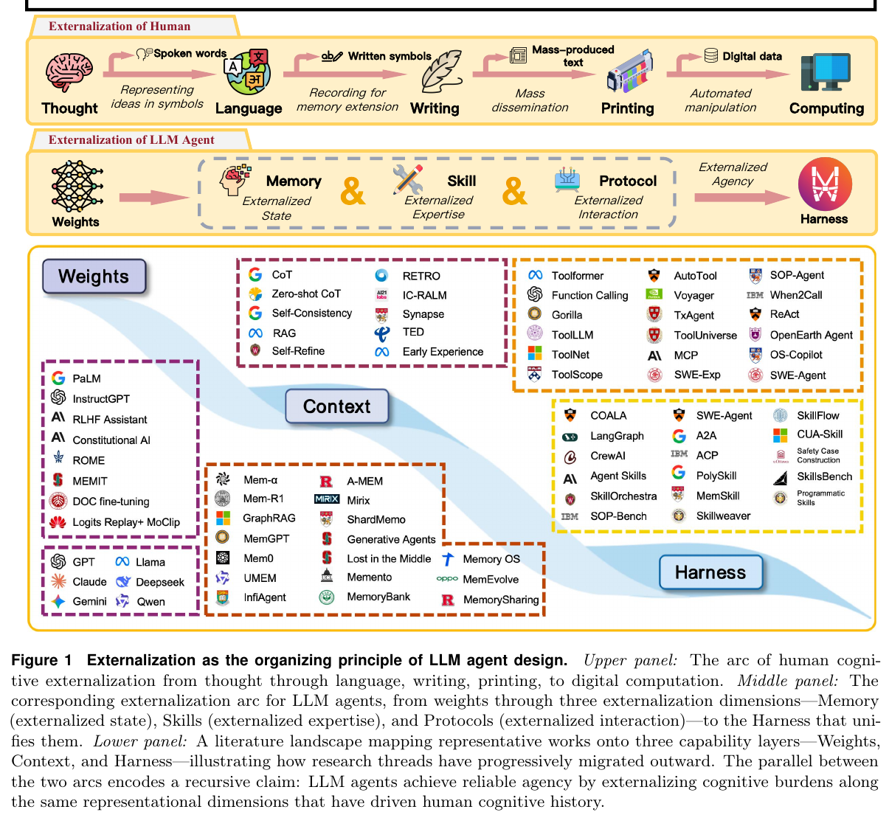
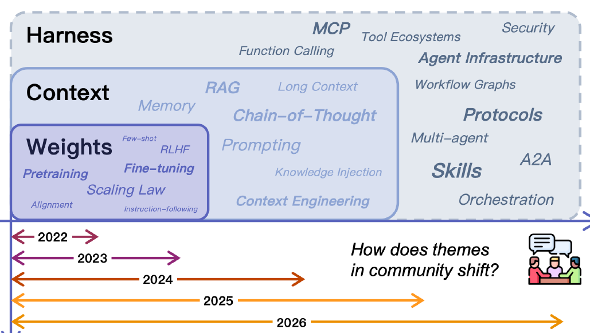
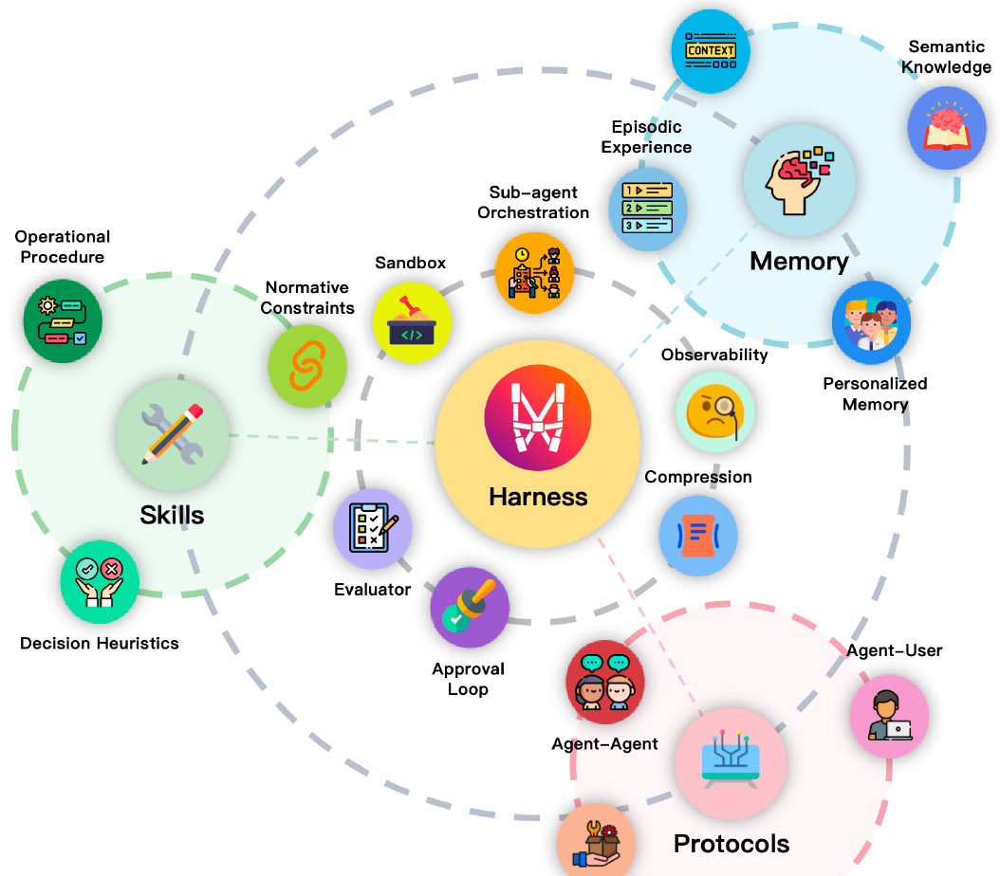
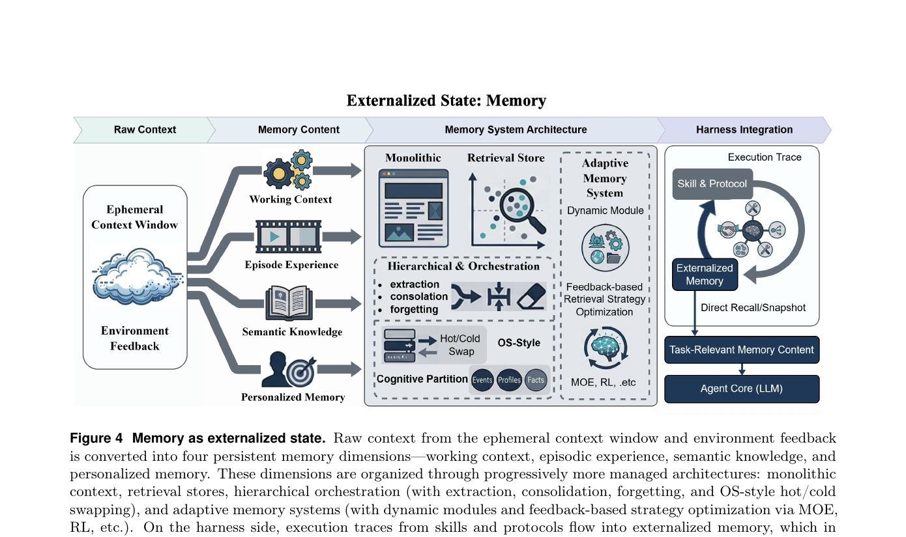
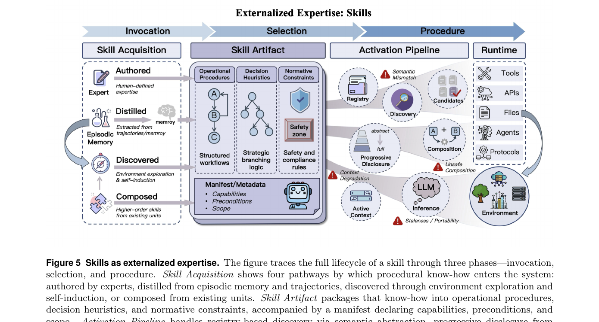
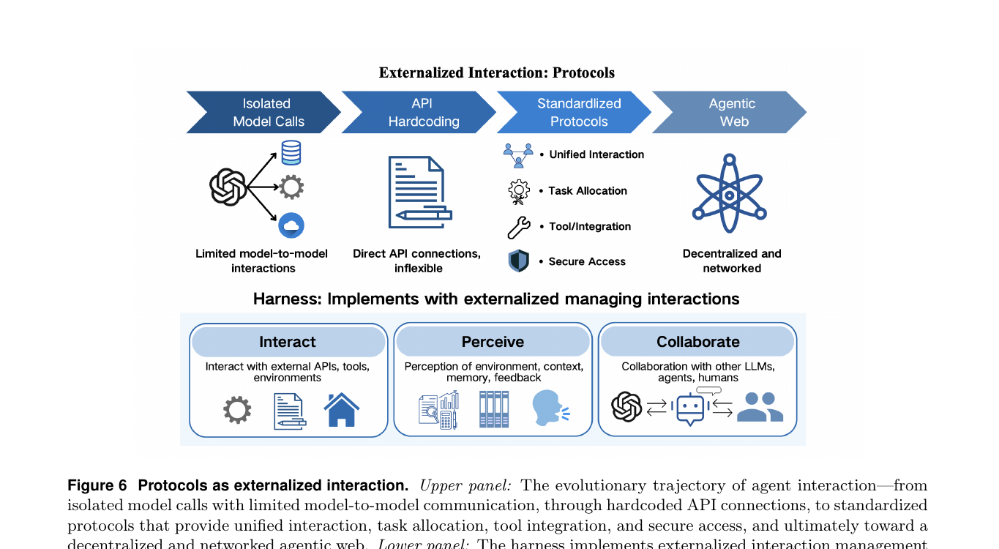
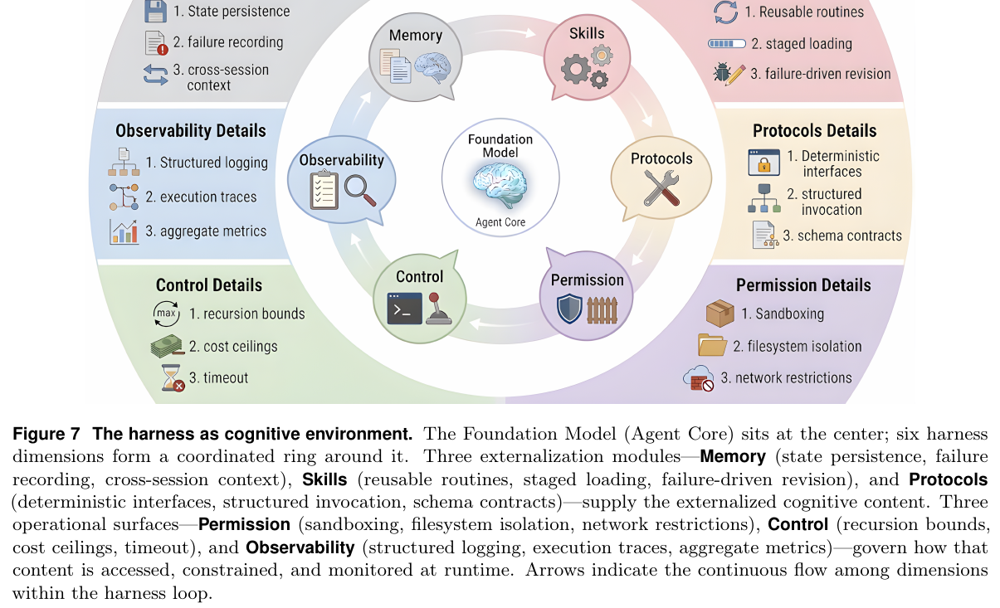
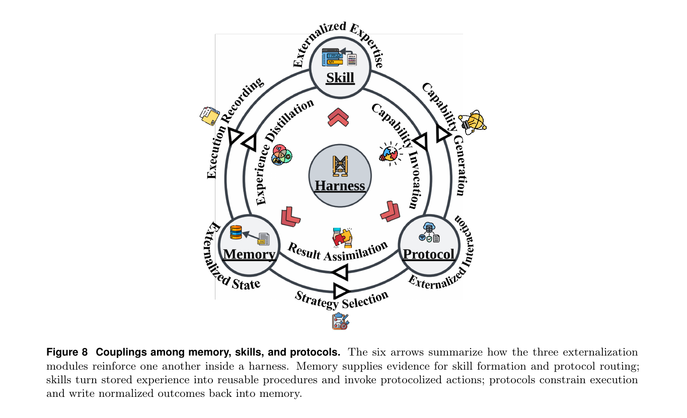

Externalization in LLM Agents: A Unified Review of Memory, Skills, Protocols and Harness Engineering
한국어 심층 요약
핵심 개념을 5분 안에 가볍게 훑어보려면 쉬운 설명(ELI5) 먼저 보기
ABSTRACT · 초록 요약
오늘날 거대 언어 모델(LLM) 에이전트는 모델의 가중치(weights) 자체를 바꾸기보다 모델을 둘러싼 런타임 환경을 재조직하는 방식으로 구축되는 흐름이 뚜렷해지고 있다. 과거에는 모델이 내부 연산만으로 스스로 해내기를 기대했던 능력들이 이제는 메모리 저장소, 재사용 가능한 스킬, 상호작용 프로토콜, 그리고 이들을 유기적으로 묶어 주는 하네스(harness)로 점차 외재화(externalized)되고 있다. 본 논문은 이러한 아키텍처의 변화를 외재화(externalization)라는 관점으로 조망한다.
Donald Norman의 인지적 인공물(cognitive artifact) 개념에 기대어 보면, 에이전트 인프라가 중요한 이유는 단순히 모델 옆에 보조 부품을 덧붙여서가 아니라 모델 혼자 감당하기 버거운 인지적 부담을 모델이 안정적으로 풀 수 있는 문제 형태로 바꾸어 주기 때문이다. 이 관점에서 메모리는 시간을 가로지르는 상태(state)를 외재화하고, 스킬은 절차적 전문성(procedural expertise)을 외재화하며, 프로토콜은 상호작용의 구조를 외재화한다. 하네스 엔지니어링은 이 세 가지를 통제된 실행 환경으로 묶어 내는 통합 계층으로 작동한다.
본 문서는 가중치(weights) → 컨텍스트(context) → 하네스(harness)로 이어지는 역사적 발전 궤적을 추적하고, 메모리·스킬·프로토콜을 서로 구분되면서도 긴밀히 맞물려 돌아가는 세 가지 외재화 축으로 분석한다. 아울러 매개변수 내부 능력과 외재화된 능력 사이의 절충(trade-off) 관계, 자가 진화 하네스(self-evolving harness)와 공유 에이전트 인프라 같은 미래 방향, 그리고 평가·거버넌스·장기 공진화 과제를 짚어 본다. 이를 통해 실용적인 에이전트의 도약이 왜 더 강력한 모델뿐만 아니라 더 정교한 외부 인지 인프라에 달려 있는지를 시스템 차원의 프레임워크로 명쾌하게 설명한다.
1Introduction
"The power of the cognitive artifact comes from its function as a representation. … Cognitive artifacts do not change human capabilities. They change the task." Donald A. Norman
인류 문명의 역사 자체를 인지적 외재화(cognitive externalization)의 역사로 읽을 수 있다. 구어(말)는 머릿속의 사적인 생각을 타인과 나눌 수 있는 상징으로 바꾸었다. 문자(글쓰기)는 휘발되기 쉬운 생물학적 기억에서 지식을 떼어내 영속적인 기록물로 옮겨 놓았다. 인쇄술은 지식의 복제를 사회 전체의 규모로 확장했고, 디지털 컴퓨터는 산술과 기호 연산을 인간의 신경망에서 프로그래밍 가능한 기계의 영역으로 넘겨주었다. 이 모든 역사적 전환에서 결정적이었던 변화는 도구 없이도 인간 자체의 생물학적 능력이 더 뛰어나게 진화했다는 점이 아니다. 오히려 외부의 인공물이 특정한 인지적 부담을 바깥으로 덜어 냄으로써 인지 시스템 전체를 재조직해 주었고, 덕분에 인간의 한정된 두뇌 자원은 계획·추상화·창의성 같은 고차원적 사유에 집중할 수 있게 되었다 [Norman, 1993]. 그리고 이처럼 인지 부담을 바깥으로 위임하는 똑같은 패턴이 지금 기계 지능의 최전선인 거대 언어 모델(LLM) 에이전트 설계에서 다시금 펼쳐지고 있다.
이러한 관점은 Donald Norman의 인지적 인공물(cognitive artifact) 이론에 단단한 이론적 뿌리를 둔다 [Norman, 1991, 1993]. 핵심 통찰은 명쾌하다. 외부의 보조 도구는 인간의 내적 능력을 단순히 증폭시키는 것이 아니라 풀어야 할 과제 자체의 성격을 바꾼다(transform)는 것이다. 장보기 목록을 종이에 적는다고 해서 인간의 생물학적 기억 용량이 늘어나지는 않는다. 대신 머릿속을 뒤져야 하는 까다로운 ‘회상(recall)’ 문제를 눈으로 보고 확인하는 쉬운 ‘인식(recognition)’ 문제로 바꾸어 줄 뿐이다. 지도 역시 인간의 공간 감각 자체를 키워 주는 게 아니라, 눈에 보이지 않는 공간적 관계를 한눈에 읽히는 시각 구조로 변환해 준다. 즉 인공물의 진짜 힘은 표상적 변환(representational transformation), 다시 말해 에이전트가 이미 가진 역량만으로도 훨씬 안정적으로 문제를 풀 수 있도록 과제의 형태를 재구성해 주는 데 있다 [Norman, 1991].
저자들은 바로 이 논리가 오늘날 LLM 기반 에이전트의 가장 핵심적인 설계 결정들을 관통하고 있다고 본다. 본 논문의 중심 명제는 외재화(externalization), 즉 모델 내부의 연산 부담을 영속적이고 검사 가능하며 재사용 가능한 외부 구조로 점진적으로 옮겨 가는 흐름이 곧 에이전트 아키텍처 전이의 핵심 논리(transition logic)라는 것이다. 각 아키텍처 전환이 왜 일어났고 어떤 종류의 신뢰성을 확보하려 했는지를 설명해 주는 메커니즘이자, 메모리·스킬·프로토콜·하네스 엔지니어링의 최근 발전들을 하나의 큰 그림으로 꿰어 주는 원리가 바로 외재화다. 이는 단순한 엔지니어링 요령에 관한 이야기가 아니라, 신뢰할 수 있는 에이전시(agency)가 어디에서 비롯되는가를 묻는 근본적인 주장이다. 진정한 에이전시는 단지 모델 크기를 끝없이 키운다고 해서 저절로 얻어지지 않는다. 모델 내부의 추론 능력과 외부의 인프라가 서로 맞물려 필요한 역량 전체를 감당하도록 과제의 구조를 체계적으로 다시 짜는 데서 비롯된다 [Norman, 1991; Sumers et al., 2024].

위 패널: 인간 인지 외재화의 역사적 흐름 (사고 → 언어 → 글쓰기 → 인쇄 → 디지털 계산). 중간 패널: 이에 대응하는 LLM 에이전트의 외재화 흐름 (가중치(Weights) → 메모리·스킬·프로토콜의 세 가지 외재화 차원 → 이를 하나로 통합하는 하네스(Harness)). 아래 패널: 주요 선행 연구들을 Weights · Context · Harness 세 계층에 매핑한 문헌 지형도. 두 흐름이 그리는 평행 구조는 LLM 에이전트 역시 인류 인지의 역사와 동일한 표상 차원을 따라 인지적 부담을 바깥으로 외재화함으로써 신뢰할 수 있는 에이전시에 도달한다는 통찰을 담고 있다.
이 관점으로 바라보면 오늘날 현업의 흐름이 한층 또렷하게 읽힌다. 흔히 AI의 발전은 더 거대한 모델, 더 정교한 학습 기법, 더 긴 추론 사슬을 향한 경쟁으로 묘사되곤 한다. 하지만 그런 요인들만으로는 실제 운영 시스템에서 나타나는 비약적인 신뢰성 향상을 온전히 설명할 수 없다. 실제 에이전트 신뢰성을 가장 크게 끌어올린 돌파구 중 상당수는 기반 모델(base model)을 전혀 건드리지 않은 상태에서 나왔다. 영속적인 메모리를 붙이고, 재사용 가능한 스킬을 체계화하고, 도구 인터페이스를 표준화하고, 명시적인 제어 로직으로 작업 흐름을 조율하는 등 모델을 둘러싼 외부 환경을 재설계한 결과였던 것이다 [Sumers et al., 2024; Wang et al., 2024a; Li, 2025; Luo et al., 2025]. 자연히 실무 현장의 핵심 질문도 "모델 자체가 얼마나 똑똑한가?"를 넘어 "어떤 부담을 모델 바깥으로 덜어 주었기에 모델이 매번 내부에서 그 문제를 새로 풀지 않아도 되는가?"로 옮겨가고 있다.
아무런 외부 장치 없는 맨몸의 LLM은 실제 업무에서 세 가지 고질적인 한계에 부딪힌다. 첫째, 컨텍스트 윈도우는 유한하고 세션 간 기억이 약하거나 아예 없어서 맥락이 끊기는 연속성(continuity) 문제가 발생한다. 이는 메모리 외재화가 해결한다. 둘째, 여러 단계로 이어지는 긴 절차를 일관되게 따르지 못하고 호출할 때마다 매번 새로 짜내려다 보니 결과가 흔들리는 변동성(variance) 문제가 생긴다. 이는 스킬 외재화가 다룬다. 셋째, 외부 도구나 서비스, 다른 에이전트와의 상호작용을 자유 형식의 프롬프트에만 맡겨 두면 호출이 쉽게 깨지는 조정(coordination) 문제가 불거진다. 이는 프로토콜 외재화가 해결한다 [Sumers et al., 2024; Packer et al., 2023]. 외재화가 결정적인 이유는 이 세 가지 무거운 부담을 각각 모델이 훨씬 안정적으로 다룰 수 있는 문제 형태로 변환해 주기 때문이다.
구체적인 예를 하나 떠올려 보면 직관이 바로 잡힌다. 대규모 코드 저장소에서 새 기능을 구현하고, 테스트를 돌려 검증한 뒤, 풀 리퀘스트(PR)까지 여는 소프트웨어 엔지니어링 에이전트를 생각해 보자. 만약 외재화된 장치가 전혀 없다면, 모델은 복잡한 디렉터리 구조와 팀의 코딩 컨벤션, 현재 워크플로 진행 상태, 도구 호출 규칙을 전부 깨지기 쉬운 프롬프트 하나에 짊어지고 있어야 한다. 반면 외재화가 갖춰진 환경에서는 영속적인 프로젝트 메모리가 필요한 맥락을 공급하고, 재사용 가능한 스킬 문서가 코딩 컨벤션과 작업 절차를 안내하며, 프로토콜화된 도구 인터페이스가 정확한 입출력 스키마를 강제하고, 하네스가 전체 실행 순서를 조율하며 출력을 검증하고 실패를 복구한다. 기반 모델은 그대로이지만, 모델이 마주하는 과제의 표상 자체가 완전히 달라지는 것이다.
이 시각은 인지과학의 분산 인지(distributed cognition) 및 확장된 인지(extended cognition) 이론과도 자연스럽게 맞닿아 있다. 기억하고, 행동을 안내하고, 상호작용을 조율하는 핵심 기능들이 외부 구조로 위임되고 나면, 지능은 더 이상 모델의 신경망 내부에만 갇혀 있지 않게 된다 [Clark and Chalmers, 1998]. 저자들은 "에이전트"와 "환경" 사이의 경계를 어디에 그을지가 곧 시스템의 실제 성능을 좌우하는 설계상의 선택(design choice)이라는 공학적 통찰을 적극 수용하되, 철학적인 존재론 논쟁과는 거리를 둔다. 논문의 초점은 어디까지나 실용적이다. 외재화는 최종 시스템의 신뢰성, 조합 가능성(composability), 통제 가능성으로 그 가치가 입증되는 핵심 설계 원리다.
이제 하네스를 이루는 세 가지 외재화 차원을 하나씩 짚어 보자. 각 차원은 Figure 1(중간 패널)에 제시된 표상적 변환 중 하나를 담당한다.
메모리는 시간을 가로지르는 상태를 외재화한다
맨몸의 모델이 일회성 컨텍스트 윈도우에만 기대어 과거 이력을 붙들고 있는 대신, 메모리 시스템은 누적된 지식(사용자 선호, 이전 작업 궤적, 해결된 모호성, 도메인 사실 등)을 단일 세션 너머까지 영속적으로 보존하고 필요한 순간에만 선택적으로 꺼내 쓸 수 있게 해 준다. 여기서 일어나는 핵심 변환은 회상(recall)에서 인식(recognition)으로의 전환이다. 에이전트는 더 이상 잠재 가중치 속에서 과거 지식을 애써 복원해 낼 필요 없이, 영속적이고 검색 가능한 외부 저장소에서 관련 기록을 찾아 읽고 활용하기만 하면 된다 [Lewis et al., 2020; Park et al., 2023; Packer et al., 2023; Chhikara et al., 2025; Xu et al., 2025b].
스킬은 절차적 전문성을 외재화한다
매번 호출할 때마다 모델 가중치에 기대어 작업 노하우를 처음부터 다시 생성해 내는 대신, 스킬 시스템은 검증된 절차와 모범 사례, 운영 지침을 재사용 가능한 산출물(artifact)로 패키징해 둔다. 핵심 변환은 즉흥적 생성(generation)에서 검증된 합성(composition)으로의 전환이다. 에이전트는 매 단계를 백지에서 새로 꾸며내는 대신, 미리 검증된 절차 블록들을 불러와 조합함으로써 안정적으로 행동을 이어 나간다 [OpenAI, 2023a; Schick et al., 2023; Wang et al., 2023a; Anthropic, 2025, 2026; Jiang et al., 2026b].
프로토콜은 상호작용 구조를 외재화한다
도구, 외부 서비스, 혹은 다른 에이전트와의 협업을 즉흥적인 자연어 프롬프트에만 맡겨 두는 대신, 프로토콜은 능력 발견(discovery)·호출·위임·권한 관리를 위한 명시적이고 기계 판독 가능한 계약(contract)을 정의한다. 핵심 변환은 임기응변적 소통에서 구조화된 교환으로의 전환이다. 모호하고 깨지기 쉬운 의사소통이 상호운용 가능하고 통제 가능한 규격화된 교환으로 바뀌는 것이다 [Anthropic, 2024; Google Cloud, 2025a; Ehtesham et al., 2025c].
그리고 하네스(Harness)는 이 세 차원을 밑바탕에서 떠받치며, 외재화된 인지가 실제 현업에서 빈틈없이 맞물려 돌아가도록 오케스트레이션 로직, 안전 제약, 관측 가능성(observability), 피드백 루프를 제공하는 통합 엔지니어링 계층이다. 주의할 점은 하네스가 메모리·스킬·프로토콜과 나란히 놓이는 ‘네 번째 외재화 부품’이 아니라는 사실이다. 하네스는 이 세 가지 외재화 모듈이 그 안에서 숨 쉬고 상호작용하는 런타임 환경 그 자체다.
물론 이 세 차원은 서로 고립된 채 따로 발전하지 않는다. 메모리 검색량을 늘리면 한정된 컨텍스트 예산을 두고 스킬 문서 로딩과 자리를 다투게 된다. 프로토콜을 표준화하면 상호운용성은 높아지지만, 스킬을 어떻게 패키징하고 호출할지에 일정한 제약이 따른다. 스킬을 실행하고 나면 그 흔적이 다시 메모리에 기록되고, 메모리에서 어떤 맥락을 꺼내 오느냐에 따라 다음에 선택할 스킬과 프로토콜 경로가 달라진다. 하네스는 바로 이 복합적인 상호작용 전체를 조율해야 한다.
세 영역은 각자 독자적인 기술 생태계를 빠르게 키워 왔다. 메모리 연구는 단순한 검색 보강 생성(RAG)에서 출발해 정교한 계층형 메모리 아키텍처로 진화했고 [Lewis et al., 2020; Packer et al., 2023; Chhikara et al., 2025; Xu et al., 2025b], 스킬 연구는 좁은 의미의 함수 호출(function calling)과 도구 학습에서 출발해 재사용 가능한 능력 패키지, 레지스트리, 점진적 공개(progressive disclosure) 메커니즘으로 뻗어 나갔다. 프로토콜 영역 역시 제각각이던 맞춤형 도구 스키마와 프레임워크별 접합 코드(glue code)를 넘어, 에이전트-도구 및 에이전트-에이전트 상호작용을 아우르는 표준 인터페이스 계층으로 자리 잡았다. 기존 서베이 논문들도 RAG, 심층 검색, 도구 학습, 에이전트 아키텍처, 프로토콜 상호운용성 등 각 단면을 깊이 있게 다루어 왔으며, 개념적으로 가장 가까운 가교 역할을 한 연구로는 CoALA [Sumers et al., 2024]를 꼽을 수 있다. 그러나 여전히 비어 있던 퍼즐 조각은 왜 이 갈래들이 하나같이 ‘외재화’라는 방향으로 수렴하고 있는지, 그리고 이 수렴이 에이전트의 정의 자체를 어떻게 새로 쓰고 있는지를 아우르는 통합적 설명이었다.
따라서 본 논문의 목표는 개별 부품을 따로 떼어 나열하는 또 하나의 부분 서베이를 보태는 것도, 에이전트의 발전을 특정 프레임워크 하나로 환원하는 것도 아니다. 대신 다음 네 가지 핵심 명제를 기둥 삼아 시스템 차원의 통합 리뷰를 제시한다.
- 메모리는 에이전트의 상태를 시간을 가로질러 외재화한다: 장기 연속성(long-horizon continuity) 유지라는 난제를 선택적 검색(selective retrieval) 문제로 변환한다.
- 스킬은 절차적 전문성을 외재화한다: 암묵적인 작업 노하우를 명시적이고 재사용 가능한 운영 지침으로 변환한다.
- 프로토콜은 상호작용 구조를 외재화한다: 모호하고 깨지기 쉬운 의사소통을 상호운용 가능하고 기계가 검증할 수 있는 계약으로 변환한다.
- 하네스 엔지니어링은 외재화된 모듈들을 하나로 통합한다: 안전 제약, 관측 가능성, 피드백 루프, 제어점이 완비된 일관된 런타임 환경으로 세 모듈을 묶어 낸다.
이어지는 본문의 구성은 다음과 같다. 2절은 가중치 → 컨텍스트 → 하네스로 이어지는 역사적 발전 경로를 짚어 본다. 3~5절은 메모리·스킬·프로토콜을 서로 구분되면서도 상호 보완적인 세 가지 외재화 축으로 상세히 분석한다. 6절은 외재화된 에이전트 설계를 하나로 아우르는 통합 규율로서 하네스 엔지니어링을 조명한다. 7절은 세 모듈이 맞물릴 때 나타나는 교차(cross-cutting) 상호작용과 설계상의 절충 공간을 살핀다. 8절은 한층 적응적이고 스스로 진화하는 외재화를 향한 미래 과제를 논의하며, 9절에서 에이전트 연구 전반에 던지는 함의로 글을 맺는다.
2Background: From Weights to Context to Harness
최근 수년간 이어진 LLM 에이전트의 발전사는 모델 내부에서 출발해 점차 모델 바깥으로 무게중심이 확장되어 온 과정으로 읽을 수 있다. 초기에는 에이전트의 능력을 모델 가중치(weights)에 내재된 속성으로 보았고, 그다음에는 프롬프트와 컨텍스트 윈도우(context window)를 어떻게 구성하느냐의 문제로 다루었으며, 이제는 모델이 그 안에서 숨 쉬고 작동하는 외부 인프라 전체의 속성으로 바라보고 있다. Figure 2는 이 궤적을 Weights · Context · Harness라는 세 계층으로 시각화하여 2022년부터 2026년까지 학계와 산업계의 연구 화두가 어떻게 이동해 왔는지를 한눈에 보여 준다. 물론 이 세 단계는 이전 단계를 버리고 대체하는 관계가 아니라 켜켜이 쌓이는 적층 구조에 가깝다. 인프라가 아무리 두꺼워진 시스템에서도 기반 모델의 가중치는 여전히 중요하지만, 단계가 올라갈수록 시스템 안에서 ‘수정 가능한 지능’이 어디에 자리하는지, 그리고 엔지니어링 자원이 어디에 집중되는지가 뚜렷하게 달라진다.

2022년부터 2026년까지의 타임라인을 따라 Weights · Context · Harness 세 계층이 차곡차곡 쌓여 올라가는 흐름을 나타낸 도식. 연구·개발 커뮤니티의 중심 화두가 사전학습·정렬 같은 매개변수 차원에서 출발해, 프롬프팅·RAG·컨텍스트 엔지니어링을 거쳐, 이제는 도구 생태계·프로토콜·스킬·다중 에이전트 오케스트레이션 같은 하네스 차원의 인프라로 이동해 왔음을 보여 준다.
2.1Capability in Weights
가중치 계층(Weights layer)은 현대 LLM이 막 등장하던 초기 국면에 해당한다. 에이전트의 능력이 곧 모델 파라미터 자체와 동일시되던 시기다. 방대한 코퍼스를 학습하는 사전학습(pre-training) 과정을 통해 광범위한 통계적 규칙성과 세계 지식, 잠재적 추론 능력이 가중치 안으로 압축되었다 [Brown et al., 2020; Chowdhery et al., 2023; Touvron et al., 2023]. 파라미터 수와 데이터 규모, 손실(loss) 사이의 예측 가능한 비례 관계를 밝혀낸 스케일링 법칙(scaling laws)은 "성능 향상은 곧 모델 크기에 비례한다"는 믿음을 굳혀 주었다 [Kaplan et al., 2020; Hoffmann et al., 2022]. GPT-4, Gemini, DeepSeek-V3, Qwen2.5 같은 대형 모델들이 다방면에서 뛰어난 범용 능력을 선보이자, 업계의 지배적인 서사 역시 "더 뛰어난 에이전트 = 더 크고 더 잘 학습된 모델"이라는 공식으로 수렴했다. 지도 미세조정(SFT)과 인간 선호도 최적화(RLHF)는 지시문 수행, 대화 톤앤매너, 위험 요청 거절, 도메인 규칙을 학습시키며 모델을 쓸 만한 비서로 다듬어 주었고 [Ouyang et al., 2022; Bai et al., 2022a], DPO는 별도의 보상 모델 없이도 정렬(alignment) 과정을 간소화했다 [Rafailov et al., 2023]. 이 패러다임 안에서 에이전트의 발전이란 곧 모델 가중치 자체를 재학습해 고치거나 더 큰 모델로 갈아 끼우는 것을 뜻했다.
이 패러다임은 오늘날에도 여전히 모든 시스템의 주춧돌이며, 능력을 가중치 공간 안에 담아 두는 방식은 분명한 강점을 지닌다. 외부 저장소를 조회할 필요가 없으니 추론 속도가 빠르고, 배포 구조가 단출하며, 작업별 보조 장치를 일일이 붙이지 않아도 뛰어난 범용 일반화 성능을 발휘한다. 의학 상식에 답하고, 시를 짓고, 짧은 코드 버그를 잡고, 법률 계약서를 요약하는 일을 주변 시스템 변경 없이 모델 하나로 해내는 단발성·문맥 자족적 과제라면 가중치 중심의 접근만으로도 충분히 훌륭하다.
하지만 모든 지식과 절차, 정책을 오직 가중치 공간에만 새겨 넣는 방식은それら을 정적인 모델 파일 하나에 지나치게 단단히 묶어 버린다는 한계를 안고 있다. 가령 특정 국가의 현직 수반이 바뀌었다는 단 하나의 사실을 업데이트하려고 해도 재학습이나 지식 편집(knowledge editing) [Meng et al., 2022; Mitchell et al., 2022; Yao et al., 2023b], 혹은 추가 정렬 패치를 덧대야 하며, 그 과정에서 자칫 모델의 다른 능력에 예기치 않은 부작용(side effect)을 일으킬 위험이 따른다. 모델이 왜 특정 상황에서 그런 행동을 했는지 사후 감사(audit)하기가 막막한 이유도 같다. 관련 지식이 눈으로 들여다볼 수 있는 독립 모듈이 아니라 수십억 개의 파라미터에 잘게 흩어져 암호처럼 인코딩되어 있기 때문이다 [Zhao et al., 2024]. 개인화(personalization) 역시 난감해진다. 단 하나의 고정된 가중치 묶음으로 저마다 다른 이력과 취향, 제약 조건을 가진 수백만 사용자를 동시에 응대해야 하지만, 파라미터 수준에서는 각 사용자를 구분해 맞춤 상태를 유지할 방도가 없다.
결국 매개변수에 내재된(parametric) 지식의 근본적인 한계는 선택적인 업데이트와 조합, 통제가 극도로 어렵다는 데 있다. 에이전트가 단순한 일문일답(single-turn QA)에 머무는 동안에는 이 약점이 크게 두드러지지 않았다. 그러나 시스템이 장기 작업 실행(long-horizon task execution), 즉 중간 상태가 계속 쌓이고 복잡한 절차가 오차 없이 반복되어야 하며 여러 외부 도구가 정교하게 맞물려야 하는 영역으로 들어서자, 가중치 내부에서 지식·스킬·상호작용 규칙을 모듈식으로 관리할 수 없다는 한계가 치명적인 병목으로 떠올랐다. 바로 이 지점에서 개발자들은 모든 부담을 모델 파라미터에만 지우는 대신 다음 계층으로 눈을 돌리기 시작했다.
2.2Capability in Context
컨텍스트 계층(Context layer)은 엔지니어링의 초점이 모델 가중치 수정에서 ‘입력 설계’로 옮겨간 단계다. 프롬프트 엔지니어링은 가중치를 단 1비트도 건드리지 않고도 모델의 행동 양식을 극적으로 바꿀 수 있음을 입증했다. 퓨샷(few-shot) 예시, 역할 부여, 사고 사슬(CoT) 분해, 자기 일관성(self-consistency) 샘플링은 모두 동일한 모델이 동일한 과제를 풀어내는 수준을 한 단계 끌어올렸다 [Wei et al., 2022; Wang et al., 2023b; Kojima et al., 2022]. 곧이어 한층 구조화된 추론 기법들이 등장했다. ReAct는 추론 과정과 도구 호출을 하나의 생성 루프 안에 엮어 냄으로써 모델 아키텍처 변경 없이 프롬프트 구성만으로 에이전트다운 행동이 가능함을 보여 주었다 [Yao et al., 2023a]. Tree of Thoughts는 선형적인 사고 사슬을 중간 추론 상태들에 대한 체계적인 트리 탐색으로 확장했고 [Yao et al., 2024], Self-Refine은 반복적인 자기 비평과 수정 루프를 도입했으며 [Madaan et al., 2023], APE/OPRO 같은 자동 프롬프트 최적화 기법은 모델 스스로 최적의 프롬프트 공간을 탐색하게 하여 수작업 부담을 덜어 주었다 [Zhou et al., 2023; Pryzant et al., 2023]. 여기에 검색 보강 생성(RAG)이 가세하여 질의 시점에 외부 문서를 동적으로 컨텍스트에 끌어오면서 한층 체계적인 외재화의 길이 열렸다 [Lewis et al., 2020; Borgeaud et al., 2022; Ram et al., 2023; Gao et al., 2024]. 이제 질문의 무게중심은 "모델이 학습 때 무엇을 외웠는가"에서 "매 호출을 둘러싼 정보 파이프라인을 어떻게 설계할 것인가"로 이동했다.
이 전환은 에이전트 개발에 전례 없는 유연성을 불어넣었다. 개발자는 무거운 그래디언트 업데이트 없이도 런타임에 즉석에서 세부 지시문, 최신 도메인 지식, 출력 스키마, 검색된 근거 문서를 컨텍스트에 꽂아 넣을 수 있게 되었다. 컨텍스트 윈도우는 모델을 위해 무대 뒤에서 인지 재료를 미리 차려 두는 작업대, 즉 모델이 추론에 들어가기 직전에 꼭 필요한 정보들을 조립해 올려 두는 스테이징 공간으로 거듭났다. 실제로 수많은 현업 시스템에서 프롬프트와 검색 파이프라인을 빠르게 고쳐 나가는 방식이 파인튜닝보다 훨씬 경제적이고 민첩하다는 사실이 확인되었다. 기반 모델은 얼려 둔(frozen) 채로 주변의 프롬프트 템플릿, 검색 로직, 도구 명세만 발 빠르게 진화시킬 수 있게 된 것이다.
컨텍스트 중심 단계 역시 Norman의 ‘표상적 변환’ 개념으로 명쾌하게 해석된다. "모델이 사실 X를 가중치 속에 기억하고 있는가?"라는 까다로운 회상(recall) 문제가, "사실 X를 컨텍스트 안에 펼쳐 놓았을 때 모델이 이를 읽고 활용할 수 있는가?"라는 훨씬 쉬운 인식(recognition) 문제로 변환된 것이다 [Liu et al., 2024a]. 이는 인류가 문자를 발명하며 겪었던 회상에서 인식으로의 도약과 정확히 궤를 같이한다(Figure 1 위 패널). 모델은 더 이상 세상 모든 정답을 통째로 암기할 필요 없이, 눈앞에 제시된 관련 구절을 알아보고 문맥에 맞게 적용하기만 하면 되었다. Figure 2에서 컨텍스트 계층에 자리 잡은 프롬프팅, RAG, CoT 기법들이 바로 이 전환을 대변한다 [Zhang et al., 2024; Ram et al., 2023].
하지만 컨텍스트에만 기대는 설계 역시 뚜렷한 한계에 봉착한다. 컨텍스트 윈도우는 유한하고 토큰 비용이 들며, 중요도가 낮은 정보까지 마구잡이로 채워 넣으면 이내 추론을 방해하는 잡음(noise)으로 변질된다. 프롬프트가 길어진다고 해서 성능이 마냥 좋아지기는커녕 오히려 떨어지는 일도 흔하다. 유명한 "중간 손실(lost in the middle)" 현상이 보여 주듯, 모델은 긴 입력의 처음과 끝에만 주의를 기울일 뿐 한가운데 묻힌 정보는 제대로 찾아내지 못한다 [Liu et al., 2024a]. 최근 모델들의 컨텍스트 한도가 2K 토큰에서 100K 토큰 이상으로 비약적으로 넓어졌음에도 [Chen et al., 2023; Peng et al., 2024] 이 근본적인 긴장은 해소되지 않는다. 그릇이 커졌다고 해서 무엇을 담고 무엇을 뺄지 선별(curation)해야 할 필요성이 사라지지는 않기 때문이다. 게다가 컨텍스트 자체는 본질적으로 휘발성이다. 상태를 외부 어딘가에 명시적으로 빼두지 않는 한, 새 세션이 열릴 때마다 에이전트는 기억상실 상태로 되돌아간다. 시스템이 복잡해질수록 프롬프트 텍스트 조립만으로는 제어가 위태로워진다. 프롬프트에 지시문을 아무리 길게 적어 넣은들, 그것만으로 시스템이 세션을 넘나들며 상태를 보존하고, 다단계 워크플로를 스케줄링하고, 하위 에이전트들을 조율하고, 부분 실패에서 안전하게 복구하고, 장기 실행 내내 보안 제약을 강제할 수는 없다. 바로 이 한계들이 에이전트 아키텍처를 한 겹 더 바깥쪽 계층으로 밀어 올렸다.
2.3Capability through Infrastructure
Figure 2의 최상단이자 Figure 1(아래 패널)의 가장 오른쪽에 자리한 하네스 계층(Harness layer)은 에이전트의 능력이 단순한 프롬프트 구성을 넘어 영속적인 외부 인프라로 확장되는 오늘날의 단계를 가리킨다. 컨텍스트 윈도우가 포화 상태에 이르고 거대해진 프롬프트 템플릿이 한계를 드러내자, 엔지니어링의 핵심 질문은 "모델에게 무슨 말을 건넬 것인가?"에서 "모델이 어떤 환경 안에서 일하게 만들 것인가?"로 다시 한번 도약했다. 성숙한 현대 에이전트 시스템의 신뢰성은 외부 메모리 저장소, 도구 레지스트리, 프로토콜 규격, 격리 샌드박스, 하위 에이전트 오케스트레이션, 컨텍스트 압축 파이프라인, 자동 평가기(evaluator), 테스트 하네스, 인간 승인 루프에 점점 더 깊이 의존하고 있다 [Wang et al., 2024a; Li, 2025; Luo et al., 2025; Xi et al., 2023].
이 전환을 알린 초기 시스템들은 구조는 단순했을지언정 시사하는 바가 컸다. Auto-GPT [Richards, 2023]와 BabyAGI [Nakajima, 2023]는 LLM을 작업 큐(task queue), 영속 메모리, 웹 검색 도구가 달린 반복 루프 안에 감싸 넣었고, 그처럼 단출한 하네스만으로도 단일 프롬프트 호출로는 불가능했던 장기 자율 행동을 이어 갈 수 있음을 보여 주었다. 뒤이어 한층 정교한 설계 원칙을 갖춘 프레임워크들이 쏟아져 나왔다. AutoGen은 다중 에이전트 간의 메시지 교환 규격을 정립했고 [Wu et al., 2023], MetaGPT는 역할 기반 분업과 표준운영절차(SOP)를 이식했으며 [Hong et al., 2023], CAMEL은 작업 분해를 위한 구조화된 역할 대화를 선보였고 [Li et al., 2023], Reflexion은 이전 에피소드의 실패 피드백을 다음 시도에 반영하는 구조를 도입했다 [Shinn et al., 2023]. 이 모든 시스템을 관통하는 공통된 움직임은 인지적 부담을 모델 내부에서 끌어내어 모델을 감싸는 외부 구조에 이식하는 것이었다.
이제 이러한 아키텍처는 거의 모든 실무 도메인에서 표준으로 자리 잡았다. 코딩 에이전트인 SWE-Agent와 OpenHands는 파일 시스템, 셸, 버전 관리(Git), 테스트 러너, 재사용 가능한 스킬 문서가 완비된 개발 하네스 안에 모델을 배치한다 [Yang et al., 2024a; Wang et al., 2024b]. 리서치 및 엔터프라이즈 에이전트(Deep Research 계열 등)는 심층 검색과 웹 브라우징, 장기 오케스트레이션 파이프라인을 결합한다 [OpenAI, 2025b; Google, 2024]. Voyager, LangGraph, CrewAI, OS-Copilot 같은 체화(embodied) 및 워크플로 시스템 역시 제어 흐름과 환경 접근, 스킬 재사용을 외부 구조로 명확히 드러낸다 [Wang et al., 2023a; LangChain, 2024; CrewAI, 2024; Wu et al., 2024]. 현장의 결론은 분명하다. 에이전트의 신뢰성 문제는 더 이상 프롬프트 문구를 다듬는 수준이 아니라, 모델이 작동하는 외부 환경을 재설계함으로써 해결되고 있다.
Figure 3이 보여 주듯 하네스는 메모리·스킬·프로토콜이라는 세 가지 외재화 축을 하나로 아우른다. 각 축은 하네스가 모델로부터 덜어 내는 세 가지 핵심 부담에 정확히 대응한다. 메모리 시스템은 시간을 가로지르는 상태를 외재화하여 맥락의 연속성이 휘발성 컨텍스트에 휘둘리지 않게 잡아 준다. 스킬 시스템은 절차적 전문성을 외재화하여 복잡한 워크플로를 매번 즉흥적으로 짜내는 대신 검증된 절차를 불러와 실행하게 한다. 프로토콜은 상호작용 구조를 외재화하여 도구 및 타 에이전트와의 협업이 모호한 프롬프트가 아닌 엄격한 계약을 따르도록 보장한다. 이 요소들이 한데 어우러져 모델을 감싸 안고, 모델이 마주하는 난제를 내부 역량만으로도 안정적으로 풀 수 있는 형태로 변환해 주는 영속 인프라, 곧 하네스를 완성한다.

중앙에 하네스(Harness)가 자리하고, 그 둘레를 세 가지 외재화 차원이 감싸고 있는 아키텍처. 메모리(Memory)는 작업 컨텍스트·의미 지식·에피소드 경험·개인화 메모리를, 스킬(Skills)은 운영 절차·결정 휴리스틱·규범적 제약을, 프로토콜(Protocols)은 에이전트-사용자·에이전트-에이전트·에이전트-도구 인터페이스를 각각 담당한다. 샌드박싱, 관측 가능성, 컨텍스트 압축, 평가, 승인 루프, 하위 에이전트 오케스트레이션 같은 운영 메커니즘들이 중심부 하네스와 세 외재화 모듈 사이의 유기적 결합을 매개한다.
이 구도 속에서 "에이전트 엔지니어링"은 곧 "하네스 엔지니어링"과 동의어가 되어 간다. 물론 기반 모델은 여전히 핵심 추론 엔진으로 활약하지만, 더 이상 지능이 깃드는 유일한 장소는 아니다. 에이전트의 실질적인 역량은 모델이 무엇을 보고, 무엇을 기억하고, 어떤 도구를 호출하며, 어디까지 행동이 허용되는지를 규정하는 전체 시스템 구조 속에 고루 분산되어 있다.
2.4Externalization as the Transition Logic
가중치에서 컨텍스트로, 다시 하네스로 이어진 진화의 궤적을 한데 포개어 보면, 이는 결국 Norman이 말한 외재화의 역사로 수렴한다 [Norman, 1991]. 모델 내부에서 다루기 버거운 부담들이 단계적으로 외부의 명시적인 산출물로 옮겨 가고, 그에 발맞춰 모델이 풀어야 할 과제의 성격 자체도 변환되어 온 과정이다. 시시각각 변하는 가변 지식(mutable knowledge)은 고정된 가중치에서 외부 검색 시스템과 런타임 컨텍스트로 옮겨 가며 ‘회상’을 ‘인식’으로 바꾸어 놓았다. 재사용 가능한 절차(reusable procedure)는 암묵적인 가중치 속 습관에서 명시적인 스킬 문서로 옮겨 가며 ‘즉흥적 생성’을 ‘구조화된 합성’으로 바꾸었다. 상호작용 규칙(interaction rule)은 느슨한 프롬프팅에서 엄격한 프로토콜로 옮겨 가며 ‘모호한 조율’을 ‘통제된 계약’으로 바꾸었다. 그리고 런타임 신뢰성(runtime reliability)은 하네스 제어 로직 안으로 편입되어 안전 제약과 관측 가능성, 피드백 루프를 투명하게 구현해 냈다.
이러한 역할 재배치는 모델과 과제 사이의 구조적 불일치에 대응하는 과정으로 볼 때 가장 잘 이해된다. LLM은 눈앞에 주어진 정보를 유연하게 종합하고 추론하는 데는 탁월하지만, 장기 기억을 흔들림 없이 유지하거나 복잡한 절차를 토씨 하나 틀리지 않고 반복하거나 외부 시스템과 엄격히 통제된 상호작용을 주고받는 일에는 취약하다. 따라서 외재화는 모델을 대체하려는 시도가 아니라 모델을 중심에 두고 더 넓은 인지 시스템을 짜 올리는 작업이며, 이는 CoALA [Sumers et al., 2024] 같은 인지 아키텍처 관점과도 정확히 맞닿아 있다. 하네스의 세 가지 핵심 축은 이 틀에서 자연스럽게 도출된다. 메모리는 시간에 걸친 연속성을, 스킬은 절차의 일관성을, 프로토콜은 상호작용의 구조를 각각 책임진다. 이어지는 장들에서는 이 세 축을 하나씩 깊이 있게 들여다본다.
3Externalized State: Memory
메모리의 외재화는 에이전시가 짊어진 시간의 부담(temporal burden)을 해결한다. 외부 기억 장치가 없는 맨몸의 언어 모델은 대화의 연속성, 과거의 시행착오, 사용자 고유의 맥락, 아직 끝나지 않은 중간 작업 상태를 전부 일회성 프롬프트 안에 꾸역꾸역 담아 두어야 한다. 하지만 작업이 여러 세션과 분기, 중단을 가로질러 길게 이어지는 순간 이러한 방식은 급격히 불안정해지고 비용 또한 감당할 수 없이 치솟는다. 메모리는 이 시간적 부담을 모델 바깥에서 기록하고 갱신하며 언제든 다시 꺼내 쓸 수 있는 영속적인 상태(persistent state)로 외재화한다. 하네스가 갖춰진 에이전트에서 메모리는 단순한 과거 기록 보관소에 그치지 않는다. 중단된 작업을 이어 가기 위한 체크포인트이자, 재사용 가능한 스킬로 정제될 원재료이며, 프로토콜 라우팅 경로를 결정하는 경험 통계이고, 거버넌스 모듈이 점검하고 통제할 수 있는 명시적 상태 공간이다. 본 장에서는 메모리가 어떤 종류의 상태를 외재화하는지(3.1), 그 아키텍처가 어떻게 진화해 왔는지(3.2), 더 큰 하네스 안에서 다른 모듈들과 어떻게 맞물리는지(3.3)를 차례로 짚어 본 뒤, 인지적 인공물의 관점에서 메모리의 의미를 재해석한다(3.4).

휘발성 컨텍스트 윈도우와 환경 피드백에서 들어오는 원시 데이터가 네 가지 영속적인 메모리 차원(작업 컨텍스트, 에피소드 경험, 의미 지식, 개인화 메모리)으로 변환되는 흐름. 이 차원들은 일체형 컨텍스트에서 출발해 검색 저장소, 계층형 아키텍처(추출·통합·망각 및 OS 스타일의 핫/콜드 스왑), 그리고 적응형 메모리 시스템(MoE·RL 등을 통한 피드백 기반 검색 최적화)으로 점차 정교하게 조직된다. 하네스 안에서는 스킬과 프로토콜이 남긴 실행 흔적이 외재화된 메모리로 흘러 들어가고, 메모리는 다시 직접 회상이나 선별된 스냅샷 형태로 현재 작업에 필요한 맥락을 에이전트 코어(LLM)에 공급한다.
3.1What Is Externalized: The Content of State
메모리의 핵심 역할은 시간을 가로지르는 에이전트의 상태를 휘발성 컨텍스트로부터 분리해 내는 데 있다. 이때 메모리에 담기는 대상은 하네스의 모든 외부 산출물이 아니라 시간적 연속성을 지탱하는 기록들, 곧 현재 작업의 진행 상태, 과거의 실행 경험, 추상화된 도메인 지식, 사용자나 환경에 관한 지속적 맥락이다. 장기 상호작용에서 에이전트가 일관성을 잃지 않으려면, 이 기록들을 시간적 수명(lifespan)과 검색 목적에 맞춰 세분화해 관리해야 한다. 인간 기억에 관한 고전적인 심리학 분류를 LLM 에이전트에 맞게 변주하여, 본 논문은 외재화된 상태를 다음 네 가지 차원으로 구분한다.
작업 컨텍스트(Working context)
작업 컨텍스트는 지금 한창 진행 중인 과제의 살아 움직이는 중간 상태다. 현재 열려 있는 파일, 임시 변수, 검증 중인 가설, 절반쯤 작성된 계획, 실행 체크포인트 등이 여기에 속한다. 값이 시시각각 변하고 과제가 끝나면 유효기간이 다하지만, 바깥으로 빼두지 않으면 컨텍스트 윈도우가 초기화되거나 프로세스가 끊기는 순간 흔적도 없이 날아간다. 코딩 에이전트가 좋은 예다. OpenHands나 SWE 계열 에이전트는 작성 중인 코드 초안과 터미널 상태, 작업 공간(workspace) 산출물을 프롬프트 바깥의 파일 시스템에 실체화해 둠으로써, 흐름이 끊기더라도 처음부터 다시 더듬어 가는 대신 직전 상태에서 곧바로 작업을 이어 간다 [Wang et al., 2025a; Yang et al., 2024b].
에피소드 경험(Episodic experience)
에피소드 경험은 과거의 작업 실행에서 실제로 벌어졌던 일들을 시간순으로 기록한다. 어떤 분기점에서 어떤 결정을 내렸고, 어떤 도구를 호출했으며, 어디서 실패하고 어떤 결과를 얻었는지에 관한 구체적인 회고록이다. 이 기록의 진가는 단순한 로그 보관에 있지 않다. 검색을 통해 다시 불려 나온 과거 에피소드는 생생한 선례가 되어 에이전트가 똑같은 실수를 되풀이하지 않게 막아 주고, 훗날 일반화된 지식을 뽑아낼 원재료를 제공한다. Reflexion은 실패한 시도에 대한 자기 반성 요약을 재사용 가능한 경험으로 저장해 이 패턴을 정립했고 [Shinn et al., 2023], AriGraph는 낯선 환경에서 겪은 국지적 상호작용 궤적들을 에피소드 기억으로 축적해 더 넓은 세계 모델을 구축했다 [Anokhin et al., 2024].
의미 지식(Semantic knowledge)
의미 지식은 개별 에피소드의 시공간적 맥락을 넘어 보편적으로 통용되는 추상 지식을 담는다. 도메인 사실, 범용 휴리스틱, 프로젝트 코딩 규칙, 안정적인 배경지식 등이 대표적이다. 특정 시점과 사건에 묶여 있는 에피소드 기억과 달리, 의미 지식은 시간과 장소에 구애받지 않는다 [Li and Li, 2024; De Brigard et al., 2022]. 두 기억의 차이는 정보의 크기가 아니라 기능에 있다. 에피소드 기억이 "그때 그 사건에서 무슨 일이 있었는가"를 알려 준다면, 의미 기억은 "여러 사례를 관통해 일반적으로 성립하는 법칙이 무엇인가"를 알려 준다. 오늘날 에이전트 시스템에서 가장 흔히 볼 수 있는 외재화된 의미 기억은 지식 베이스(KB)와 RAG 코퍼스다. 최근 연구들은 한 걸음 더 나아가, 사람이 미리 적어 둔 정적 문서에만 기대지 않고 에이전트가 누적된 작업 궤적으로부터 스스로 의미 수준의 가이드를 정제해 내는 방향으로 나아가고 있다.
개인화 메모리(Personalized memory)
개인화 메모리는 특정 사용자나 팀, 운영 환경에 관한 지속적인 특성을 추적한다. 사용자의 선호도, 업무 습관, 반복되는 제약 조건, 과거 대화 맥락 등이 여기에 해당한다. 주의할 점은 이 개인화 상태를 에이전트의 범용 지식 저장소와 한데 섞어서는 안 된다는 것이다. 사용자별 기록은 보존 기간과 검색 범위, 프라이버시 보호 규칙이 전혀 다른 규범을 따라야 하기 때문이다 [Xi et al., 2024; Lin et al., 2025a]. 최근 시스템들은 이 분리를 아키텍처 차원에서 명확히 구현한다. IFRAgent는 모바일 사용 시연으로부터 개인별 습관 저장소를 구축하고 [Wu et al., 2025], 웹 에이전트들은 외재화된 프로필을 통해 사용자의 암묵적 선호를 추론하며 [Cai et al., 2025], VARS 같은 대화형 시스템은 세션을 가로지르는 선호도 카드를 격리된 전용 메모리 공간에 보관한다 [Hao et al., 2026]. 이처럼 개인화 메모리는 범용 작업 지식과 장기 사용자 모델링이 서로 오염되지 않도록 분리하면서 에이전트가 사용자에게 맞춰 진화할 수 있게 해 준다.
물론 이 네 가지 메모리 계층이 미래에 유용할 모든 외부 지식을 남김없이 포괄하는 것은 아니다. 예컨대 처음에는 에피소드 흔적 속에서 반복적으로 관찰되던 작업 패턴이라도, 하네스가 이를 정제해 명시적이고 재사용 가능한 표준 절차로 승격시키는 순간 그 산출물은 더 이상 메모리에 머물지 않는다. 그때부터는 메모리 계층을 떠나 스킬(Skill) 계층의 일원이 되는 것이다.
네 계층을 나란히 놓고 보면 메모리가 단순히 데이터를 쌓아 두는 단일 데이터베이스가 아니라, 서로 다른 추상화 수준에서 요구되는 시간적 연속성의 부담을 세분화해 외재화한 구조임이 분명해진다. 작업 컨텍스트는 당장의 작업 재개를, 에피소드 기록은 성찰과 오류 복구를, 의미 메모리는 지식의 추상화와 전이를, 개인화 메모리는 사용자 맞춤형 적응을 각각 뒷받침한다. 각각의 저장소가 모델 내부에서 복원해야 했을 서로 다른 성격의 기억 부담을 대신 짊어지고 있으므로, 하네스 역시 이 네 저장소를 각기 다른 수명 주기와 정책으로 다루어야 한다.
3.2How It Is Externalized: Memory Architectures
상태의 내용들을 바깥으로 꺼내 놓았다면, 그다음 핵심 설계 과제는 ‘현재 진행 중인 추론(active reasoning)’과 ‘저장된 과거 상태’를 어떤 구조로 분리하고 연결할 것인가가 된다. Du [2026a]의 분류를 따라가 보면 현존하는 메모리 아키텍처는 크게 네 가지 패러다임으로 진화해 왔다. 일체형 컨텍스트(Monolithic Context), 검색 저장소를 결합한 컨텍스트(Context with Retrieval Storage), 계층형 메모리와 오케스트레이션(Hierarchical Memory and Orchestration), 그리고 적응형 메모리 시스템(Adaptive Memory Systems)이다. 발전의 방향은 뚜렷하다. 단순히 저장 공간의 용량을 늘리는 수준을 넘어 무엇을 기록하고, 무엇을 상위 지식으로 승격시키며, 무엇을 검색하고 압축하고 잊어버릴지에 관한 ‘제어 정책’을 점점 더 정교하고 명시적으로 다듬는 방향이다.
3.2.1Monolithic Context
가장 초기의 시스템들은 일체형 컨텍스트 방식에 의존했다. 과거의 대화 이력 전체나 그 요약본을 프롬프트 안에 통째로 달고 다니는 방식이다. 별도의 외부 메모리 서버를 구축할 필요가 없으니 구조가 투명하고 프로토타입을 빠르게 만들 수 있으며, 호흡이 짧은 작업에서는 꽤 준수하게 작동한다. 하지만 구조적 한계가 명확하다. 작업이 길어질수록 확장성이 급격히 떨어지고, 거듭되는 요약 과정에서 핵심 세부 사항이 왜곡되며, 정작 현재 단계의 추론에 써야 할 귀중한 토큰 예산을 과거 이력을 끌고 다니는 데 허비하게 된다. 무엇보다 세션이 종료되는 순간 모든 상태가 증발해 버려, 에이전트가 세션을 넘어 경험을 축적할 수 없다는 치명적인 약점이 있다.
3.2.2Context with Retrieval Storage
이에 따라 주류로 자리 잡은 다음 단계가 컨텍스트 윈도우에는 당장의 작업 상태만 남겨 두고, 호흡이 긴 기록들은 외부 저장소에 빼두었다가 필요할 때만 검색해 끌어오는 ‘컨텍스트 + 검색 저장소’ 패턴이다. 현재 상용화된 대다수 코파일럿과 AI 비서, 코딩 에이전트가 이 구조를 채택하고 있다. 이 방식은 컨텍스트 용량 한계는 단숨에 해결해 주지만, 대신 메모리의 품질 문제를 고스란히 ‘검색(retrieval)의 정확도 문제’로 옮겨 놓는다. 엉뚱한 기록이 검색되어 올라오면 모델의 추론이 삼천포로 빠지고, 꼭 필요한 기록을 검색에서 놓치면 시스템은 마치 그런 일을 겪은 적조차 없는 것처럼 행동한다. 최근 연구들은 이 검색 병목을 돌파하기 위해 다각도로 진화하고 있다. GraphRAG [Edge et al., 2024]는 개체 간 그래프 구조와 커뮤니티 단위의 요약 검색을 결합했고, ENGRAM [Cheng et al., 2026]은 메모리를 조밀한 잠재 상태 표상으로 압축하며, SYNAPSE [Zheng et al., 2023]는 에피소드-의미 통합 그래프 위에서 활성화 확산(spreading activation) 기법을 써서 단순 키워드 일치를 넘어선 맥락적 연관성을 건져 올린다. 구체적인 메커니즘은 저마다 다르지만 지향점은 하나다. 평면적인 벡터 유사도 검색의 한계를 넘어 장기 추론에 꼭 들어맞는 입체적 기억 표상을 구축하는 것이다.
3.2.3Hierarchical Memory and Orchestration
평면적 검색의 한계가 드러나면서 메모리 아키텍처는 계층형 구조와 오케스트레이션으로 한 단계 더 진화했다. 모든 기억 흔적이 똑같은 보존 기간이나 똑같은 검색 경로를 가져야 할 이유가 없다는 통찰이 그 출발점이다. Mem0 [Chhikara et al., 2025], Memory-R1 [Yan et al., 2025b], Mem-α [Wang et al., 2025b] 같은 프레임워크는 기억의 추출(extraction), 통합(consolidation), 망각(forgetting)을 명시적인 연산으로 도입하여, 메모리를 수동적인 데이터 창고가 아니라 능동적으로 관리되는 라이프사이클 시스템으로 탈바꿈시켰다. 이 영역은 크게 두 가지 설계 흐름이 이끌고 있다.
- 시공간적 차원의 자원 계층화: 컴퓨터 운영체제(OS)의 가상 메모리 관리 원리를 차용해, 메모리를 적극적으로 스케줄링해야 할 한정된 자원으로 다루는 흐름이다. MemGPT [Packer et al., 2023]와 MemoryOS [Kang et al., 2025]는 당장 참조하는 핫(hot) 작업 상태와 차가운(cold) 장기 외부 저장소를 명확히 분리하고, 작업 맥락이 바뀔 때마다 계층 간에 정보를 스왑(swap)한다. 이를 통해 고정된 컨텍스트 예산 안에서도 훨씬 방대한 실효 기억 용량을 확보한다.
- 인지·기능적 차원의 의미 분리: 기억을 기능이나 정보의 성격에 따라 서로 다른 전용 저장소로 나누어, 이질적인 기록들이 하나의 검색 채널에서 뒤섞이지 않게 하는 흐름이다. MemoryBank [Zhong et al., 2024]와 MIRIX [Wang and Chen, 2025]는 개별 사건과 사용자 프로필, 범용 세계 지식을 분리해 저장하고, MemOS [Li et al., 2025]는 명시적 기억과 암묵적 기억을 구분하며, xMemory [Hu et al., 2026]는 주제-사건 간의 계층 트리를 구축한다. 이는 단순히 분류표를 깔끔하게 정리하려는 것이 아니라, 복잡한 과제에서 상황에 딱 맞는 정밀한 검색을 실현하기 위한 구조다.
3.2.4Adaptive Memory Systems
계층형 아키텍처가 큰 진전을 이루었지만, 여전히 언제 무엇을 저장하고 잊을지에 관한 규칙은 사람이 미리 짜 둔 휴리스틱에 크게 의존한다. 가장 최근에 등장한 적응형 메모리 시스템은 한 발 더 나아가 메모리 모듈 구조와 라우팅 결정, 검색 전략 자체를 실제 운영 경험에 맞춰 스스로 진화시킨다. 크게 두 갈래의 시도가 두드러진다.
- 동적 모듈 진화: 메모리 아키텍처 자체를 런타임에 유연하게 변형하는 접근이다. MemEvolve [Zhang et al., 2025a]는 메모리 라이프사이클을 인코딩·저장·검색·관리라는 독립 모듈로 쪼개어 실행 중에도 각 모듈이 독자적으로 진화할 수 있게 설계했다. MemVerse [Liu et al., 2025a]는 단기 캐시와 멀티모달 지식 그래프를 나란히 유지하면서, 파편화된 경험들을 주기적으로 추상 지식과 경량 신경망 컴포넌트로 정제해 낸다.
- 피드백 기반 제어 정책 학습: 저장소 구조는 비교적 고정해 두되, 실행 피드백을 통해 최적의 메모리 제어 정책을 학습하는 접근이다. MemRL [Zhang et al., 2026c]은 비매개변수적 강화학습을 통해 검색 행동을 지속적으로 업데이트하고, Zhang et al. [2025c]의 적응형 프레임워크는 전문가 혼합(MoE) 게이팅으로 질의마다 최적의 검색 경로를 동적으로 라우팅하며, GAM [Yan et al., 2025a]은 다회차 상호작용을 거치며 검색 조건을 정교하게 다듬는다.
이 네 단계를 관통하는 가장 핵심적인 변화는 메모리의 중심축이 단순 저장(storage)에서 능동적 제어(control)로 이동했다는 점이다. 일체형 컨텍스트가 기억의 ‘존재 유무’를 해결했고, 검색 저장소가 ‘용량 한계’를 돌파했으며, 계층형 시스템이 ‘체계적 조직’을 이루었다면, 적응형 시스템은 ‘최적의 운영 정책’을 학습하기 시작했다. 이제 성숙한 에이전트에서 메모리는 프롬프트 옆에 달린 수동적인 보조 장치가 아니다. 모델이 매 순간 어떤 ‘과거’를 발판 삼아 행동할지를 결정하는 하네스 핵심 제어판(control surface)의 일부로 자리 잡았다.
3.3Memory Demands of the Harness Eras
에이전트가 본격적인 하네스 시대로 접어들면서, 메모리 시스템은 더 이상 홀로 떨어진 저장 모듈로 머물지 않는다. 런타임이 시간적 연속성과 절차의 재사용, 통제된 상호작용을 하나로 조율하는 바닥판(substrate)이 된다. 따라서 오늘날 메모리 설계가 답해야 할 핵심 질문은 단순히 "어떻게 하면 데이터를 더 많이 쌓아 둘까?"가 아니다. "시간에 걸쳐 쌓인 상태를 계획·실행·복구 루프가 필요한 순간에 한눈에 읽고 쓸 수 있게(legible) 어떻게 구조화할 것인가?"이다.
이를 위해 하네스 환경은 무엇보다 에이전트의 상태를 활성 컨텍스트로부터 과감히 분리해 내라고 요구한다. 호흡이 매우 긴 장기 과제를 수행할 때 세션 이력을 컨텍스트 안에 끝없이 쌓아 두면 모델의 어텐션(attention)이 분산되어 추론력이 급격히 떨어진다. InfiAgent [Yu et al., 2026] 같은 프레임워크가 제안하는 파일 중심 상태 추상화(file-centric state abstraction)가 대표적인 해법이다. 상위 수준의 계획부터 중간 변수, 도구 실행 결과에 이르기까지 모든 작업 상태를 실시간으로 외부 파일 시스템에 기록하여 파일 시스템을 유일한 정본(single source of truth)으로 삼는 방식이다. 이렇게 하면 에이전트는 매 결정 단계마다 장황한 과거 로그 전체를 다시 읽는 대신, 잘 정돈된 작업 공간의 현재 스냅샷과 직전 행동 몇 가지만 깔끔하게 읽고 다음 행동을 결정할 수 있다. 모든 이력을 프롬프트에 짊어지는 대신 모델이 즉각 행동할 수 있는 형태로 현재 상태를 실체화해 주는 것, 이것이 하네스 수준에서 구현된 메모리의 표상적 역할이다.
아울러 메모리는 스킬 시스템과도 긴밀히 맞물려 돌아가야 하지만, 두 계층의 본분은 명확히 구분된다. 메모리는 과거 실행의 구체적 증거들, 즉 실행 궤적과 결과, 실패 기록, 사용자 및 과제별 맥락을 보존한다. 반면 스킬은 그렇게 쌓인 증거들 가운데 반복해서 유효함이 입증된 패턴이 명시적이고 재사용 가능한 표준 절차로 승격되는 순간 탄생한다. 그리고 거꾸로 스킬이 한 번 실행될 때마다 그 실행 흔적은 다시 메모리에 새로운 경험으로 기록된다. 요컨대 메모리는 그 자체가 절차적 지침서는 아니지만, 훗날 정교한 지침서를 길어 올리고 검증할 수 있게 해 주는 경험적 증거의 토대다.
프로토콜 계층과의 결합 역시 새로운 요건을 부과한다. 도구 호출 결과나 인간 승인 내역, 하위 에이전트 위임 이벤트, 외부 환경의 상태 변화는 모두 프로토콜화된 인터페이스를 거쳐 유입되지만, 이들이 정규화되어 영속 저장소에 기록되어야만 비로소 에이전트의 메모리가 된다. 반대로 메모리에서 꺼내 온 과거의 성공·실패 통계는 다음에 어떤 프로토콜 경로를 택할지 결정하는 데 중요한 판단 근거가 된다. 이처럼 성숙한 하네스 안에서 메모리와 프로토콜은 통제된 읽기/쓰기 루프로 단단히 묶여 있으면서도, 개념적으로는 각자의 영역을 지킨다. 프로토콜은 경계를 넘는 순간의 ‘교환’을 규율하고, 메모리는 시간을 가로지르는 ‘지속성’을 규율한다.
끝으로 여러 에이전트가 하나의 외재화된 상태 공간을 함께 읽고 쓰기 시작하면, 메모리 공유와 거버넌스 메커니즘이 필수 불가결해진다. 에이전트별 읽기/쓰기 권한을 세밀하게 나누고, 서로 다른 에이전트가 기록한 사실 간의 충돌을 조율하며, 접근 쿼터와 격리 경계를 관리하는 일은 운영체제(OS)의 메모리 보호 및 동시성 제어에 버금가는 정교한 통제를 요구한다. 결국 하네스 시대의 메모리는 단순한 데이터베이스가 아니라 관리되는 상태 인프라(managed state infrastructure)다. 시간적 기억 부담을 바깥으로 덜어 내어 모델이 내부에서 기억해야 할 대상을 재구성하고, 하네스의 나머지 모듈들이 발 디딜 영속적인 토대를 제공하는 것이다.
3.4Memory as Cognitive Artifact
지금까지 메모리 시스템이 담는 내용과 아키텍처, 하네스 내 통합 방식을 살펴보았다. 이 절에서는 한 걸음 물러서서 Norman의 인지적 인공물 이론 [Norman, 1993]과 Kirsh의 보완 전략(complementary strategy) 개념 [Kirsh, 1995]을 빌려, 메모리의 외재화가 표상적 변환으로서 어떤 본질적 도약을 이뤄내는지 해석해 본다.
오늘날의 LLM은 본질적으로 무상태(stateless) 함수다. 매번 호출할 때마다 백지상태의 컨텍스트에서 새로 출발하기 때문에, 시간적 연속성이 저절로 이어지지 않고 매 호출마다 외부에서 다시 불어넣어 주어야 한다. 짧은 몇 마디 대화에서는 프롬프트 안에 이전 대화를 덧붙이는 것만으로 이 한계를 가릴 수 있다. 하지만 장기 과제로 넘어가는 순간 이 무상태성은 치명적인 구조적 한계로 돌변한다. 과거의 수많은 시도와 절반쯤 끝난 작업, 사용자별 고유 사실, 변화하는 환경 상태를 토큰 비용 폭증이나 맥락 표류(drift), 윈도우 잘림(truncation) 없이 단일 컨텍스트 안에 영원히 살려 둘 수는 없기 때문이다. 즉 아무런 외부 기억 장치 없는 맨몸의 모델이 마주하는 과제는 원리적으로 불가능에 가깝다. 사실상 무한히 늘어나는 과거 이력을 전부 활성 상태로 붙들고 있으면서, 동시에 눈앞의 현재 단계에 대해 명석하게 추론해야 하는 이중고를 떠안기 때문이다.
메모리의 외재화는 바로 이 불가능한 과제의 구조 자체를 바꾸어 놓는다. Norman의 언어로 표현하자면, 표상적 변환을 통해 모델 내부의 막막한 ‘회상(recall)’ 문제를 외부 저장소에 대한 ‘인식(recognition) 및 검색’ 문제로 전환하는 것이다. 모델은 더 이상 수십억 파라미터 속에서 과거 이력을 더듬어 복원할 필요가 없다. 메모리 시스템이 현재 상황에 맞춰 수면 위로 건져 올려 준 정제된 이력의 단면을 눈으로 읽고 활용하기만 하면 된다. 이는 종이에 적은 목록 하나가 인간의 ‘기억하기’라는 행위의 본질을 어떻게 바꾸어 놓는지를 설파한 Norman의 분석과 정확히 일치한다. 핵심은 단순히 참조할 정보가 늘어났다는 데 있지 않고, 인지 시스템이 풀어야 할 과제의 형태 자체가 재구성되었다는 데 있다 [Norman, 1991]. 앞서 2.2절에서 컨텍스트 계층이 이뤄낸 전환을 확인했듯, 메모리는 그 변환의 지평을 단일 컨텍스트 윈도우로는 도저히 감당할 수 없는 여러 세션과 긴 시간 축 너머로 확장한다.
이렇게 바라보면 왜 메모리의 단순 저장 용량보다 ‘검색과 선별의 품질’이 훨씬 결정적인지가 자명해진다. 아무리 방대한 저장소를 갖추었더라도 검색이 부정확해 엉뚱한 기록을 끌어오는 시스템은 모델에게 왜곡된 문제 표상을 들이미는 셈이어서, 기록은 존재할지언정 과제의 난도는 조금도 낮아지지 않는다. 반대로 정교한 색인과 요약, 맥락 맞춤형 선별이 뒷받침된다면 비교적 아담한 규모의 메모리만으로도 모델의 후속 추론을 극적으로 수월하게 만들어 줄 수 있다. 따라서 메모리 시스템의 성패를 가르는 진짜 척도는 "얼마나 많은 데이터를 저장했는가?"가 아니라 "지금 내려야 할 결정을 얼마나 명료하고 읽기 쉽게(legible) 만들어 주었는가?"이다.
이 시각은 Kirsh가 말한 보완 전략의 원리와도 정확히 맞물린다. 뛰어난 행위자는 단순히 머릿속으로만 더 골똘히 생각하는 대신, 외부 환경을 영리하게 재조직해 인지 부담의 상당 부분을 환경 쪽으로 떠넘김으로써 전체 수행 능력을 끌어올린다 [Kirsh, 1995]. 메모리 시스템은 시간의 축에서 이 보완 전략을 구현한 결정체다. 모델에게 모든 상태를 머릿속에 외우고 있으라고 다그치는 대신, 하네스가 기록의 보존과 최신성(freshness) 유지, 관련성 필터링을 바깥에서 도맡아 처리하고, 모델에게는 그렇게 추려진 맥락을 해석하고 판단하는 본연의 임무만 남겨 주는 것이다. 양쪽이 각자 가장 잘하는 역할을 나누어 맡는 이상적인 인지적 분업이다.
나아가 인지적 인공물 관점은 현업에서 흔히 겪는 메모리 관련 장애들을 단순한 코딩 버그가 아니라 ‘표상 설계의 실패’로 명쾌하게 진단해 준다. 오래되어 낡은(stale) 메모리는 철 지난 문제 표상을 눈앞에 들이밀어 현재 상황을 오판하게 만든다. 지나치게 뭉뚱그려 추상화된 메모리는 당장의 실행에 꼭 필요한 구체적 디테일을 증발시켜 버리고, 반대로 전혀 추상화되지 않은 날것의 메모리는 프롬프트를 잡음으로 뒤덮어 외재화가 덜어 주려 했던 인식 과제 자체를 다시 마비시킨다. 오염되거나 서로 모순되는 메모리는 검색된 맥락 속에 거짓 전제를 심어 후속 추론 전체를 그르친다. 이 모든 실패는 데이터를 너무 적게 혹은 너무 많이 저장해서 생기는 문제가 아니라, 과거의 이력을 ‘지금 당장 쓸 수 있는 현재의 표상’으로 제대로 변환해 내지 못한 데서 비롯된다.
결국 이 렌즈를 통해 본 메모리는 단순히 컨텍스트 길이를 늘리기 위한 공학적 편법이 아니다. 에이전시가 짊어진 시간의 무게를 근본부터 다시 빚어내는 인지적 인공물이다. 끝없는 기억 회상의 굴레를 유한하고 정제된 검색 과제로 변환함으로써 매 순간 모델이 마주하는 문제의 난도를 낮추어 주는 것이다. 일체형 컨텍스트에서 출발해 계층형·적응형 시스템으로 진화해 온 메모리의 역사 역시 결국 하나의 분명한 설계 목표를 향해 수렴한다. 꼭 필요한 과거의 이력을 꼭 필요한 순간에 가장 읽기 쉬운 형태로 건네주어, 모델의 한정된 추론 에너지가 기억을 더듬는 일이 아닌 문제 해결 자체에 온전히 쓰이게 만드는 것이다.
4Externalized Expertise: Skills
스킬의 외재화는 에이전시가 겪는 절차적 부담(procedural burden)을 해결한다. 언어 모델이 원론적으로는 어떤 과제의 해결법을 알고 있다 하더라도, 실제 현업에서 그 과제를 매번 흔들림 없이 완수하려면 실행할 때마다 세부 워크플로와 기본 설정값, 안전 제약을 일일이 다시 짜 맞춰야 한다. 작업 단계가 길어지고 환경이 특수하며 분기점이 많아질수록 이 부담은 눈덩이처럼 불어나며, 결국 실행 결과의 심한 변동성(중간 단계 누락, 불안정한 도구 호출, 일관성 없는 종료 판단 등)으로 터져 나온다.
여기서 스킬이 가져오는 표상적 전환은 매번 반복되는 즉흥적 생성에서 검증된 절차의 재사용으로의 도약이다. 매 실행마다 모델 가중치나 임시 프롬프트에 기대어 작업 노하우를 백지에서 새로 짜내라고 요구하는 대신, 스킬 시스템은 그 노하우를 언제든 검색해 불러오고 수정하고 조합할 수 있는 명시적 산출물(artifact)로 패키징해 둔다. 이는 단순히 에이전트가 호출할 수 있는 도구의 개수를 늘리는 일이 아니다. 모델이 런타임에 마주하는 과제의 성격을 "복잡한 워크플로를 즉석에서 새로 발명하는 일"에서 "이미 검증된 워크플로를 골라 맥락에 맞게 따라가는 일"로 바꾸어 놓는 것이다 [Xu and Yan, 2026b; Wang et al., 2026a].
하네스를 갖춘 에이전트 안에서 스킬은 메모리와 실제 행동의 한가운데에 자리 잡는다. 스킬은 메모리에서 꺼내 온 현재 상태와 맥락에 맞춰 선택되고, 프로토콜화된 인터페이스를 거쳐 실제 도구 및 하위 에이전트 실행으로 연결되며, 실행이 끝난 뒤 남는 흔적과 회고를 통해 지속적으로 다듬어진다. 앞선 3장에서 살펴보았듯 메모리가 시간의 흐름 속에서 ‘무엇을 배웠는가’를 외재화한다면, 스킬은 그렇게 축적된 경험을 ‘어떻게 재사용 가능한 운영 절차로 굳힐 것인가’를 외재화한다 [Sumers et al., 2024; Wu and Zhang, 2026]. 본 장에서는 스킬이 구체적으로 어떤 절차적 부담을 외재화하는지, 작업 실행의 형태를 어떻게 재구성하는지, 그리고 하네스 안에서 어떻게 살아 움직이는 실행 단위로 작동하는지를 차례로 살펴본다.

호출(invocation) → 선택(selection) → 절차 실행(procedure)으로 이어지는 스킬의 전체 라이프사이클. 스킬 획득(skill acquisition)은 절차적 노하우가 시스템에 유입되는 네 가지 경로(전문가가 직접 작성하는 authored, 에피소드 기억과 실행 궤적에서 정제해 내는 distilled, 환경 탐험과 자기 유도로 찾아내는 discovered, 기존 스킬들을 조합해 만드는 composed)를 보여 준다. 스킬 산출물(skill artifact)은 이 노하우를 운영 절차, 결정 휴리스틱, 규범적 제약, 그리고 능력 범위와 전제 조건을 선언하는 매니페스트로 패키징한다. 활성화 파이프라인(activation pipeline)은 의미적 매칭을 통한 발견, 요약 매니페스트에서 상세 가이드로 이어지는 점진적 공개(progressive disclosure), 그리고 도구·API·파일·하위 에이전트·프로토콜과의 실행 결합 및 합성으로 이어진다. 마지막으로 런타임에서는 활성 컨텍스트와 LLM이 선택된 스킬을 수행하며, 의미적 정합성 어긋남, 노후화 및 이식성 한계, 컨텍스트 의존적 성능 저하, 안전하지 않은 합성 같은 경계 조건들이 신뢰성에 영향을 미친다.
4.1What is Externalized: Procedural Expertise
스킬이 외재화하는 대상은 단발성 행동 인터페이스가 아니라 절차적 전문성(procedural expertise)이다. 여기서 전문성이란 모델이 어떤 작업을 "할 줄 안다"는 막연한 가능성이 아니라, 반복되는 전제와 제약 조건 아래에서 그 작업을 매번 일관되고 안정적으로 완수해 내는 구체적인 방법을 뜻한다. 이로써 인접 개념들과의 경계도 또렷해진다. 도구(Tool)가 개별 연산 기능을 열어 주고, 프로토콜(Protocol)이 그 연산을 기술하고 호출하는 규격을 정의한다면, 스킬(Skill)은 그 도구와 프로토콜을 엮어 특정 부류의 과제를 처음부터 끝까지 어떻게 완수해야 하는지를 규정한다. 실무에서 이 절차적 전문성은 서로 긴밀히 맞물린 세 가지 요소, 곧 운영 절차(operational procedure), 결정 휴리스틱(decision heuristics), 규범적 제약(normative constraints)으로 이루어진다. 이 세 가지가 하나로 묶일 때 비로소 하네스가 바깥으로 꺼내어 재사용할 수 있는 온전한 노하우 단위가 완성된다.
4.1.1Operational Procedure
운영 절차는 과제를 수행하는 뼈대다. 복잡한 업무를 명확한 단계와 국면(phase), 선후 의존성, 종료 조건으로 쪼개어 배열한 설계도다. 이는 LLM 에이전트에서 가장 빈번하게 관찰되는 실패 원인을 정조준한다. 현장에서 에이전트가 겪는 수많은 실패는 개별 행동을 할 줄 몰라서가 아니라, 프로세스 수준의 불안정성(필수 단계 건너뛰기, 작업 순서 뒤바뀜, 성급한 조기 종료 등) 때문에 벌어지기 때문이다 [Hsiao et al., 2025; Nandi et al., 2026]. 운영 절차를 외재화한다는 것은 이처럼 휘발되기 쉬운 프로세스 지식을 눈에 보이는 명시적 실행 경로로 못 박아 둔다는 뜻이다.
이러한 접근은 LLM 추론 기법의 발전사와도 맞닿아 있다. Chain-of-Thought가 머릿속 중간 추론 과정을 텍스트로 끌어냈고 [Wei et al., 2023], ReAct가 추론과 도구 행동을 한 고리로 묶었으며 [Yao et al., 2023a], 뒤이은 프롬프트 체이닝과 오케스트레이션 기법들이 반복되는 패턴을 정형화된 워크플로로 다듬었다. 하지만 이 초기 기법들에 빠져 있던 결정적 조각은 영속성(persistence)이었다. 절차적 흐름이 당장의 실행 세션 안에서는 만들어졌을지언정, 다음번에 다시 꺼내 쓸 수 있는 독립된 산출물로 남지 못했던 것이다. 스킬 시스템은 워크플로 구조 자체를 파일로 저장하고 버전을 관리하며 반복 재사용할 수 있는 산출물로 격상시킴으로써 이 빈자리를 채운다 [Ye et al., 2025].
절차가 바깥으로 외재화되면 에이전트의 실행은 즉흥성에서 벗어나 예측 가능성을 얻는다. 작업이 중간에 끊겨도 멈춘 단계부터 정확히 이어 갈 수 있고, 다른 컨텍스트나 하위 에이전트에 바통을 깔끔하게 넘겨줄 수 있으며, 전체 워크플로를 처음부터 다시 추론하지 않고도 부분 오류를 복구할 수 있다. 순간적인 문장 유창성보다 프로세스의 일관된 완결성이 생명인 장기 과제, 다중 에이전트 협업, 엔터프라이즈 운영 환경에서 특히 결정적인 가치다.
4.1.2Decision Heuristics
운영 절차가 전체 실행의 뼈대를 세운다면, 결정 휴리스틱은 실행 도중 마주치는 갈림길(분기점)에서 어떻게 판단할 것인가를 안내한다. 현실의 업무가 처음부터 끝까지 외길 파이프라인으로 매끄럽게 흘러가는 법은 드물다. 호출한 도구가 오류를 뱉기도 하고, 관찰된 데이터에 잡음이 섞여 있기도 하며, 그럴싸해 보이는 여러 갈래의 선택지가 동시에 눈앞에 놓이기도 한다. 이런 불확실성 속에서 숙련된 전문가의 실력을 가르는 것은 모든 경우의 수를 다 뒤지는 무차별 탐색이 아니라, 오랜 경험에서 길어 올린 실전적인 판단 규칙(rule of thumb)이다 [Gigerenzer and Gaissmaier, 2011].
이 휴리스틱을 스킬 안에 외재화해 두면 모델이 추론 에너지를 쓰는 방식이 달라진다. 갈림길에 설 때마다 모델이 밑바닥부터 시행착오를 겪으며 선택지를 고민하게 두는 대신, 이미 현장에서 효과가 검증된 기본 선택지(default), 상위 보고(escalation) 기준, 대안 시도 순서를 명시적으로 적어 주는 것이다. 덕분에 추론에 드는 시간과 토큰 비용이 줄어들 뿐 아니라 에이전트의 판단도 한결 일관되게 유지된다. 요컨대 결정 휴리스틱은 곁가지 팁이 아니라 스킬이 숙련자의 노하우를 담아내는 핵심 그릇이다. 무엇을 가장 먼저 시도해 볼지, 언제 미련 없이 우회로로 돌아갈지, 어느 정도의 근거가 모이면 다음 단계로 넘어가도 좋은지, 여러 목표가 충돌할 때 무엇을 우선시할지가 모두 여기에 담긴다.
4.1.3Normative Constraints
절차적 전문성을 완성하는 세 번째 조각은 규범적 제약, 곧 어떤 절차가 현업에서 용인될 수 있는지를 가르는 안전 및 품질 기준선이다. 기술적으로는 결과가 잘 나오는 워크플로라 할지라도 사내 보안 규정에 어긋나거나, 운영 환경을 망가뜨릴 위험이 있거나, 도메인 윤리에 위배된다면 실무에 쓸 수 없다. 실제 운영 환경에서의 작업 실행은 언제나 필수 테스트 통과 요건, 수정 허용 범위, 데이터 접근 권한, 감사 추적성(traceability), 도메인별 준수 규칙이라는 울타리 안에서 이루어져야 한다 [Chen et al., 2021; Bai et al., 2022b; Wei et al., 2023; Schick et al., 2023; Madaan et al., 2023].
이 규범적 제약들을 스킬 산출물 안에 명시적으로 외재화하면, 제약 조건은 작업이 다 끝난 뒤에야 들이대는 사후 채점표가 아니라 스킬의 실행 과정 자체를 제어하는 내장 안전장치가 된다. 실행 전 필수 사전 조건을 확인하고, 위험한 명령 분기를 원천 차단하며, 단계마다 중간 검증을 강제하고, 작업 완료 선언 전에 반드시 제출해야 할 증빙 자료를 규정하는 식이다. 이로써 스킬은単に "이 작업을 어떻게 해내는가"뿐만 아니라 "조직과 안전의 경계 안에서 어떻게 올바르게 해내는가"까지 함께 품게 된다. 성숙한 에이전트 아키텍처에서 스킬이 능력을 전달하는 매개체이자 동시에 거버넌스를 구현하는 매개체로 기능하는 이유가 여기에 있다.
정리하자면 운영 절차는 실행의 뼈대를, 결정 휴리스틱은 분기점에서의 판단 기준을, 규범적 제약은 안전과 품질의 울타리를 각각 제공한다. 이 세 요소가 다양한 작업과 맥락을 가로질러 흔들리지 않을 만큼 명확히 명세될 때 비로소 스킬은 재사용 가능한 자산이 된다. 스킬이 저수준 도구 인터페이스보다 한 단계 위에, 그리고 메모리와 나란히 자리하는 이유도 바로 이것이다. 스킬은 과거의 정적인 상태도, 파편화된 개별 함수 호출도 아닌 반복 가능한 업무 완수 노하우 그 자체를 외재화한다.
4.2From Execution Primitives to Capability Packages
스킬 시스템은 어느 날 갑자기 하늘에서 떨어진 개념이 아니며, 단순한 도구 호출(tool use)과 동일시해서도 안 된다. 역사적 계보로 보면 스킬은 앞서 이루어진 두 단계의 진전, 곧 안정적인 단일 행동 호출(reliable action invocation)과 대규모 도구 선택(large-scale action selection)의 토대 위에서 피어난 세 번째 단계다. 앞의 두 단계가 에이전트가 외부 세계에서 무엇을 할 수 있는가의 외연을 넓혔다면, 스킬은 한 부류의 복합 과제를 어떻게 처음부터 끝까지 반복 가능하게 완수할 것인가를 다룬다. 즉 절차적 조직 그 자체가 명시적이고 재사용 가능한 산출물로 독립할 때 비로소 스킬의 시대가 열린다.
4.2.1Stage 1: Atomic Execution Primitives
1단계는 구조화된 함수 호출(function calling) 인터페이스를 통해 언어 모델에게 외부 행동을 안정적으로 실행할 수 있는 손발을 달아 준 시기다. Toolformer가 대표적인 이정표로, 모델이 스스로 언제 외부 도구를 부르고 어떻게 인자(argument)를 채워 넣으며 돌아온 결괏값을 문맥에 어떻게 통합할지 학습할 수 있음을 입증했다 [Schick et al., 2023]. 이 단계의 핵심 성취는 원자적 행동 단위(atomic primitive)에 대한 신뢰할 수 있는 접근을 확보한 것이다. 하지만 이 단계에는 복합적인 과제를 완수하기 위한 다단계 절차나 재사용 가능한 워크플로 구조가 아직 없었다. 다루는 단위가 개별 함수 호출일 뿐, 아직 스킬은 아니었던 것이다.
4.2.2Stage 2: Large-scale Primitive Selection
연결된 도구의 개수가 수백, 수천 개로 늘어나자 엔지니어링의 초점은 ‘단일 호출’에서 ‘적절한 도구 선택’으로 옮겨갔다. Gorilla, ToolLLM, ToolNet, ToolScope, AutoTool 등의 연구는 방대한 API 카탈로그 속에서 모델이 상황에 맞는 도구를 검색하고 순위를 매겨 동적으로 골라잡을 수 있음을 보여 주었다 [Patil et al., 2023; Qin et al., 2023; Liu et al., 2024b, 2025b; Zou et al., 2025]. 이는 대규모 행동 공간으로 나아가는 중요한 도약이었으나, 여전히 기본 단위는 ‘절차’가 아닌 ‘개별 도구’에 머물러 있었다. 여러 도구를 잇는 다단계 실행이 일부 시도되었더라도, 특정 과제를 풀어내는 절차적 노하우는 독립된 재사용 산출물로 외재화되지 못한 채 여전히 일회성 프롬프트나 모델 가중치 속에 암묵적으로 갇혀 있었다.
4.2.3Stage 3: Skill as Packaged Expertise
3단계에 이르러 추상화의 차원이 한 단계 위로 도약한다. 이제 핵심 질문은 "모델이 알맞은 API 함수를 찾아 호출할 수 있는가?"가 아니라, "특정 부류의 과제를 완수하는 데 필요한 전 과정의 노하우를 재사용 가능한 능력 단위로 패키징할 수 있는가?"가 된다. 이 단계에서 능력의 기본 단위는 더 이상 고립된 함수 하나가 아니라, 검증된 절차 지침과 실행 구조를 품은 상위 수준의 산출물이다 [Wang et al., 2025c; Chen et al., 2026b]. 단순히 "어떤 기능이 있다"를 나열하는 수준을 넘어, 체계적인 절차 조직을 통해 과제가 어떤 순서와 원칙으로 수행되어야 하는가를 본격적으로 담아내기 시작한 것이다 [Li et al., 2026c].
최근 쏟아지는 연구들은 이러한 패러다임 전환을 선명하게 보여 준다. 프로그램 기반 스킬 유도(program-based skill induction) 연구는 저수준 원시 행동들을 묶어 상위 수준의 재사용 가능한 코드 스킬로 컴파일함으로써, 에이전트의 역량이 일회성 호출이 아닌 패키징된 절차 추상으로 표현될 수 있음을 입증했다 [Wang et al., 2025c]. 웹 에이전트 분야에서는 성공적인 웹 탐색 궤적들을 재사용 가능한 스킬 라이브러리나 고수준 스킬 API로 정제해 내어, 에이전트가 새로운 과제를 만날 때마다 이전 노하우를 축적하고 발전시킬 수 있게 한다 [Zheng et al., 2025a]. 컴퓨터 사용(computer-use) 에이전트 연구는 한 걸음 더 나아가 스킬을 매개변수화된 실행 단위이자 합성 그래프(composition graph)로 조직하여, 검색과 인자 대입, 오류 복구가 개별 마우스 클릭 수준이 아니라 ‘스킬 단위’에서 이루어지게 한다 [Chen et al., 2026b]. 표준운영절차(SOP) 기반 에이전트 연구들 역시 현업 도메인의 전문 노하우를 명시적인 절차 구조로 외재화해 에이전트의 실행을 정교하게 이끌 수 있음을 보여 준다 [Ye et al., 2025].
앞선 두 단계와 견주어 볼 때 가장 결정적인 차이는 단순한 운영 방식이 아니라 표상(representation)의 차원에 있다. 에이전트의 능력이 더 이상 외부 도구 몇 개에 접근할 수 있는 권한 정도로 다루어지지 않고, 과제를 넘나들며 언제든 불러와 재사용하고 레고 블록처럼 조합할 수 있는 ‘패키징된 절차 지식’으로 다루어지기 시작한 것이다 [Li et al., 2026c; Xu and Yan, 2026b]. 요컨대 3단계는 도구 호출을 조금 더 복잡하게 엮은 수준이 아니라, 에이전트의 역량 자체를 외재화되고 재사용 가능한 절차적 노하우로 표상하는 근본적인 전환을 뜻한다.
4.3How Skills Are Externalized
스킬의 외재화는 텍스트 파일에 작업 지시문을 적어 두는 것만으로 완성되지 않는다. 실제 운영되는 에이전트 시스템에서 핵심은 그렇게 적어 둔 절차적 전문성이 런타임에 발견(discover)할 수 있고, 불러올(load) 수 있으며, 해석하고 실제 도구에 연결(bind)해 실행할 수 있는 형태로 표상되어 있는가이다. 따라서 스킬의 외재화는 표상 계층(representational layer)과 런타임 계층(runtime layer) 양쪽에 모두 걸친다. 표상 계층이 스킬을 어떻게 기술하고 그 적용 범위를 어디까지로 잡을지 정의한다면, 런타임 계층은 실제 작업 도중 그 스킬을 살아 있는 능력으로 작동시키는 메커니즘을 담당한다 [Xu and Yan, 2026b]. 하네스의 관점에서 말하자면, 스킬은 런타임이 언제 그 스킬을 호출할지 결정하고, 메모리의 어떤 맥락을 주입할지 고르며, 어떤 도구와 파일, 하위 에이전트에 연결할지 매핑하는 순간에야 비로소 생명력을 얻는다. 물론 실행을 위해 도구와 프로토콜에 연결되어야 한다고 해서 스킬이 도구나 프로토콜 자체로 환원되는 것은 아니다. 상위 수준의 절차적 전문성이 현실 세계에 작용하려면 결국 실행 가능한 인터페이스 위에 발을 디뎌야 한다는 뜻일 뿐이다.
4.3.1Specification
스킬 외재화의 첫걸음은 명확한 명세(specification)다. 현업에서 흔히 쓰이는 SKILL.md, 프로젝트 지시문 파일, 매니페스트(manifest) 같은 선언적 산출물들이 여기에 해당한다. 이 문서들은 해당 스킬이 무슨 일을 하는지, 어떤 상황에서 호출해야 하는지, 어떤 사전 의존성을 요구하며, 어떤 안전 제약을 지켜야 하고, 어떤 입출력 규격 아래에서 돌아가는지를 일목요연하게 정의한다. 비유하자면 스킬 명세는 API의 내부 구현 코드보다는 잘 쓰인 ‘API 공식 문서’에 가깝다. 그 핵심 가치는 모델 내부의 불투명한 상태에 갇혀 있던 절차적 노하우를 사람과 시스템 모두가 들여다보고, 토론하고, 고치고, 통제할 수 있는 명시적 객체로 끄집어내는 데 있다 [Ling et al., 2026].
잘 설계된 스킬 명세에는 최소한 다섯 가지 핵심 정보가 담겨야 한다. 능력의 경계(무엇을 하고 무엇을 하지 않는지), 적용 범위, 사전 조건, 실행 제약, 그리고 잘못된 사용 예시(반례)를 포함한 구체적 활용 예시가 그것이다. 앞의 두 항목은 이 스킬이 어떤 종류의 문제를 풀기 위해 존재하는지를 명확히 그어 주고, 다음 두 항목은 언제 이 스킬을 안전하게 꺼내 쓸 수 있으며 어떤 운영 전제 아래에서 작동하는지를 규정한다. 마지막 예시 항목은 추상적인 지시문을 구체적인 사용 장면에 단단히 고정시켜 모델이 명세를 자의적으로 느슨하게 해석하는 일을 막아 준다. 이처럼 체계적인 명세를 갖춤으로써 스킬은 임기응변식 프롬프트 요령(trick)에서 경계가 명확한 능력 기술서로 격상되며, 이는 곧이어 살펴볼 발견·로딩·버전 관리·거버넌스의 튼튼한 주춧돌이 된다.
4.3.2Discovery
스킬이 독립된 산출물로 자리 잡고 나면 자연스럽게 등록(registration)과 발견(discovery)의 문제가 뒤따른다. 현실적인 운영 환경에서 에이전트가 매 작업을 시작할 때마다 세상에 존재하는 모든 스킬 문서를 컨텍스트에 들이부을 수는 없다. 따라서 상황에 맞는 스킬만 선별적으로 찾아낼 레지스트리와 발견 메커니즘이 필수적이다. 스킬은 로컬 저장소나 사내 레지스트리, 혹은 플랫폼 차원의 마켓플레이스에 등록될 수 있으며, 에이전트는 당면한 작업 목표와 현재 맥락, 환경 조건에 비추어 가장 적합한 스킬 후보를 검색해 낸다 [Zheng et al., 2025a].
이 발견 과정은 의미 기반 벡터 검색, 구조화된 메타데이터 필터링, 상위 작업 분해, 혹은 이들의 조합으로 구현된다. 여기서 핵심은 시스템이 단순히 "지금 어떤 API 함수를 호출할 수 있는가"를 찾는 것이 아니라, "지금 이 문제를 푸는 데 어떤 단위의 절차적 전문성이 가장 알맞은가"를 묻는다는 점이다. 따라서 스킬 발견은 단순 도구 검색보다 한 차원 높은 매칭 문제가 된다. 주제의 표면적 유사성뿐만 아니라 과제의 복잡도, 실행 환경의 전제 조건, 운영상의 제약, 위험도까지 종합적으로 따져야 하기 때문이다. 단지 작업 설명과 키워드 몇 개가 겹친다고 해서 스킬을 끌어와서는 안 되며, 현재 과제의 의미적·운영적 구조와 실제로 호환되는가를 기준으로 선별해야 한다 [Ross et al., 2025]. 스킬 외재화는 파일을 어딘가에 저장해 두는 것만으로는 절반에 불과하다. 실제 작업 현장에서 적재적소에 찾아내어 끌어올 수 있을 때 비로소 완성된다.
4.3.3Progressive Disclosure
알맞은 스킬을 찾아냈다고 해서 그 방대한 문서 전문을 곧바로 활성 컨텍스트에 통째로 밀어 넣어야 하는 것은 아니다. 앞서 살펴보았듯 컨텍스트가 길어지면 오히려 모델의 주의력이 흐려지고 추론 잡음이 커질 수 있다. 그래서 최신 스킬 시스템들은 점진적 공개(progressive disclosure) 전략을 적극 활용한다. 처음에는 어떤 스킬들이 있는지만 가볍게 알려 주고, 상세한 절차 지침은 실제로 그 스킬이 필요해지는 순간에 단계적으로 펼쳐 보여 주는 방식이다 [Xu and Yan, 2026b].
오늘날 산업계 구현에서 이 전략은 대개 3단계 계층 구조를 띤다. 가장 얕은 1단계에서는 모델에게 스킬의 이름과 한두 줄짜리 요약 설명만 보여 준다. "이런 능력이 준비되어 있다"는 신호를 주기에는 그것만으로 충분하다. 이어지는 2단계에서는 적용 조건과 필수 사전 요건, 주요 제약 사항 같은 매니페스트 수준의 요약 정보를 노출한다. 그리고 실제로 그 스킬을 실행하기로 결정한 가장 깊은 3단계에 이르러서야 세부 단계별 지침과 예외 처리 규칙, 코드 예시, 보조 스크립트가 담긴 전체 문서를 컨텍스트로 불러온다. 이러한 단계적 로딩의 진정한 목적은 단순히 토큰 몇 개를 아끼는 데 있지 않다. "지금 더 상세한 절차 지침이 정말로 필요한가?"라는 물음 자체를 런타임에 상황에 맞춰 내려야 할 동적 판단으로 바꾸어 주는 데 있다. 덕분에 처음부터 불필요한 세부 규칙으로 컨텍스트를 도배하는 대신, 과제의 진행 단계와 복잡도에 맞춰 정보 밀도를 정교하게 조절할 수 있다. 이러한 설계 철학은 스킬 개념을 선도적으로 도입한 Anthropic의 Claude Code 같은 실무 시스템에서 특히 잘 드러난다 [Anthropic, 2025].
4.3.4Execution Binding
아무리 잘 쓰인 스킬 문서라도 실제 실행 가능한 행동과 연결되지 않으면 그저 읽고 참고하는 설명서에 머물고 만다. 따라서 과제를 실제로 완수하려면 스킬에 적힌 자연어 지침이나 구조화된 명세를 현재 런타임 환경의 구체적인 연산으로 이어 주는 ‘실행 결합(execution binding)’ 과정이 반드시 필요하다. 스킬과 도구, 프로토콜 세 개념의 역할 분담이 가장 선명하게 드러나는 지점이 바로 여기다.
스킬은 대개 그 자체로 저수준 행동을 직접 수행하는 실행기가 아니다. 대신 도구, 파일 시스템, 외부 API, 하위 에이전트, 프로토콜 엔드포인트 같은 저수준 런타임 기반 위에 연결(bind)되어야 한다. 예를 들어 어떤 스킬 문서에 "관련 코드를 검색하고, 단위 테스트를 실행한 뒤, 변경 내역을 요약하라"고 적혀 있다면, 실제 행동은 코드 검색 도구와 파일 입출력, 셸 명령어, 테스트 러너를 통해 수행된다. 즉 도구는 실행 가능한 개별 연산을 제공하고, 프로토콜은 그 연산을 기술하고 호출하는 규격을 다스리며, 스킬은 이들을 어떤 순서와 조건으로 엮어 과제를 완수할지를 이끄는 상위 수준의 전략을 제공한다.
이 결합 과정에는 대개 중간 해석 계층이 개입한다. 현재 맥락에서 스킬의 어느 단계를 활성화할지, 어떤 원시 도구들을 매핑할지, 어떤 조건에서 분기를 태울지, 어떤 안전 제약을 최우선으로 적용할지를 조율하는 계층이다. 이 해석과 결합 과정이 없다면 스킬은 원리적으로는 읽을 수 있을지언정 실제로는 작동하지 않는 죽은 문서로 남기 쉽다. 최근 널리 쓰이는 MCP [Anthropic, 2024] 같은 스키마 기반 표준 인터페이스는 스킬을 단순 도구나 프로토콜로 격하시키지 않으면서도, 외부 능력을 쉽게 발견하고 호출할 수 있게 뒷받침함으로써 이 런타임 결합 계층을 탄탄하게 받쳐 준다.
4.3.5Composition
스킬 시스템의 진가는 개별 스킬들을 레고 블록처럼 조합(composition)할 수 있을 때 비로소 온전히 발휘된다. 단발성 원시 도구와 달리 스킬은 한 차원 높은 구조적 조율에 참여할 수 있어서, 복잡하고 거대한 과제를 여러 능력 패키지의 유기적 협력으로 쪼개어 풀어낼 수 있게 해 준다. 대표적인 조합 패턴으로는 순차적 직렬 실행, 병렬 분업, 조건부 라우팅, 그리고 상위 스킬 안에서 하위 스킬을 재귀적으로 호출하는 계층적 조합 등이 있다 [Wang et al., 2023a].
이러한 조합 가능성은 스킬이 단순히 모델에게 읽히는 참고 문서가 아니라, 에이전트 아키텍처 안에서 스케줄링되고 호출될 수 있는 일급 런타임 단위임을 뜻한다. 더 중요한 점은 스킬의 합성이 단순히 텍스트 지시문 몇 개를 줄줄이 이어 붙이는 일이 아니라는 사실이다. 그것은 검증된 절차적 전문성 자체를 더 높은 차원에서 재사용하는 일이다. 가령 ‘데이터 분석 보고서 작성’ 스킬을 처음부터 끝까지 하나의 거대한 통짜 절차로 짤 필요가 없다. 대신 ‘데이터 정제’, ‘통계 검정’, ‘차트 시각화’, ‘경영진 요약문 작성’이라는 잘 다듬어진 하위 스킬들을 조율해 조합하는 방식으로 구성할 수 있다. 이렇게 모듈식으로 조합하면 작업 성공률이 높아질 뿐만 아니라 유지보수성과 부품 교체 가능성, 감사 투명성까지 함께 얻게 된다. 요컨대 합성은 스킬이 낱개 레시피들의 모음집을 넘어 에이전트의 본격적인 역량 계층(capability layer)으로 도약하는 분기점이다 [Yu et al., 2025].
종합하자면 스킬의 외재화는 정적인 지시문 파일 하나를 작성해 배포하는 단발성 사건이 아니다. 절차적 전문성을 명확히 명세하고, 적시에 발견 가능하게 만들며, 필요한 깊이만큼 점진적으로 공개하고, 실행 가능한 런타임 기반 위에 결합한 뒤, 더 큰 역량 구조로 조합해 나가는 유기적인 전 과정이다. 핵심은 노하우를 글로 적을 수 있느냐를 넘어, 메모리에서 꺼낸 상태 및 프로토콜화된 인터페이스와 맞물려 안정적으로 실행되는 행동 단위로 작동할 수 있느냐에 있다. 이 점에서 스킬의 외재화는 비정형 프롬프트 엔지니어링이 에이전트 시스템의 명시적인 역량 계층으로 성숙해 가는 이정표다.
4.4Skill Acquisition and Evolution
스킬 시스템이 강력한 이유는 단순히 사람이 적어 넣은 지시문을 보관해 두기 때문만이 아니라, 성공적인 실행 경험을 재사용 가능한 전문성으로 끊임없이 전환하는 통로를 열어 주기 때문이다. 따라서 스킬의 획득은 절차적 지식이 시간에 걸쳐 작성되고, 추출되고, 스스로 발견되며, 다시 조합되어 진화하는 살아 있는 과정으로 이해하는 편이 가장 정확하다 [Xu and Yan, 2026b]. 이 과정에는 크게 네 가지 획득 경로가 존재한다.
직접 작성(Authored)
도메인 전문가나 엔지니어가 직접 작성하는 방식은 오늘날에도 스킬이 시스템에 들어오는 가장 보편적이고 믿음직한 경로다. SKILL.md, AGENTS.md, 프로젝트별 지시문 파일, 사내 표준운영절차(SOP) 템플릿이 모두 사람이 설계한 절차적 역량 패키지의 예다. 수작성 스킬의 가치는 단지 초기 능력을 심어 주는 데 그치지 않고, 운영 중의 지속적인 개선을 담아내는 그릇이 된다는 데 있다. 배포된 에이전트가 특정 상황에서 반복적으로 같은 실수를 저지를 때, 엔지니어는 해당 스킬 문서를 열어 지시문을 더 또렷하게 다듬거나 새로운 안전 제약을 한 줄 추가함으로써 현장의 실패 경험을 영구적인 행동 교정으로 정착시킬 수 있다. 이처럼 사람이 작성한 스킬 문서는 고정된 설명서가 아니라, 현장의 운영 경험이 재사용 가능한 행동 구조로 차곡차곡 축적되는 실무적 인터페이스 역할을 수행한다 [Ling et al., 2026].
경험 정제(Distilled)
스킬은 또한 과거의 작업 실행 궤적이나 시연 로그, 메모리에 축적된 경험으로부터 자동으로 추출(증류)해 낼 수도 있다. 에피소드 메모리는 에이전트가 과거에 어떤 행동을 했고 어떤 시도가 왜 성공하거나 실패했는지를 고스란히 간직하고 있다. 여러 과제를 거치며 특정한 성공 패턴이 반복해서 포착될 때, 시스템은 그 공통 구조를 뽑아내어 한층 일반화된 절차 단위로 추상화할 수 있다. 즉 메모리가 날것의 경험을 보존한다면, 스킬 정제는 그 경험의 광석 속에서 재사용 가능한 절차의 순금을 제련해 내는 과정이다. 선행 연구들이 가장 확실하게 뒷받침하는 것 역시 "메모리를 쌓아 두면 저절로 스킬이 된다"는 식의 막연한 낙관이 아니라, 상호작용 흔적으로부터 절차를 정제해 내는 명시적 메커니즘이다. 예를 들어 Skill Set Optimization은 보상이 주어진 성공 궤적 조각들로부터 다른 과제에도 전이 가능한 절차를 추출해 내고 [Nottingham et al., 2024], 메모리 관리 영역의 MemSkill은 메모리 조작 연산 자체를 학습하고 진화할 수 있는 스킬로 재구성할 수 있음을 보여 준다 [Zhang et al., 2026a].
자율적 발견(Discovered)
사람이 미리 적어 주거나 과거 로그를 사후 정제하는 방식을 넘어, 에이전트가 환경과 직접 부딪치고 상호작용하며 새로운 스킬을 스스로 발견할 수도 있다. 마인크래프트 환경에서 이를 구현해 큰 반향을 일으킨 Voyager가 대표적이다. 능동적 탐험과 실행 피드백, 자기 검증, 커리큘럼 기반의 과제 선택이 한데 맞물려 돌아가면서, 재사용 가능한 실행 코드 스킬 라이브러리를 끝없이 스스로 불려 나간다 [Wang et al., 2023a]. 최근 연구들은 이 자율적 발견 과정에 일반화 능력을 더하고 있다. PolySkill은 스킬이 달성하려는 ‘추상적 목표’를 환경에 종속된 ‘구체적 구현’과 분리함으로써 발견한 스킬의 범용 재사용성을 대폭 끌어올린다 [Yu et al., 2025]. 에이전트가 스스로 유효한 행동 패턴을 포착해 명시적 스킬로 승격시킬 수 있게 되는 순간, 스킬 라이브러리는 단순한 파일 보관함을 넘어 에이전트의 역량이 자라나는 성장 엔진이 된다.
조합을 통한 진화(Composed)
끝으로 스킬은 기존 스킬들의 조합을 통해서도 새롭게 태어난다. 고차원적인 업무 역량 중 상당수는 밑바닥부터 완전히 새로 발명되는 것이 아니라, 이미 검증된 저수준·중간 수준 스킬들을 엮어 만드는 과정에서 탄생한다. 심층 리서치 보고서 작성이나 대규모 코드 리팩터링 같은 복합 워크플로는 작은 기본 스킬들의 반복적인 조합 실험 속에서 자라난다. 따라서 조합(composition)은 런타임 실행 전략일 뿐만 아니라 새로운 스킬을 얻는 핵심 획득 메커니즘이기도 하다. 기존 스킬들의 특정 조합이 현장에서 반복적으로 뛰어난 성과를 낸다면, 그 조합 구조 자체를 하나의 새로운 상위 스킬로 묶어 패키징할 수 있다. 이 과정을 거치며 스킬 생태계는 낱개 기능들의 평면적 나열을 넘어 계층화된 스킬 레퍼토리(hierarchical skill repertoire)로 진화해 간다 [Wang et al., 2025c].
요컨대 스킬 획득은 배포 전에 한 번 하고 끝내는 초기 세팅이 아니라, 절차적 지식을 끊임없이 작성하고 정제하고 발견하고 재조합해 나가는 상시적 진화 루프다. 따라서 성숙한 스킬 시스템의 수준은 현재 몇 개의 스킬 파일을 보유하고 있는가가 아니라, 현장의 실행 경험을 얼마나 매끄럽게 재사용 가능한 외재화 전문성으로 전환해 내는가로 판가름 난다. 하네스가 완비된 에이전트에서는 바로 이 진화의 고리 자체가 시스템으로 정착된다. 메모리가 경험적 근거를 모아 주면, 평가기(evaluator)가 무엇을 정식 스킬로 승격시킬지 판정하고, 프로토콜화된 실행 표면이 새 스킬 후보를 실제 현장에 안전하게 배포할 수 있는지 검증하는 식이다.
4.5Boundary Conditions
물론 스킬을 바깥으로 외재화했다고 해서 재사용성과 통제력이 저절로 완벽해지는 것은 아니다. 절차적 전문성이 명시적 산출물로 독립하고 나면, 그 실제 효과는 해당 산출물이 당면 과제와 외부 환경, 런타임 상태와 얼마나 정확히 맞물리느냐에 좌우된다. 실무에서 스킬의 신뢰성을 위협하는 핵심 경계 조건(한계 상황)은 크게 의미적 정합성 어긋남, 이식성 한계와 노후화, 안전하지 않은 조합, 컨텍스트 의존적 성능 저하 네 가지로 요약된다.
의미적 정합성(Semantic alignment)
스킬 명세서는 작업의 의도와 지침을 자연어나 가벼운 구조화 문서로 기술하지만, 실제 실행은 냉정한 도구와 API, 환경 제약 위에서 돌아간다. 이 간극 때문에 모델이 스킬 문서에 적힌 글자 그대로의 지시는 성실히 수행하면서도 정작 과제의 본래 목적에서는 빗나가는 일이 벌어진다. 선행 연구들은 스킬의 실효성이 과제의 진짜 의도, 스킬의 요약 설명, 그리고 런타임의 호출 결정 세 가지가 얼마나 정확히 정렬(alignment)되어 있는가에 크게 좌우된다고 지적한다. 실제로 SkillProbe는 기존 공개 스킬 마켓플레이스의 근본적 결함으로 ‘의미와 실제 행동 사이의 불일치’를 꼽았으며 [Guo et al., 2026], 도구 호출 결정에 관한 연구들 역시 핵심 난제가 "외부 능력을 호출할 줄 아는가"가 아니라 현재 과제 맥락에서 "과연 지금 그 능력을 호출하는 것이 맞는지 정확히 판단하는가"에 있음을 보여 준다 [Ross et al., 2025]. 외재화된 스킬 역시 문서상의 설명과 실제 쓰임새 사이의 미묘한 어긋남에 늘 노출되어 있는 것이다.
이식성과 노후화(Portability and staleness)
스킬 문서 자체가 아무리 논리적으로 완결되어 있더라도, 환경이 바뀌면 언제든 무용지물이 될 수 있다. 대상 웹사이트의 UI가 개편되거나 외부 API 규격, 라이브러리 의존성, 사내 워크플로 규칙이 바뀌는 순간, 어제까지 완벽하게 돌아가던 스킬은 오늘부터 에이전트를 엉뚱한 길로 오도하는 함정이 되고 만다. 게다가 에이전트 프레임워크나 기반 도구, 베이스 모델이 달라지면 똑같은 스킬이라도 전혀 다른 동작을 보일 수 있다. 프로그램 기반 스킬 연구들은 일부 추출된 스킬이 여러 웹사이트 간에 성공적으로 이식되기도 하지만, 환경 변화와 충돌하는 스킬은 끊임없이 갱신해 주어야만 한다는 점을 실증했다 [Wang et al., 2025c]. SkillsBench 또한 동일한 스킬의 효용이 적용 도메인과 모델-에이전트 조합에 따라 큰 폭으로 널뛴다고 보고한다 [Li et al., 2026c]. 결국 스킬의 이식성은 외재화가 공짜로 보장해 주는 본유적 속성이 아니라, 환경 조건에 따라 끊임없이 검증하고 관리해야 할 경험적 속성으로 다루어야 한다.
안전하지 않은 합성(Unsafe composition)
여러 스킬을 조합하는 기능은 에이전트의 역량을 비약적으로 키워 주지만, 동시에 새로운 보안 사각지대를 만들어 낸다. 낱개로 떼어 놓고 보면 아무런 문제가 없어 보이는 무해한 스킬들도, 여러 개가 한꺼번에 결합될 때(특히 긴 자연어 지시문과 실행 가능한 셸 스크립트, 외부 네트워크 의존성이 한데 얽힐 때) 치명적인 방식으로 상호작용할 수 있다. 이때 보안 취약점은 특정 스킬 파일 하나에 숨어 있는 것이 아니라 여러 산출물과 그 사이를 잇는 인터페이스의 상호작용 속에서 창발한다. 이는 이미 실증 데이터가 빠르게 쌓이고 있는 위협이다. 공개 스킬 생태계를 전수 조사한 연구들은 프롬프트 인젝션, 기밀 데이터 유출, 권한 상승, 공급망(supply-chain) 공격을 비롯한 다수의 취약점을 보고하고 있으며 [Liu et al., 2026], 공격자 관점의 연구들은 외부에서 불러온 스킬 파일 자체가 에이전트를 조종하는 강력한 프롬프트 인젝션 경로가 될 수 있음을 입증했다 [Wang et al., 2026c]. 따라서 스킬의 조합은 단순한 기능 조립이 아니라 보안에 직결되는 민감한 연산으로 엄격히 다루어져야 한다.
컨텍스트 의존적 성능 저하(Context-dependent degradation)
네 번째 한계는 대화가 길어지는 다회차 상호작용 속에서 스킬 실행력이 서서히 무너지는 현상이다. 설령 스킬 파일을 최신 버전으로 업데이트해 두었더라도, 에이전트가 이전 대화 턴에서 남은 잔존 컨텍스트나 오래된 캐시 요약, 혹은 앞선 단계에서 굳어진 행동 관성에 이끌려 옛날 방식대로 행동하는 일이 흔히 벌어진다. 반대로 지나치게 세세한 스킬 문서를 한꺼번에 불러오면 국지적인 세부 규칙들이 컨텍스트를 점령해 버려, 정작 에이전트가 상위 목표를 놓치는 주객전도가 일어나기도 한다. 이 경우 모델은 스킬 문서의 지엽적인 지시 사항은 꼼꼼히 따르면서도 정작 과제의 최종 성공 조건은 놓쳐 버리는 기묘한 실패를 겪는다. 다회차 맥락 표류(multi-turn drift)와 장기 신뢰성, 장문 컨텍스트 추론에 관한 인접 연구들은 이러한 성능 저하가 매우 현실적인 위협임을 뒷받침한다 [Lee, 2026]. 따라서 스킬 로딩은 단순한 파일 불러오기가 아니라 컨텍스트 예산 배분과 장기 실행 안정성의 문제로 접근해야 한다.
이 네 가지 경계 조건이 가리키는 결론은 분명하다. 스킬은 한 번 파일로 작성해 두었다고 해서 영원히 알아서 잘 돌아가는 자족적 부품이 아니다. 스킬이 제 위력을 발휘하려면 과제 의도, 외부 환경, 런타임 맥락, 보안 제약과 끊임없이 정합성을 맞추어 주어야 한다. 즉 스킬은 홀로 떨어진 정적 문서가 아니라 더 큰 엔지니어링 체계 안에 맞물려 돌아가는 부품으로 다루어져야 하며, 바로 이 때문에 스킬 설계는 필연적으로 개별 문서를 넘어 하네스 엔지니어링으로 이어지게 된다.
4.6Skills in the Harness
앞서 짚어 본 경계 조건들은 스킬을 단독 산출물로만 떼어 놓고 평가할 수 없음을 일깨워 준다. 스킬의 실제 신뢰성은 그 스킬이 하네스라는 런타임 안에서 어떻게 자리 잡고 조율되느냐에 달려 있다. 본 절에서는 스킬이 하네스 안에 탑재되었을 때 어떻게 메모리·프로토콜·런타임 거버넌스와 결합하여 실질적인 실행 단위로 작동하는지를 살펴본다.
메모리에 기반한 맥락 조건화(Conditioning on memory)
스킬은 진공 상태에서 선택되지 않고, 메모리에서 검색해 온 현재 상태와 맥락 위에서 선택되고 매개변수화된다. 하네스는 먼저 메모리에 질의를 던져 과거 작업 이력과 직전 결과, 사용자별 선호도, 환경 제약을 불러온 뒤, 그 근거를 바탕으로 어떤 스킬을 꺼내 쓸지, 스킬의 빈칸(매개변수)에 어떤 값을 채울지, 여러 분기 중 어느 경로를 택할지 결정한다. 만약 이 메모리 조건화 고리가 없다면 스킬 선택은 작업 설명문에 대한 단순 키워드 매칭 수준으로 퇴보하고 만다. 반대로 이 고리가 탄탄하게 작동하면, 똑같은 스킬 문서라도 에이전트가 그동안 축적한 경험에 따라 전혀 다른 깊이와 방식으로 맞춤형 적용될 수 있다. 메모리가 스킬 선택을 기계적 매칭에서 맥락을 읽는 지능적 적용으로 끌어올려 주는 상황적 근거를 공급하는 것이다.
프로토콜을 통한 실행 결합(Binding through protocols)
맥락에 맞는 스킬이 선택되었다면 이제 실제 행동으로 이어질 차례다. 이 연결 다리 역할을 하는 것이 바로 프로토콜화된 인터페이스(도구 스키마, 하위 에이전트 위임 계약, 파일 입출력 규격, 승인 워크플로 등)다. 하네스는 현재 런타임에서 어떤 프로토콜 엔드포인트가 열려 있는지 확인하고, 호출 권한을 점검한 뒤, 스킬의 각 절차 단계를 알맞은 실행 기반으로 라우팅하여 결합을 완성한다. 이처럼 스킬과 프로토콜은 완벽한 상호 보완 관계를 이룬다. 스킬이 "무엇을 어떤 순서로 해야 하는가"를 규정한다면, 프로토콜은 그 행동을 "어떤 규격으로 기술하고 호출하며 통제할 것인가"를 규정한다.
런타임 거버넌스(Runtime governance)
실제 상용 환경에서 하네스는 스킬이 실행되는 전 과정에 엄격한 거버넌스 굴레를 씌운다. 민감한 연산을 실행하기 전의 권한 검사, 파급력이 큰 단계 앞에서의 인간 승인 게이트(approval gate), 어느 스킬이 어떤 외부 행동을 일으켰는지 남기는 감사 로그(audit log), 그리고 다단계 절차 도중 오류가 났을 때 이전 상태로 되돌리는 롤백(rollback) 메커니즘이 모두 여기에 포함된다. 주목할 점은 이러한 안전 통제 장치들이 개별 스킬 문서 안에 하드코딩된 기능이 아니라는 사실이다. 이는 스킬이 그 안에서 구동되는 하네스 환경 자체의 속성이다. 격리된 개발용 샌드박스에서는 아무 제약 없이 자율 실행되던 스킬이라도 실제 프로덕션 환경에 배포될 때는 촘촘한 승인 제약이 덧씌워질 수 있으며, 이 제약을 일관되게 집행하는 주체가 바로 하네스다.
라이프사이클 피드백 고리(Lifecycle feedback)
마지막으로 하네스는 ‘스킬의 실행’과 ‘스킬의 진화’ 사이를 잇는 피드백 루프를 완성한다. 스킬이 실행될 때마다 남는 세부 궤적과 성공률, 반복되는 실패 패턴, 사용자의 수동 교정 내역은 다시 메모리에 차곡차곡 기록된다. 시간이 흐르며 이 경험 데이터가 쌓이면 기존 스킬 문서를 개정하거나, 낡은 스킬을 폐기하거나, 자주 쓰이는 행동 패턴을 새로운 정식 스킬로 승격시키는 작업이 촉발된다. 즉 하네스는 스킬을 단순히 불러다 쓰기만 하는 소비자가 아니라, 스킬이 현장의 피드백을 먹고 자라나게 만드는 진화 인프라다. 이 피드백 고리를 통해 앞서 4.4절에서 다룬 스킬 획득 과정이 일상적인 런타임 운영과 하나로 맞물리게 된다. 작성되거나 발견된 스킬이 하네스에 탑재되고, 하네스가 그 실행을 통제하며, 실행 결과는 다시 메모리에 쌓여 내일의 더 나은 스킬을 빚어내는 밑거름이 되는 것이다.
4.7Skill as Cognitive Artifact
이제 인지적 인공물에 관한 고전 이론을 빌려, 외재화된 스킬이 절차적 전문성을 조직하는 방식을 어떻게 근본적으로 바꾸어 놓는지 이론적 차원에서 갈무리해 보자(물론 고전 인지과학 이론이 처음부터 LLM 에이전트를 염두에 두고 만들어진 것은 아니나, 그 구조적 원리는 놀라울 만큼 정확히 들어맞는다).
Norman의 인지적 인공물 시각에서 볼 때 스킬 시스템은 역량 조직(capability organization) 차원에서 일어나는 표상적 변환이다 [Norman, 1993]. 외재화된 스킬이 없다면 모델은 과제를 수행할 때마다 수십억 파라미터 속에 흩어진 잠재 지식을 더듬어 절차적 순서를 매번 새로 구성해 내야 한다. 반면 스킬이 외재화되어 있으면 그 무거운 절차적 부담의 상당 부분이 언제든 불러와 읽고 따라갈 수 있는 명시적 외부 표상으로 옮겨진다. 그 결과 모델이 마주하는 과제는 불확실한 잠재 기억 속에서 절차를 즉흥적으로 복원해 내는 아슬아슬한 줄타기에서, 눈앞에 펼쳐진 검증된 가이드를 인식하고 그에 맞춰 행동을 이어 가는 안정적인 과정으로 탈바꿈한다. 이는 외부에 적어 둔 목록 하나가 인간의 ‘기억하기’를 어떻게 바꾸는지를 보여 준 Norman의 분석과 정확히 궤를 같이한다. 단순히 참고할 텍스트가 몇 줄 늘어난 것이 아니라, 인지 시스템이 풀어야 할 과제의 구조 자체가 재편된 것이다.
이 재편이 결정적인 이유는 추론 시점에 모델이 실제로 수행해야 하는 연산의 성격을 바꾸어 놓기 때문이다. 스킬이 없을 때 모델은 제한된 컨텍스트와 실시간 생성의 압박 속에서 "다음에 무엇을 어떤 순서로 해야 할지"를 매 스텝 확률적으로 짜내야 한다. 그러나 스킬이 외재화되고 나면 절차적 뼈대는 이미 환경 속에 하나의 완결된 객체로 놓여 있다. 이제 모델의 역할은 현재 작업 상황을 정확히 해석하고, 어떤 스킬이 이 상황에 부합하는지 골라낸 뒤, 스킬의 안내를 따라가며 현장의 국지적인 예외 상황을 유연하게 처리하는 쪽으로 이동한다. 절차적 지식이 매번 백지에서 새로 발명해야 하는 대상이 아니라, 눈으로 확인하고 다루며 조율할 수 있는 외부 객체가 되는 것이다 [Li et al., 2026c; Xu and Yan, 2026b].
이는 Kirsh가 역설한 보완 전략(complementary strategy)의 전형이기도 하다. 뛰어난 에이전트는 자신의 두뇌(모델)만 혹사하는 대신 외부 환경을 영리하게 재조직해 인지 작업의 일부를 환경에 떠넘김으로써 전체 성과를 극대화한다 [Kirsh, 1995]. 널리 알려져 있듯 LLM은 호흡이 길고 복잡한 다단계 절차를 오차 없이 반복 재현하는 데는 꽤 취약하다. 똑같은 프롬프트를 주어도 실행할 때마다 작업을 쪼개는 방식이나 분기 결정, 종료 시점이 들쭉날쭉하기 일쑤다. 반면 명시적으로 주어진 가이드를 읽고 현재 맥락에 대조해 보며 정해진 울타리 안에서 국지적 실행을 조율하는 일에는 훨씬 뛰어난 강점을 보인다. 따라서 스킬은 모델의 강점과 약점을 고려해 정교하게 설계된 보완 전략이라 할 수 있다. 절차의 뼈대와 안전 제약, 모범 사례는 외부 산출물에 단단히 고정해 두고, 상황 해석과 맥락 적합성 판단, 유연한 예외 처리는 모델에게 맡기는 이상적인 역할 분담이다.
결국 스킬은 시스템에 정보 조각을 조금 더 보태는 수준을 넘어 에이전트의 역량이 조직되는 방식 자체를 재정의한다. 불투명하고 감사하기조차 막막한 모델 가중치 공간에 갇혀 있던 절차적 노하우가, 누구나 들여다보고 고치고 레고처럼 조합할 수 있는 외부 구조로 자리를 옮기는 것이다. 스킬을 단순한 프롬프트 템플릿이나 도구 래퍼(wrapper)로 보지 않고 절차적 역량을 조직하는 ‘인지적 인공물’로 보아야 하는 이유가 바로 여기에 있다. 시스템 전체의 시각에서 볼 때 스킬은 매번 되풀이되던 소모적인 ‘워크플로 재발명’을 런타임 통제 아래 이루어지는 ‘선택·로딩·조합’으로 변환함으로써 에이전트의 절차적 부담을 성공적으로 외재화한다.
5Externalized Interaction: Protocols
프로토콜은 에이전시가 감당해야 할 상호작용의 부담(interaction burden)을 외재화한다. 아무런 규격 없는 맨몸의 모델도 지금 외부 도구를 호출해야 한다거나, 하위 에이전트(subagent)에 작업을 위임해야 한다거나, 사용자에게 진행 상황을 보여 주어야 한다는 사실 자체는 추론해 낼 수 있다. 하지만 양측 사이에 명시적인 계약(contract)이 정의되어 있지 않다면, 모델은 메시지를 어떤 형식으로 감쌀지, 인자 구조를 어떻게 맞출지, 생명주기(lifecycle) 상태와 권한, 오류 복구 동작을 어떻게 처리할지까지 매번 즉흥적으로 추측해 만들어 내야 한다. 이러한 부담은 모든 외부 상호작용을 언제 깨질지 모르는 위태로운 프롬프트 생성 작업으로 전락시킨다. 하네스 안에서 프로토콜 계층은 바로 이 상호작용을 통제 가능하고 신뢰할 수 있는 영역으로 끌어들이는 관문이다. 프로토콜은 외부 도구를 어떻게 발견하고, 하위 에이전트를 어떻게 연결하며, 사용자 화면에 상태를 어떻게 노출하고, 권한과 오류 처리를 어떻게 강제할지를 빈틈없이 매개한다. 따라서 프로토콜은 과거를 담는 메모리 저장소도, 업무 절차를 적은 스킬 기술서도 아니다. 상태와 요청, 행동이 시스템의 경계를 가로질러 오갈 때 반드시 지켜야 할 상호작용 계약을 명시한 규격이다.
본 장에서는 프로토콜이 구체적으로 어떤 상호작용 부담을 외재화하며 왜 그것이 필수적인지(5.1), 오늘날 에이전트 프로토콜 생태계가 어떤 지형을 이루고 있는지(5.2), 하네스 안에서 프로토콜이 어떻게 살아 움직이는지(5.3)를 차례로 짚어 본 뒤, 인지적 인공물의 관점에서 프로토콜이 이뤄내는 표상적 변환의 의미를 갈무리한다(5.4).
메모리가 시간적 상태를 외재화하고 스킬이 절차적 전문성을 외재화한다면, 프로토콜은 에이전트가 외부 세계의 개체들과 정보 및 행동을 주고받는 계약을 외재화한다. 여기서 일어나는 핵심적인 표상 전환은 자유 형식의 의사소통 추론에서 구조화된 교환(structured exchange)으로의 전환이다. 런타임마다 모델이 통신 문법과 의미를 즉석에서 지어내도록 내버려 두는 대신, 프로토콜은 모델이 값만 정확히 채워 넣고 따르기만 하면 되는 타입화된 표면(typed surface)과 상태 전이 규칙, 기계가 즉시 검증할 수 있는 제약 조건을 제공한다. 즉 프로토콜은単に 통신 속도를 높여 주는 배관이 아니다. 매번 상대방에 맞춰 인터페이스를 어림짐작으로 협상해야 하는 막막한 과제를, 명확히 선언된 계약 안에서 빈칸을 채우는 단순하고 확실한 과제로 바꾸어 놓는 장치다.

위 패널: 에이전트 상호작용의 진화 궤적. 외부와 단절된 고립된 모델 호출에서 출발해, 개별 API 하드코딩 단계를 거쳐, 통합된 상호작용·작업 분배·도구 연동·보안 접근을 제공하는 표준화된 프로토콜로 발전하고, 나아가 분산 네트워크화된 에이전틱 웹(agentic web)으로 확장되는 흐름을 보여 준다. 아래 패널: 하네스는 외재화된 상호작용 관리를 세 가지 기능 표면으로 구현한다. 외부 API·도구·환경과 작용하는 Interact, 환경·맥락·메모리·피드백을 받아들이는 Perceive, 그리고 다른 LLM·에이전트·사람과 호흡을 맞추는 Collaborate가 그것이다.
구체적으로 프로토콜이 모델 바깥으로 외재화하는 상호작용 부담은 다음 네 가지 차원으로 정리된다.
호출 문법(Invocation grammar)
모든 도구 호출과 API 요청, 작업 위임 메시지에는 정해진 문법이 필요하다. 인자의 이름과 데이터 타입, 순서, 반환값의 구조 같은 것들이다. 프로토콜이 없다면 모델은 외부와 소통할 때마다 이 문법을 매번 추론하거나 어림짐작으로 만들어 내야 한다. 프로토콜은 이 문법을 엄격한 스키마와 타입 인터페이스로 외재화하여, 모델이 통신 문법을 추측하는 대신 정해진 필드에 알맞은 내용을 채우는 일에만 집중하게 해 준다.
라이프사이클 의미론(Lifecycle semantics)
단발성 호출로 끝나지 않고 여러 단계로 이어지는 상호작용에는 정교한 순서 조율이 필요하다. 지금 누가 행동할 차례인지, 어떤 상태 전이(state transition)가 허용되는지, 작업이 정상 완료되었는지 아니면 실패하여 재시도해야 하는지를 가르는 규칙들이다. 프로토콜은 이러한 순서와 상태 규칙을 명시적인 유한 상태 기계(state machine)나 타입화된 이벤트 스트림으로 외재화함으로써 모델이 머릿속으로 전체 통신 상태를 추적해야 하는 부담을 덜어 준다.
권한과 신뢰 경계(Permission and trust boundaries)
현업에 배포된 에이전트의 모든 행동은 누가 어떤 권한을 갖고 있는지, 어떤 데이터가 어디까지 흘러갈 수 있는지, 실행 후 어떤 감사 증적이 남아야 하는지라는 엄격한 테두리 안에서 이루어진다. 프로토콜은 이러한 보안 제약을 모델의 자발적인 지시문 준수에만 맡겨 두지 않고, 런타임이 기계적으로 검사하고 강제할 수 있는 명시적 규칙으로 외재화한다.
발견 메타데이터(Discovery metadata)
에이전트가 외부 도구나 동료 에이전트와 협업하려면, 먼저 지금 어떤 능력을 쓸 수 있고 어떤 주소와 방법으로 호출해야 하는지 알아야 한다. 프로토콜은 이 ‘발견(discovery)’의 문제를 표준 레지스트리, 역량 카드(capability card), 스키마 엔드포인트로 외재화한다. 프롬프트 안에 모든 도구 설명을 암묵적으로 구겨 넣는 대신, 필요할 때 질의해 확인할 수 있는 표준 메타데이터로 대체하는 것이다.
물론 이 네 차원은 서로 칼로 자르듯 분리되어 있지 않으며, 잘 설계된 프로토콜 하나가 네 가지를 동시에 아우르기도 한다. 중요한 것은 이 네 차원을 통해 무엇이 외재화되는지가 명확히 드러난다는 점이다. 도구가 실행 가능한 연산을 열어 주고 스킬이 그 연산들을 엮어 과제를 푸는 절차를 안내한다면, 프로토콜은 그 연산과 스킬이 시스템 경계를 안전하게 넘어 실행되는 데 필요한 호출 문법, 라이프사이클, 권한, 발견 메커니즘을 규율한다.
5.1Why Protocols Matter
에이전트 프로토콜이 왜 그토록 중요한지는 그것이 모델로부터 덜어 내는 부담을 뒤집어 보면 곧바로 드러난다. 표준 프로토콜이 없다면 모든 외부 상호작용은 매번 데이터 형식과 권한, 통신 순서를 추론해야 하는 불안정한 문제로 남는다. 프로토콜이 가져다주는 실익은 크게 세 가지 차원에서 빛을 발한다.
통합된 상호작용 표준
프로토콜은 도구, 에이전트, 사용자 프런트엔드 사이에 능력을 발견하고 호출하며 작업을 인계하고 상태를 주고받는 공통의 문법(shared grammar)을 부여한다. 이 표준 계층이 없으면 에이전트 생태계는 특정 프레임워크 안에서만 겨우 돌아가는 파편화된 프롬프트-파서(parser) 접합 코드들로 쪼개지고 만다 [Yang et al., 2025a]. 상호작용을 표준화하면 시스템 간 상호운용성이 요행이 아닌 당연한 기본 속성이 된다 [Ehtesham et al., 2025a]. 나아가 이는 안정적인 다중 에이전트 협업을 위한 필수 전제 조건이기도 하다. 에이전트 간 작업 위임과 맥락 전달이 자동화되려면 양측이 공유하는 표준 표상이 먼저 자리 잡아야 하기 때문이다.
보안, 거버넌스, 감사 가능성의 비약적 향상
에이전트가 실제 운영 환경에 투입되는 순간, 관심사는 "에이전트가 이 행동을 할 수 있는가?"에서 끝나지 않는다. "그 행동이 허용된 범위 안에 묶여 있는가, 투명하게 검사할 수 있는가, 문제가 생겼을 때 안전하게 복구할 수 있는가?"를 함께 물어야 한다 [Phiri, 2025]. 프로토콜은 권한, 호출자 신원, 실행 궤적, 오류 상태, 책임 경계를 프로토콜 규격 안에 명시적으로 드러냄으로써 이를 가능케 한다. 과거에는 프롬프트와 접합 코드 속에 불투명하게 묻혀 있던 연동 논리를, 런타임이 즉시 검증하고 운영자가 사후 감사할 수 있는 투명한 계약으로 끌어올리는 것이다.
특정 벤더 종속(Lock-in) 완화
열린 상호작용 계약은 시스템 아키텍처의 장기적 유연성도 지켜 준다. 조직의 핵심 역량을 특정 모델 공급자의 전용 함수 호출 규격 안에 가두어 두는 대신 개방형 프로토콜 계층 위에 쌓아 두면, 훗날 기반 모델이나 벤더, 런타임 부품을 갈아 끼울 때 전체 배선을 다시 짤 필요가 없다. 따라서 프로토콜은 단순한 개발 편의 도구가 아니라, 기술 변화가 거센 에이전트 생태계에서 시스템의 이식성과 진화 가능성을 지켜 주는 핵심 아키텍처 장치다 [Yang et al., 2025a].
5.2Agent Protocol Survey
본 절에서는 현재 커뮤니티와 산업계에서 활발히 쓰이는 주요 에이전트 프로토콜들을 상호작용의 상대방에 따라 에이전트-도구(agent-tool), 에이전트-에이전트(agent-agent), 에이전트-사용자(agent-user), 그리고 도메인 특화 프로토콜 네 갈래로 나누어 살펴본다. 이 개관의 목적은 세상에 나온 모든 표준을 백과사전식으로 나열하는 데 있지 않다. 오늘날의 프로토콜들이 상호작용 부담의 서로 다른 단면을 어떻게 나누어 외재화하고 있는지를 입체적으로 보여 주는 데 있다. 어떤 프로토콜은 도구 호출을, 어떤 프로토콜은 에이전트 간 작업 위임을, 또 어떤 프로토콜은 사용자 인터페이스 노출이나 고위험 금융·상거래 워크플로를 각각 안정화한다.
5.2.1Agent-Tool Protocols
에이전트-도구 프로토콜은 인터페이스 파편화의 고통이 가장 먼저 체감된 영역인 만큼 가장 빠르게 성숙한 분야다. 그중 가장 대표적인 표준이 바로 MCP(Model Context Protocol) [Anthropic, 2024]다. MCP는 에이전트가 외부 도구를 발견하고, 입출력 스키마를 조회하며, 이질적인 외부 서비스들을 일관된 방식으로 호출할 수 있게 해 주는 개방형 표준이다. MCP가 푸는 문제는 명확하다. 공통 계약이 없던 시절에는 새로운 도구 하나를 붙일 때마다 모델마다, 프레임워크마다 별도의 연동 로직과 중복 스키마, 맞춤형 어댑터를 일일이 다시 짜야 했던 비효율을 걷어 내는 것이다.
여기서도 인접 계층과의 경계를 명확히 짚어 둘 필요가 있다. MCP를 비롯한 도구 프로토콜은 개별 도구가 어떻게 기술되고 호출되는지를 규정할 뿐, 그 도구들을 어떤 순서로 엮어 복합 과제를 풀어야 하는지(스킬의 영역)나 호출 결과를 세션을 넘어 어떻게 장기 기억으로 보존할지(메모리의 영역)까지 규정하지는 않는다.
아키텍처 관점에서 MCP는 도구 연동을 ‘N×M 개별 어댑터 개발’에서 ‘표준 프로토콜 기반 통합’으로 전환시킨다. MCP 서버는 대개 JSON-RPC 2.0 기반의 공통 메시지 규격으로 도구와 리소스 맥락을 노출하고, 에이전트 클라이언트는 그 공유 명세에 따라 도구를 발견하고 호출한다. 덕분에 도구 생태계는 특정 모델 벤더의 전용 함수 호출 포맷으로부터 독립할 수 있고, 시스템에 새로운 도구를 추가하는 한계 비용은 극적으로 낮아진다. 동적인 능력 발견, 복잡한 외부 시스템에 대한 일관된 접근, 구조화된 요청·응답 교환, 모듈식 확장성이 모두 여기서 비롯된다.
이 구조적 분리는 거버넌스 측면에서도 큰 이점을 준다. 모든 도구 호출이 모델의 자유분방한 텍스트 생성이 아니라 표준 프로토콜 계층을 거쳐 매개되므로, 그 길목에서 민감 데이터 마스킹, 권한 검사, 감사 로깅을 일관되게 집행할 수 있기 때문이다. ToolUniverse 같은 후속 시스템들은 이 논리를 과학 연구 등 전문 도메인의 특화 도구 스키마로 한층 더 확장하고 있다 [Gao et al., 2025b,a]. 큰 틀에서 에이전트-도구 프로토콜은 ‘호출 문법’을 외재화함으로써 도구 사용을 임시방편 어댑터들의 누더기가 아닌, 이식 가능하고 감사 가능하며 확장 가능한 연산으로 격상시킨다.
5.2.2Agent-Agent Protocols
단일 에이전트를 넘어 여러 에이전트가 팀을 이루어 협업하는 순간, 에이전트 간 상호작용 자체가 시스템 차원의 난제로 떠오른다. 에이전트-에이전트 프로토콜은 동료 에이전트가 어떤 능력을 갖추고 있는지 어떻게 발견하고, 하위 과제를 어떻게 위임하며, 중간 진행 상황과 부분 상태를 어떻게 주고받고, 최종 결과를 호출자에게 어떻게 돌려줄지를 규율한다. 기존에는 프롬프트 요령이나 특정 프레임워크 내부의 비공개 코드 속에 숨어 있던 ‘협업 조율 규칙’을 수면 밖의 명시적 계약으로 끌어내는 것이다.
현재 이 영역에서 가장 주목받는 표준은 Google이 주도하는 A2A(Agent-to-Agent) [Google, 2025a]다. A2A는 Agent Card라는 표준 메타데이터 산출물을 통한 에이전트 능력 발견, 과제(task) 중심의 메시지 통신, 실시간 상태 업데이트와 스트리밍 진행 보고, 서로 다른 벤더나 프레임워크로 만들어진 이질적 에이전트 간의 협상 절차를 표준화한다. A2A의 진정한 의의는 단순히 에이전트끼리 텍스트 메시지를 주고받게 해 주는 데 있지 않고, ‘위임(delegation)’이라는 행위 자체를 구조화했다는 데 있다. 호출 에이전트는 상대 에이전트가 무엇을 할 수 있는지 명확히 조회하고, 합의된 계약에 따라 하위 과제를 넘긴 뒤, 상대방의 내부 구현을 몰라도 과제의 실행 상태를 끝까지 추적할 수 있다.
지향하는 환경에 따라 다른 설계 절충을 택한 프로토콜들도 있다. IBM Research의 ACP(Agent Communication Protocol) [IBM Research, 2025]는 현업 개발자들에게 익숙한 표준 REST/HTTP 패턴을 그대로 활용해 가볍고 빠르게 도입할 수 있도록 설계되어, 복잡한 협상 기능보다 기존 웹 인프라와의 매끄러운 호환성이 중요한 엔터프라이즈 환경에 잘 들어맞는다. 반면 ANP(Agent Network Protocol) [Chang et al., 2025]는 한층 거시적인 방향을 지향하여, 탈중앙화된 신원 증명(DID)과 도메인 간 검색, 종단 간 암호화 통신을 바탕으로 인터넷 규모의 개방형 에이전트 상호운용성을 추구한다.
이 프로토콜들을 나란히 놓고 보면 다중 에이전트 협업에는 단순한 채팅창 연결 이상의 인프라가 필요하다는 사실이 분명해진다. 작업 위임, 신원 확인, 상태 전이, 결과 인계를 아우르는 표준화된 의미론(semantics)이 갖추어져야만, 한 바구니 안의 국지적 오케스트레이션을 넘어 조직과 플랫폼 경계를 넘나드는 열린 에이전트 생태계로 나아갈 수 있다 [Yang et al., 2025a; Ehtesham et al., 2025b].
5.2.3Agent-User Protocols
에이전트-사용자 프로토콜은 에이전트 백엔드 런타임과 사용자가 마주하는 프런트엔드 화면 사이의 경계를 규율한다. 이 영역이 푸는 문제는 앞의 두 프로토콜과 결이 다르다. 외부 도구나 다른 에이전트에서 연산을 어떻게 실행할 것인가가 아니라, 에이전트의 현재 실행 상태와 출력 결과, 동적 UI 구조를 어떻게 하면 프런트엔드가 안전하게 렌더링하고 사람 사용자가 직관적으로 이해할 수 있는 형태로 전달할 것인가를 다룬다 [Google, 2025b; CopilotKit, 2025].
A2UI [Google, 2025b]는 선언적 인터페이스 생성 계열을 대표한다. 에이전트가 임의의 날것 HTML이나 실행 스크립트를 마구 뱉어내는 대신, 호스트 애플리케이션이 웹·모바일 등 어떤 플랫폼에서든 안전하게 그릴 수 있도록 엄격히 제약된 선언적 규격으로 UI 컴포넌트를 기술하게 한다. 인터페이스 구성 자체를 자유 텍스트가 아닌 통제된 구조화 출력(governed output)으로 다룬다는 점에서 보안과 일관성 모두에 큰 의미가 있다. 한편 AG-UI [CopilotKit, 2025]는 실시간 상태 스트리밍 계열을 대표한다. 실행 시작, 텍스트 토큰 방출, 도구 호출 인자, 도구 실행 결과, 완료, 오류 같은 런타임 실행 이벤트를 표준 타입으로 규격화한다. 덕분에 프런트엔드는 뒷단의 에이전트가 LangGraph로 짜였든 CrewAI로 짜였든 각 프레임워크의 비공개 이벤트 포맷을 일일이 맞출 필요 없이, 표준 이벤트 스트림만 구독하면 에이전트의 살아 움직이는 작업 상태를 화면에 매끄럽게 그려 낼 수 있다.
두 프로토콜은 멋진 상호 보완을 이룬다. A2UI가 화면에 그려질 ‘인터페이스 구조’를 외재화한다면, AG-UI는 그 화면 뒤에서 실시간으로 흐르는 ‘상태 전이’를 외재화한다. 이 둘이 결합됨으로써 인간과 에이전트의 상호작용 역시 특정 앱에 종속되지 않고 훨씬 투명하고 재사용 가능하며 이식성 높은 구조로 거듭난다.
5.2.4Other Protocols
범용 상호작용 프로토콜을 넘어, 단 한 번의 실수도 치명적인 고위험 산업 버티컬을 겨냥한 도메인 특화 프로토콜들도 빠르게 등장하고 있다. 상거래 영역의 UCP(Universal Commerce Protocol) [Google, 2026]가 좋은 예다. 에이전트와 판매자, 결제 사업자가 쇼핑몰마다 개별 연동 코드를 짜지 않고도 상호운용될 수 있도록 상품 카탈로그 조회부터 주문 요청, 체크아웃까지의 흐름을 표준화한다. 결제 영역의 AP2 [Google Cloud, 2025b]는 IntentMandate(구매 의도 위임장), PaymentMandate(결제 위임장), PaymentReceipt(결제 영수증)처럼 암호학적 증빙이 첨부된 트랜잭션 객체를 도입해 권한 위임과 전자서명, 사후 감사 추적성을 엄격히 강제한다.
이러한 도메인 특화 프로토콜들이 시사하는 바는 크다. 이들은 단순한 통신 규격을 넘어 해당 산업 워크플로 고유의 거버넌스(workflow-specific governance) 자체를 프로토콜 안으로 외재화하고 있다. 쇼핑과 금융 결제, 신원 인증, 규제 준수(compliance) 같은 영역에서는 누가 최종 승인 권한을 가졌는지, 단계마다 어떤 법적·기술적 증적이 남아야 하는지, 사고가 났을 때 책임 소재를 어떻게 추적할지가 프로토콜 수준에서 강제되어야 하기 때문이다 [UCP Documentation, 2026]. 결국 네 갈래의 프로토콜 계열을 모두 관통하는 핵심 원리는 하나다. 암묵적이고 모호하던 조율(coordination)의 문제를 수면 위의 명시적 계약으로 끌어내는 것이다. 도구 프로토콜은 호출 문법을, 에이전트 간 프로토콜은 작업 위임을, 사용자 프로토콜은 화면 표현과 상태 스트리밍을, 도메인 프로토콜은 산업별 거버넌스를 각각 외재화한다.
5.3Agent Protocol in Harness Engineering
앞선 서베이가 생태계 차원에서 어떤 종류의 상호작용 부담들이 프로토콜로 외재화되고 있는지를 보여 주었다면, 하네스 엔지니어링의 관점은 그 프로토콜 표면들이 실제 구동 중인 에이전트 런타임 안에 어떻게 깊숙이 뿌리내리는지를 비추어 본다. 이제 질문은 단순히 "에이전트가 외부 개체와 어떤 포맷으로 대화할까?"가 아니다. "런타임에 내장된 통신 계약이 어떻게 에이전트의 실행과 상태 지속, 위임, 오류 복구 전 과정을 지배하고 통제하는가?"가 핵심 질문이 된다.
전통적인 LLM 파이프라인은 모델이 알아서 출력 포맷을 맞추고, 직전까지 주고받은 대화 상태를 기억하며, 외부 호출을 올바른 형태로 조립해 내리라는 낙관적 가정에 기대어 돌아간다. 짧고 단순한 일회성 요청에서는 그럭저럭 통할지 몰라도, 과제가 수십 단계로 이어지고 여러 도구와 하위 에이전트, 인간 승인 게이트를 넘나들기 시작하면 이러한 낙관은 여지없이 무너진다. 하네스 엔지니어링은 이 위태로운 부담을 프로토콜 표면으로 외재화해 해결한다. 모델이 생성한 출력은 먼저 구조화된 ‘의도(intent)’ 객체로 포착되고, 현재 권한 및 라이프사이클 상태에 비추어 적법성을 검증받은 뒤, 타입이 지정된 인터페이스를 통해 라우팅되며, 어림짐작이 아닌 통제된 이벤트 형태로 런타임에 반영된다.
5.3.1Intent Capture and Normalization
그 첫 번째 관문이 바로 의도 포착(intent capture)과 정규화(normalization) 표면이다. 이 계층의 임무는 모델이 뱉어낸 확률적 언어 출력을 런타임이 기계적으로 검증하고 실행에 옮길 수 있는 명시적 명령이나 이벤트 객체로 변환하는 것이다. 이 정규화 계층이 없다면 실행의 의미가 모호하게 남게 되어, 시스템이 모델의 속뜻을 추측해야 하고 사소한 표현 차이가 전혀 다른 운영 결과로 이어지는 참사가 벌어진다.
따라서 성숙한 하네스는 실제 도구를 건드리기 전에 반드시 모델의 의도를 정규화한다. 모델이 제안한 행동은 정해진 프로토콜 객체로 매핑되고, 현재 작업 맥락과 권한 경계에 비추어 유효성을 검사받으며, 계약 조건을 하나라도 어기면 실행 전에 즉시 거부되거나 교정 요청으로 되돌아간다. 이 과정은 모델의 고유한 추론과 판단을 빼앗는 것이 아니다. 상호작용에서 가장 깨지기 쉬운 ‘형식과 규격’ 부분을 잠재 공간의 확률적 추론에서 분리해 검사 가능한 인터페이스로 옮겨 둘 뿐이다. 그 결과 장기 실행에서의 안정성과 거버넌스 통제력이 비약적으로 높아지고, 도구·에이전트·사용자 간의 바통 터치가 한결 깔끔해진다.
5.3.2Capability Discovery and Tool Description
두 번째 표면은 역량 발견(capability discovery)과 도구 기술(tool description)이다. 초기 에이전트 시스템에서는 지금 어떤 도구를 쓸 수 있는지에 관한 정보가 시스템 프롬프트 텍스트나 개발자의 하드코딩된 가정 속에 뒤섞여 있었다. 프로토콜화된 발견 메커니즘은 이를 명시적이고 질의 가능한 메타데이터로 대체한다. 세션이 열리거나 작업 단계가 전환되는 시점에, 런타임이 현재 호출 가능한 도구 목록과 각 도구의 스키마, 입출력 규격을 표준화된 프로토콜 메시지로 에이전트에 노출해 주는 것이다.
이 전환은 일석이조의 효과를 낳는다. 우선 모델이 세상의 모든 도구 명세를 시스템 프롬프트에 상시 짊어지고 다닐 필요가 없어져 컨텍스트 낭비가 크게 줄어든다. 동시에 권한 제어와 버전 관리, 감사 로깅을 모델의 출력 텍스트에서 사후 추론하는 대신 구조화된 메타데이터 위에서 사전 강제할 수 있게 되어 역량의 경계를 투명하게 통제할 수 있다. 한마디로 에이전트가 지금 무엇을 호출할 수 있는지 어림짐작하는 대신, 런타임이 공식 선언한 역량 표면을 읽고 행동하게 되는 것이다.
5.3.3Session and Lifecycle Management
나아가 하네스 프로토콜은 명시적인 세션 및 라이프사이클 관리를 요구한다. 호흡이 긴 과제를 수행하는 에이전트는 단발성 함수 호출로 끝나지 않기 때문이다 [Chai et al., 2025]. 런타임은 여러 대화 턴과 컨텍스트 초기화, 실행 단계 전환을 가로질러 상호작용의 맥락을 잃지 않고 붙들고 있어야 한다. 이때 프로토콜 계층이 보존하는 것은 3장에서 다룬 장기 지식 메모리와는 성격이 다른 ‘프로토콜 상태(protocol state)’다. 세션 식별자, 참여자의 역할, 현재 대기 중인 비동기 행동, 단계 전이 상태, 다음번에 허용되는 유효 동작 집합 같은 실시간 교신 상태들이다.
이를 위해 대다수 장기 실행 시스템은 작업 실행 자체를 명확한 상태 이름과 전이 규칙을 가진 ‘라이프사이클 객체’로 다룬다. 프로토콜 계층은 이 상태 객체를 한 단계씩 전진시키고, 상태 변경 이벤트를 외부로 방출하며, 중간 체크포인트 저장과 장애 복구 신호를 조율한다. 그리고 그렇게 발생한 실행 결과나 체크포인트가 영속 저장소에 기록되는 순간, 그것은 비로소 프로토콜의 손을 떠나 ‘메모리’가 된다. 이 경계를 구분하는 것이 매우 중요하다. 프로토콜은 지금 진행 중인 ‘상호작용의 연속성’을 책임지고, 메모리는 세션을 넘어서는 ‘시간의 연속성’을 책임진다.
5.4Protocol as Cognitive Artifact
이제 앞선 메모리(3.4절)와 스킬(4.7절)에서와 마찬가지로, 인지적 인공물(cognitive artifact)이라는 이론적 렌즈를 통해 프로토콜의 외재화가 어떤 표상적 변환을 완수하는지 갈무리해 보자.
Norman이 갈파했듯 인지적 인공물의 본질은 과제의 표상 구조를 바꿈으로써 문제 자체를 재정의하는 데 있다 [Norman, 1993]. 프로토콜은 바로 ‘외부와의 상호작용’ 영역에서 이 변환을 수행한다. 프로토콜이 없다면 에이전트가 외부 세계를 향해 내딛는 모든 행동은 그 자체로 까다로운 자연어 추론 문제가 된다. 모델은 상대 시스템이 원하는 연산을 추론하고, 데이터 포맷을 어림짐작하며, 숨은 제약 조건을 재구성한 뒤, 상대방 파서가 자신의 출력을 찰떡같이 알아들어 주기를 기도해야 한다. 프로토콜은 이 막연하고 열린 추론 문제를 명확히 경계가 그어진 구조적 과제로 대체한다. 즉 타입이 지정된 필드에 값을 채우고, 선언된 상태 전이 규칙을 따르며, 규격화된 피드백을 주고받는 문제로 바꾸어 놓는 것이다. 물론 "언제 어떤 행동을 할 것인가"를 결정하는 고차원적 판단은 여전히 모델의 몫이지만, 매 단계마다 통신 문법과 프로토콜 의미론을 밑바닥부터 새로 지어내야 하는 소모적인 부담은 완전히 사라진다.
이는 에이전트 시스템에서 일어나는 외재화 가운데서도 가장 강력한 형태에 속한다. 오류가 나기 쉬운 추론 부류 하나를 실행의 임계 경로(critical path)에서 아예 통째로 들어내 버리기 때문이다. 이 변환은 메모리가 시간적 상태에 대해, 스킬이 절차적 전문성에 대해 이루어 낸 변환과 나란히 놓이면서도 작동하는 차원이 명확히 다르다. 무엇을 기억할지(메모리)나 어떤 순서로 일할지(스킬)가 아니라, 외부 세계와 어떻게 소통하고 조율할지(프로토콜)를 변환하는 것이다. 표준화된 프로토콜을 도입했을 때 에이전트의 행동이 몰라보게 안정되는 이유는 모델의 신경망이 갑자기 더 똑똑해져서가 아니다. 런타임과 모니터링 시스템, 하위 서비스들이 모델이 보낸 텍스트에서 속뜻을 억지로 넘겨짚을 필요 없이, 규격화된 메시지를 즉시 검사하고 강제하며 처리할 수 있게 되었기 때문이다. 요컨대 프로토콜은 ‘올바른 상호작용은 훨씬 쉽게 만들고, 잘못된 상호작용은 구조적으로 어렵게 만든다’. 외부 표상이 과제와 정확히 들어맞을 때 일어나는 Norman의 이론적 예측 그대로다.
여기에 Kirsh의 보완 전략 관점을 포개면 역할 분담의 묘미가 한층 더 선명해진다 [Kirsh, 1995]. LLM은 모호한 상황의 맥락을 읽고 의도를 파악하며 여러 대안 중 적합한 방향을 고르는 데는 탁월하지만, 까다롭게 변하는 인터페이스 규격에 맞춰 한 치의 문법 오류도 없는 구조화 출력을 매번 일관되게 뽑아내는 데는 취약하다. 프로토콜은 모델과 런타임 사이에 완벽한 보완적 분업을 구축한다. 모델은 맥락에 맞는 ‘판단과 의도’를 대고, 프로토콜 표면은 엄격한 ‘형식과 검증, 라이프사이클 통제’를 대는 것이다. 어느 한쪽만으로는 도달할 수 없었던 유연하면서도 규율 잡힌 상호작용이 이 둘의 결합을 통해 비로소 실현된다.
아울러 이 관점은 왜 프로토콜이 메모리나 스킬로 대체될 수 없는 고유한 기둥인지를 명쾌하게 설명해 준다. 메모리가 시간 속에서 축적한 지식을 외재화하고 스킬이 과제 수행 절차를 외재화한다면, 프로토콜은 그 메모리와 스킬이 통제된 교환을 통해 외부 현실 세계와 만날 수 있게 해 주는 ‘상호작용의 규율’ 자체를 외재화한다. 메모리는 오염을 막기 위해 규율 잡힌 읽기·쓰기 통로를 필요로 하고, 스킬은 실제 행동을 일으키기 위해 결합 가능한 도구 인터페이스를 필요로 한다. 그리고 메모리와 스킬 모두 외부 시스템의 경계를 넘나들며 검사 가능하고 감사 가능하며 복구 가능한 방식으로 작동하려면 반드시 프로토콜이라는 다리를 건너야만 한다. 따라서 프로토콜은 ‘진짜 지능’인 모델을 보조하는 하찮은 배관 공사가 아니다. 상호작용을 위해 정교하게 설계된 인지적 인공물이자, 다른 외재화된 지능들이 현실에서 작동할 수 있게 해 주는 표상적 기반이다.
6Unified Externalization: Harness Engineering
Figure 7은 지금까지 다룬 전체 아키텍처의 큰 그림을 한눈에 보여 준다. 한가운데에 파운데이션 모델(Agent Core)이 자리 잡고, 외재화된 인지를 하나의 일관된 에이전시로 조율하는 여섯 가지 하네스 차원이 그 둘레를 고리처럼 감싸고 있다. 그중 세 가지(Memory, Skill, Protocol)는 앞선 3~5장에서 살펴본 외재화 모듈이고, 나머지 세 가지(Permission, Control, Observability)는 이 모듈들이 런타임에 어떻게 접근되고 제약되며 관찰되는지를 다스리는 운영 표면이다. 본 장에서는 이 세 가지 운영 표면을 하네스 설계의 핵심을 이루는 여섯 가지 세부 분석 차원으로 풀어낸다. 앞서 각 장을 마무리하며 짚었듯(3.3, 4.6, 5.3절), 개별 외재화 모듈은 더 큰 런타임 환경 안에 맞물려 들어갈 때만 비로소 제 기능을 다한다. 이제 본 장에서는 그 갈래들을 하나로 묶어, 외재화된 메모리·스킬·프로토콜을 일관된 에이전시로 통합하려면 어떤 시스템이 필요한지, 그리고 그 시스템을 공학적·이론적으로 어떻게 이해해야 하는지를 본격적으로 다룬다.

중심부에 Foundation Model(Agent Core)이 자리하고, 여섯 가지 하네스 차원이 유기적인 고리(ring) 형태로 모델을 둘러싸고 있는 모습. 외재화된 인지의 내용을 공급하는 세 모듈은 Memory(상태 영속성, 실패 기록, 세션 간 맥락), Skill(재사용 가능한 루틴, 단계적 로딩, 실패 기반 수정), Protocol(결정론적 인터페이스, 구조화된 호출, 스키마 계약)이다. 그리고 이 모듈들이 런타임에 어떻게 접근되고 제약되며 관찰되는지를 통제하는 세 가지 운영 표면은 Permission(샌드박싱, 파일시스템 격리, 네트워크 제한), Control(재귀 한도, 비용 상한, 타임아웃), Observability(구조화된 로깅, 실행 궤적, 집계 지표)다. 고리를 따라 흐르는 화살표는 하네스 루프 안에서 각 차원 간에 끊임없이 순환하는 정보와 피드백의 흐름을 나타낸다.
본 장을 관통하는 핵심 주장은 명쾌하다. 하네스는 똑똑한 모델 위에 대충 얹어 두는 부수적인 구현 편의 장치가 아니라, 외재화된 모듈들이 한데 어우러져 비로소 실질적인 힘을 발휘하게 만드는 정교하게 설계된 인지 환경(designed cognitive environment)이라는 점이다. 먼저 6.1절에서 하네스의 개념을 정의하고 앞선 세 모듈과의 위상을 정리한 뒤, 6.2절에서 하네스 아키텍처를 가르는 여섯 가지 핵심 설계 차원을 추려 낸다. 이어 6.3절에서는 오늘날 현업에 배포된 주요 에이전트 시스템들이 이 차원들을 어떻게 구현하고 있는지 살펴보고, 6.4절에서 분산 인지(distributed cognition) 및 인지적 인공물 이론을 통해 하네스를 하나의 ‘인지 환경’으로 재해석하며 장을 마무리한다.
6.1What is a Harness?
각 모듈 단위의 외재화가 개별 영역의 역량을 끌어올려 준다면, 진정한 에이전시는 시스템 전체의 유기적 조율을 요구한다. 생각건대 메모리는 과거 경험을 차곡차곡 쌓아 둘 뿐 그중 어느 기록이 지금 당장 눈앞의 작업에 결정적인지 스스로 골라 주지 않는다. 스킬은 검증된 작업 루틴을 깔끔하게 캡슐화해 둘 뿐 과거의 실패에서 얻은 교훈을 저절로 반영해 스스로를 고치지는 못한다. 프로토콜은 도구 호출 형식을 엄격히 규격화할 뿐 지금 어떤 보안 정책 아래에서 그 도구를 호출해야 하는지까지 스스로 결정하지는 않는다. 요컨대 훌륭한 부품들은 다 모였으되, 이들을 하나로 엮어 실제로 일을 해내게 만들 ‘인지적 순환 고리(cognitive loop)’는 아직 정의되지 않은 상태다. 이 빈자리를 채워 주는 것, 곧 하나의 운영 환경 안에서 지각과 메모리 조회, 행동 선택, 실행, 모니터링, 사후 교정을 시간의 흐름에 따라 빈틈없이 맞물리게 조율하는 구조가 바로 하네스다.
최근 현업에서 ‘하네스(harness)’라는 용어는 날것의 모델 능력을 신뢰할 수 있는 에이전트의 행동으로 바꾸어 주는 런타임 기반 구조(scaffolding)를 가리키는 표준 용어로 빠르게 자리 잡았다. 예컨대 OpenAI의 Codex 엔지니어링 팀은 모델을 실제로 현업에서 쓸 만한 도구로 만들어 주는 핵심 에이전트 루프, 실행 제어 로직, 피드백 경로, 그리고 주변 운영 인프라 전체를 묶어 분명하게 ‘하네스’라 부른다 [OpenAI, 2025a]. 아직 업계 전체에서 용어의 외연이 실시간으로 다듬어지는 중이기에, 본 논문에서 제시하는 정의 역시 박제된 사전적 정의라기보다는 최전선의 상용 시스템들에서 공통적으로 수렴하고 있는 핵심 아키텍처 패턴의 종합으로 이해하는 편이 좋다.
이 시각에 서면 실용적인 AI 에이전트는 "주변 기능을 몇 개 덧붙인 모델"이 아니라 "하네스 안에서 구동되는 모델"로 정의된다. 파운데이션 모델 자체는 뛰어난 범용 추론력을 갖추고 있지만, 자신이 어떤 데이터에 접근할 수 있고, 어떤 방식으로 행동할 수 있으며, 그 행동이 어떤 한계 안에 묶여 있고, 시간에 걸쳐 어떻게 관찰되고 교정되는지를 규율하는 운영 구조는 갖고 있지 않다. 하네스가 바로 그 운영 구조를 공급한다. 모델이 외부 맥락과 마주하고, 도구를 호출하며, 상태를 영속화하고, 환경의 피드백에 반응하는 모든 길목을 하네스가 다스리는 것이다. 따라서 에이전시라는 능력은 모델의 신경망 내부에만 존재하지 않는다. 모델과, 그 모델의 인지를 실제 행동으로 조직해 내는 하네스 환경 사이의 긴밀한 결합 속에서 비로소 창발한다.
기능적 측면에서 하네스는 이러한 결합을 뒷받침하는 외부 시스템들의 총체다. 영속적인 메모리와 프로젝트 맥락 저장소, 재사용 가능한 스킬과 실행 루틴, 도구 및 외부 서비스와의 결정론적 소통을 보장하는 프로토콜 인터페이스, 그리고 이 모든 요소가 돌아가게 만드는 런타임 제어 인프라가 한데 묶인 구조다. 여기서 중요한 것은 구현체마다 조금씩 달라질 수 있는 개별 부품 목록이 아니라 그 부품들이 함께 달성하는 본질적 역할이다. 하네스는 확률적으로 흔들리는 모델의 추론이 호흡이 긴 실무 과제를 끝까지 완수할 수 있을 만큼 안정적인 운영 조건을 빚어낸다. 이로써 분석의 초점 역시 "모델 자체가 얼마나 똑똑한가"에서 "모델이 지각하고 판단하고 행동하는 표상적·절차적·운영적 환경이 어떻게 짜여 있는가"로 이동한다. 에이전트의 비약적인 성능 향상은 더 뛰어난 베이스 모델에서 올 수도 있지만, 더 정교하게 조직된 메모리, 더 명료한 안전 제약, 더 읽기 쉬운 피드백 채널, 더 치밀하게 설계된 실행 환경에서도 똑같이 이끌어 낼 수 있는 것이다.
6.2Analytical Dimensions of Harness Design
앞선 3~5장의 세 모듈(메모리 저장소, 스킬 산출물, 프로토콜 인터페이스)이 외재화된 인지의 핵심 원재료를 대준다면, 런타임이 시간의 흐름 속에서 지각·행동·제약·피드백을 어떻게 엮어 낼지를 결정하는 것은 온전히 하네스의 몫이다. Figure 7에 제시된 세 가지 운영 표면(Permission, Control, Observability)은 실제 아키텍처 설계가 갈리는 여섯 가지 구체적인 분석 차원으로 세분화해 볼 수 있다. 이 여섯 차원은 단순한 기능 체크리스트가 아니라, 서로 다른 하네스 아키텍처들의 설계 철학을 비교하고 분석하는 체계적인 틀을 제공한다.
6.2.1Agent Loop and Control Flow
에이전트 루프는 하네스를 지탱하는 시간적 척추다. 가장 기본적인 형태는 모델이 현재 상태에 대한 구조화된 정보를 입력받고, 다음 행동을 결정하여 도구나 프로토콜 인터페이스를 통해 실행한 뒤, 그 결과를 관찰하고 내부 계획을 갱신하는 ‘지각-검색-계획-행동-관찰’의 반복 순환이다 [Yao et al., 2023a; Shinn et al., 2023]. 현업 시스템들은 이 루프를 조직하는 방식에서 다양한 변주를 보인다. 단일 루프(single-loop) 설계는 추론과 행동 실행을 하나의 생성 흐름 안에 곧바로 이어 붙인다. 계층형(hierarchical) 설계는 상위 목표를 잘게 쪼개는 ‘계획 에이전트’와 개별 하위 단계를 실제로 수행하는 ‘실행 에이전트’를 분리한다. 다중 에이전트(multi-agent) 설계는 각기 다른 전용 도구와 권한 범위를 부여받은 전문 에이전트들 사이로 하위 과제를 분배하고 라우팅한다 [Wu et al., 2023; Hong et al., 2023; LangChain, 2024].
하네스가 단순 반복 루프 위에 덧붙이는 핵심 가치는 종료 조건, 재귀 한도, 자원 소비에 대한 엄격한 통제다. 명시적인 브레이크가 없는 에이전트 루프는 끝없는 무한 루프에 빠지거나, 무분별한 도구 호출로 API 비용을 폭증시키거나, 하위 에이전트를 끝없이 파생시키며 컨텍스트와 연산 예산을 순식간에 고갈시킬 수 있다. 따라서 상용 수준의 하네스는 최대 실행 스텝 수, 하위 에이전트 재귀 깊이 한도, 스텝당 비용 상한선, 실행 타임아웃 제약을 런타임 차원에서 강제한다. 이러한 통제 장치들은 곁가지 안전장치가 아니라 에이전트의 추론이 펼쳐지는 물리적 운동장 자체를 규정한다. 잘 설계된 루프가 에이전트의 신뢰성을 높이는 비결은 모델의 지능을 높여서가 아니라, 모델이 헤맬 수 있는 실행 경로의 공간을 안전한 범위 안으로 좁혀 주기 때문이다.
6.2.2Sandboxing and Execution Isolation
에이전트가 외부 세계에 직접 작용할 때마다(파일을 수정하고, 셸 명령어를 돌리고, 외부 API를 호출할 때마다), 하네스는 시스템 환경의 어디까지를 열어 주고 의도치 않은 부작용(side effect)을 어떻게 가두어 둘지 결정해야 한다. 샌드박싱(sandboxing)은 이 요구에 대한 공학적 해답이다. 에이전트가 읽고 쓰고 고칠 수 있는 물리적 경계를 설정할 뿐 아니라, 실패 원인을 명확히 진단하고 언제든 이전 상태로 되돌릴(rollback) 수 있는 재현성을 보장해 준다.
오늘날 상용 시스템들은 각자의 목적에 맞춰 서로 다른 단위로 이 격리를 구현한다. OpenAI Codex 스타일의 클라우드 에이전트는 매 작업마다 독립된 파일 시스템 스냅샷과 네트워크 차단 규칙, 자원 쿼터가 적용된 전용 클라우드 컨테이너 샌드박스를 띄워 한 작업이 다른 작업이나 호스트 환경을 절대 오염시키지 못하게 격리한다 [Wang et al., 2025a; Yang et al., 2024a]. 반면 로컬 터미널에서 돌아가는 Claude Code는 이를 보완하는 유연한 접근을 택한다. 읽기 전용이나 매 도구 호출마다 사용자의 승인을 받는 보수적인 모드부터 완전 자율 실행 모드까지 단계별 권한 모드를 제공하여, 과제의 성격과 사용자의 위험 감수 수준에 따라 신뢰의 고삐를 조절할 수 있게 한다 [Anthropic, 2026]. 어느 방식이든 샌드박스는 단순한 보안 철책에 그치지 않는다. 작업과 무관한 외부 상태를 시야에서 차단하고 위험한 행동 선택지를 원천 배제하며 작업 공간을 한눈에 파악 가능한 크기로 좁혀 주는 인지적 경계(cognitive boundary) 역할을 한다. 즉 실행 격리 역시 모델이 신경 쓰고 추론해야 할 대상의 범위를 단순화해 준다는 점에서 다른 외재화들과 동일한 표상적 기능을 수행한다.
6.2.3Human Oversight and Approval Gates
현업에 배포된 에이전트에 처음부터 끝까지 100% 완전 자율성을 맡기는 경우는 드물다. 대다수 상용 시스템은 에이전트 루프의 주요 길목마다 사람 운영자가 에이전트가 제안한 행동을 미리 살펴보고 승인하거나 반려하며, 방향을 교정해 줄 수 있는 개입 지점(intervention point)을 심어 둔다. 핵심 설계 과제는 이 승인 게이트를 어느 길목에 세우고, 게이트와 게이트 사이에 어느 정도의 자율 주행을 허용할 것인가다.
현장에서는 크게 세 가지 패턴이 널리 쓰인다. 첫째, 실행 전 승인(pre-execution approval)은 파급력이 큰 모든 행동 직전에 에이전트를 멈춰 세우고 사람의 명시적인 허락을 기다린다. 둘째, 실행 후 검토(post-execution review)는 격리된 환경에서 에이전트가 일단 작업을 끝까지 수행하게 둔 뒤, 그 변경 내역(diff 등)을 실제 운영에 반영하기 전에 사람에게 펼쳐 보여 검수를 받는다. 셋째, 조건부 에스컬레이션(escalation trigger)은 평상시에는 에이전트가 자율적으로 달리게 두되, 민감 데이터 접근이나 되돌릴 수 없는 삭제 연산, 혹은 모델의 확신도가 임계치 밑으로 떨어지는 위험 신호가 감지되는 순간에만 브레이크를 걸고 사람을 호출한다. 최근 각광받는 훅 시스템(hook system)은 이 패턴을 한층 일반화한 장치다. 도구 호출 직전, 파일 저장 직후, 하위 에이전트 분기 시점 같은 런타임 라이프사이클 이벤트마다 운영자가 원하는 임의의 스크립트(정적 분석, 보안 검사, 슬랙 알림 등)를 걸어 둘 수 있게 해 준다 [Lazaros et al., 2026; Fernandez, 2026]. 이로써 에이전트의 자율성은 ‘전부 아니면 전무’라는 이분법에서 벗어나, 작업별·도구별·조직 정책별로 정밀하게 조율할 수 있는 하네스의 설정 파라미터(configurable parameter)가 된다.
6.2.4Observability and Structured Feedback
자신이 무슨 일을 어떻게 처리했는지 들여다볼 수 있는 흔적을 남기지 않는 에이전트는 버그를 잡을 수도, 보안 감사를 할 수도, 성능을 개선할 수도 없다. 관측 가능성(observability)은 에이전트의 내부 실행 궤적을 개발자와 운영자, 나아가 에이전트 자신에게 투명하게 드러내 주는 하네스의 핵심 표면이다 [Zhu and Lu, 2026; Zheng et al., 2025b].
구체적으로 관측 가능성은 모든 모델 호출과 도구 실행, 메모리 읽기/쓰기, 분기 결정에 대한 구조화된 로깅으로 구현된다. 여기에 각 행동과 그 원인이 된 선행 사건을 인과적으로 연결한 실행 추적(execution trace), 그리고 소요 스텝 수, 토큰 소모량, 오류 발생률, 지연 시간 분포 같은 집계 지표가 더해진다. 이렇게 수집된 기록은 안팎으로 두 가지 결정적인 역할을 수행한다. 바깥으로는 개발자의 디버깅과 기업의 규정 준수 감사, 장애 사후 분석(post-mortem)을 뒷받침한다 [Phiri, 2025]. 안으로는 실행 결과를 다시 각 외재화 모듈로 되돌려 보내는 내부 피드백 루프를 완성한다. 가령 특정 도구 호출이 실패하면 그 실패 맥락을 메모리에 기록하는 트리거가 작동하고, 동일한 실패 패턴이 반복해서 포착되면 해당 스킬 문서를 개정 후보로 표시하며, 특정 프로토콜 경로의 지연 시간이 급증하면 하네스가 우회 경로로 라우팅을 전환하는 식이다. 구조화된 피드백이 없다면 이 자가 교정 고리는 끊어지고, 하네스는 경험을 통해 발전하지 못하는 죽은 틀로 남게 된다. 요컨대 관측 가능성은 있으면 좋고 없어도 그만인 부가 기능이 아니라, 하네스가 자신의 운영 경험으로부터 스스로 배워 나가는 학습 메커니즘 그 자체다.
6.2.5Configuration, Permissions, and Policy Encoding
하네스는 에이전트가 기술적으로 ‘무엇을 할 수 있는가’뿐만 아니라, 정책적으로 ‘어떤 조건에서 무엇까지 허용되는가’를 명확히 코드화해야 한다. 이를 위해서는 정책을 실행 로직으로부터 깔끔하게 분리하여, 거버넌스 규칙을 명시적이고 버전 관리가 가능하며 감사할 수 있는 형태로 관리하는 설정 계층(configuration layer)이 필요하다.
실무에서 이 설정 계층은 대개 다층적인 스코프(scope) 구조로 설계된다. 사용자 수준 설정은 개인의 작업 스타일과 기본 신뢰 경계를 담고, 프로젝트 수준 설정은 해당 저장소에서 사용할 도구 목록과 접근 허용 디렉터리, 승인이 필요한 명령어를 지정하며, 최상위의 조직 수준 설정은 개별 프로젝트나 사용자가 임의로 해제할 수 없는 전사 보안 규정, 비용 상한선, 민감 데이터 처리 방침을 강제한다. 이러한 계층형 정책 구조 덕분에 동일한 베이스 모델과 동일한 스킬 문서를 쓰더라도, 배포되는 부서나 환경에 따라 전혀 다른 보안 등급과 정책 체계 아래에서 안전하게 구동될 수 있다 [Anthropic, 2026; Lee et al., 2026]. 결국 권한과 정책 설정은 외재화된 거버넌스(externalized governance)다. 과거에는 시스템 프롬프트에 "절대 이 파일을 지우지 마시오"라고 간곡히 적어 넣거나 사후 출력 필터링에 기대야 했던 제약을, 하네스가 런타임에 결정론적으로 강제하는 선언적 규칙으로 빼낸 것이다.
6.2.6Context Budget Management
아무리 모델의 최대 컨텍스트 길이가 길어졌다 해도, 컨텍스트 윈도우는 여전히 모든 에이전트 시스템에서 가장 귀하고 부족한 공유 자원이다. 메모리에서 검색해 온 과거 이력, 방금 불러온 스킬 지침서, 프로토콜 입출력 스키마, 연결된 도구 설명서, 그리고 모델이 스스로 생성해 내는 추론 사슬(CoT)까지 모두가 이 한정된 토큰 예산을 차지하려고 경쟁한다. 이 제한된 땅을 누구에게 얼마나 나누어 줄 것인가는 개별 모듈이 각자 결정할 수 없는 하네스 차원의 전역 조율 문제다.
성숙한 컨텍스트 관리는 대개 여러 기법을 조합해 구사한다. 요약 및 압축(summarization)은 오래된 대화 턴과 실행 로그에서 의사결정에 필수적인 핵심 정보만 남기고 군더더기를 덜어 내어 다음 추론에 쓸 여유 토큰을 확보한다 [Packer et al., 2023]. 우선순위 기반 퇴거(priority-based eviction)는 현재 진행 중인 하위 과제와 관련성이 멀어진 항목들의 우선순위를 낮추어 활성 컨텍스트 밖으로 밀어낸다. 그리고 4장에서 살펴본 단계적 로딩(staged loading)은 세션 시작부터 방대한 스킬 상세 지침을 다 불러오는 대신, 실제로 해당 작업 패턴이 감지되는 순간에만 상세 가이드를 컨텍스트로 반입한다. 작업 초기의 계획 수립 국면에서는 넓은 배경 메모리와 얕은 스킬 목록이 필요하고, 본격적인 코드 수정 국면에서는 좁은 파일 상태와 깊은 스킬 세부 지침이 필요하듯, 최적의 예산 배분은 작업 국면마다 시시각각 달라진다. 따라서 컨텍스트 예산 관리는 단순한 텍스트 길이 줄이기가 아니라, 에이전트의 현재 목표와 활성 모듈, 운영 제약에 맞춰 매 순간 최적의 인지 작업대를 구성해 주는 동적 자원 배분(dynamic resource-allocation) 기술이다.
이 여섯 가지 차원(루프 및 제어 흐름, 샌드박싱 격리, 인간 감독 게이트, 관측 가능성, 정책 설정, 컨텍스트 예산 관리)을 한데 묶어 보면 하네스 아키텍처를 입체적으로 분석할 수 있는 종합 프레임워크가 완성된다. 이 여섯 가지는 그 자체가 메모리나 스킬 같은 외재화 산출물은 아니지만, 외재화된 세 모듈이 톱니바퀴처럼 맞물려 하나의 살아 있는 시스템으로 돌아가게 만드는 조율 인프라다. 이어지는 6.3절에서는 이 분석 틀을 현업의 실제 에이전트 시스템들에 직접 대입해 본다.
6.3Harness in Practice: Contemporary Agent Systems
앞서 도출한 여섯 가지 분석 차원은 책상머리에서 꾸며낸 이상적인 희망 사항이 아니다. 오늘날 현업에 배포되어 수많은 사용자를 감당하고 있는 상용 에이전트 시스템들의 실제 설계 결정과 정확히 일대일로 대응한다. 예컨대 OpenAI Codex [OpenAI, 2025a]와 Anthropic Claude Code [Anthropic, 2026] 같은 최전선의 코딩 에이전트들은 사용자 인터페이스(클라우드 웹 대 로컬 터미널)나 개발 계보, 주력 워크플로가 사뭇 다른데도 놀라울 만큼 닮은 하네스 구조로 수렴하고 있다. 서로 독립적으로 개발된 시스템들이 똑같은 구조로 수렴한다는 사실 자체가 강력한 증거다. 이 여섯 차원이 특정 개발팀의 우연한 취향이 아니라, 외재화된 에이전시를 현실에서 안정적으로 구동하기 위해 반드시 갖추어야 할 구조적 필수 요건임을 보여 주기 때문이다.
루프와 제어 흐름
성숙한 상용 에이전트들은 예외 없이 모델의 추론과 도구 호출, 환경 관찰을 하나로 엮는 명시적 실행 루프를 중심축에 둔다. 이때 하네스는 기반 모델과 명확히 분리된 독립 계층으로서 핵심 에이전트 루프와 실행 로직, 피드백 전달 경로를 책임진다. 특히 모든 상용 루프에는 최대 스텝 제한, 하위 에이전트 재귀 깊이 한도, 토큰 및 비용 상한선 같은 명시적인 종료 통제 장치가 내장되어 있어 모델의 추론이 안전한 궤도를 이탈하지 않도록 붙들어 준다.
샌드박싱 격리
실행 격리 측면에서는 각 시스템의 배포 형태에 맞춘 구현이 돋보인다. 클라우드 기반 시스템은 매 과제를 독립된 파일 스냅샷과 네트워크 차단 규칙, 자원 쿼터가 걸린 전용 클라우드 컨테이너 샌드박스 안에서 실행하고, 로컬 CLI 기반 시스템은 파일 읽기/쓰기와 셸 명령 실행에 단계별 권한 모드를 두어 맥락에 따라 신뢰 수준을 조절한다. 격리의 단위는 다를지언정 밑바탕의 설계 원칙은 하나다. 샌드박싱을 단순한 보안 장벽으로만 쓰는 것이 아니라, 불필요한 외부 상태를 가리고 위험한 선택지를 지워 에이전트가 집중해야 할 작업 환경을 단순화하는 인지적 경계로 활용한다는 점이다.
인간 감독과 승인 게이트
자율성을 모 아니면 도 식으로 다루지 않고, 도구 호출이나 파일 수정, 하위 에이전트 생성 같은 핵심 라이프사이클 이벤트마다 검증 스크립트를 걸 수 있는 훅(hook) 시스템과 고위험 행동을 사람의 승인 화면으로 넘기는 워크플로를 함께 제공한다 [Lazaros et al., 2026; Fernandez, 2026]. 이를 통해 자율성의 크기는 과제와 도구, 조직의 보안 정책에 따라 자유자재로 조율할 수 있는 하네스 파라미터가 된다.
관측 가능성과 피드백
상용 시스템들은 모든 모델 입출력과 도구 호출, 메모리 접근, 분기 결정을 빠짐없이 기록하는 구조화된 실행 궤적(trace)을 남기며, 이는 개발자의 디버깅과 기업 보안 감사, 장애 원인 분석의 기초 자료가 된다 [Phiri, 2025; Zhu and Lu, 2026]. 동시에 이 실행 로그는 시스템 내부의 자가 학습 고리를 닫아 준다. 도구 호출 실패는 메모리에 실패 맥락을 기록하게 만들고, 거듭되는 실패 패턴은 관련 스킬 문서를 개선 후보로 떠오르게 만든다.
다층적 설정과 거버넌스
배포된 하네스들은 설정 정보를 사용자 개인, 개별 프로젝트, 엔터프라이즈 조직이라는 다층 스코프로 나누어 관리한다. 덕분에 기반 모델이나 스킬 파일을 하나도 고치지 않고도 배포 환경에 따라 전혀 다른 보안 정책과 권한 체계를 적용할 수 있다. 프롬프트에 구구절절 적어야 했던 행동 제약들이 런타임이 기계적으로 집행하는 선언적 규칙, 곧 외재화된 거버넌스로 작동하는 것이다 [Lee et al., 2026].
컨텍스트 예산 관리
가장 귀한 자원인 컨텍스트 윈도우를 지키기 위해, 상용 하네스들은 오래된 대화 이력의 자동 요약(compaction), 실제로 관련 작업이 시작될 때까지 상세 스킬 지침 반입을 미루는 단계적 로딩, 그리고 당장의 과제와 멀어진 정보를 덜어 내는 우선순위 기반 정리를 유기적으로 조합해 구사한다. 작업의 현재 국면에 맞춰 한정된 토큰 예산을 가장 효율적으로 동적 재배분하는 것이다.
이처럼 서로 다른 기업이 만든 에이전트 시스템들이 약속이나 한 듯 동일한 여섯 가지 하네스 차원으로 수렴하고 있다는 사실은 깊은 울림을 준다. 오늘날 에이전트 공학의 가장 큰 승부처는 모델로부터 조금 더 그럴싸한 다음 토큰을 뽑아내는 데 있는 것이 아니라, 모델의 출력이 현실 세계에서 안전하고 효과적인 행동으로 이어지게 만드는 운영 조건을 설계하는 데 있음을웅변하기 때문이다. 하네스 엔지니어링은 단순히 메모리 모듈이나 도구 호출 기능을 부르는 또 다른 유행어가 아니다. 외재화된 모듈들이 한데 모여 일관된 에이전시를 발휘할 수 있도록 인지적·운영적 환경 전체를 빚어내는 상위 종합 규율이다.
6.4Harness as Cognitive Environment
지금까지 하네스의 정의와 여섯 가지 설계 차원, 상용 시스템들의 구현 양상을 살펴보았다. 이제 마지막으로 한 발 물러서서, 하네스가 "어떻게 만들어지는가"를 넘어 이론적 차원에서 "무엇인가"를 성찰해 보자.
하네스가 지닌 의미는 전통적인 소프트웨어 공학에서 말하는 백엔드 인프라의 개념을 훌쩍 넘어선다. 하네스는 이미 완성된 모델의 지능을 밑에서 조용히 떠받치는 수동적 받침대가 아니다. 추론이 펼쳐지는 환경의 구조 자체를 규정함으로써 에이전트가 발휘하는 실효 인지(effective cognition)의 형태를 직접 빚어낸다. 에이전트의 시야(컨텍스트)에 무엇이 들어올지, 턴과 세션을 넘어 어떤 기억이 살아남을지, 어떤 도구를 손에 쥘 수 있고 어떤 행동 앞에서 사람의 허락을 구해야 할지, 어떤 중간 상태를 스스로 고칠 수 있고 어떤 실패에서 다시 일어설 수 있는지를 모두 하네스가 결정한다. 즉 하네스는 에이전트의 실질적인 인지 경계(pragmatic cognitive boundary)를 긋는다. 한 에이전트가 무엇을 알 수 있고, 무엇을 기억할 수 있으며, 무엇을 해낼 수 있는가는 모델 가중치만으로 정해지지 않고, 모델을 감싸고 있는 시스템이 열어 주는 접근성과 영속성, 행동의 조건에 의해 비로소 결정된다.
이 명제는 Norman의 인지적 인공물 이론 안에서 가장 명료하게 빛난다 [Norman, 1993]. Norman은 인지적 인공물을 가리켜 "내부 두뇌의 연산 속도를 높여 주는 장치가 아니라, 정보를 보존하고 표시하고 조작하는 방식을 통해 과제 자체의 구조를 변환함으로써 인지적 수행 능력을 바꾸어 놓는 인공 장치"라 정의했다. 하네스는 시스템 전체의 규모에서 이 정의를 정확히 구현한다. 하네스는 단순히 모델에 텍스트를 더 넣어 주거나 도구 몇 개를 더 쥐여 주는 데 그치지 않고, 모델이 매 순간 마주하는 표상적 과제 자체를 재구성한다. 메모리를 바깥으로 빼내고, 작업 절차를 스킬로 정형화하며, 명시적 통제 지점을 세우고 실행 범위를 격리함으로써, 막연하고 끝이 안 보이던 열린 난제를 한 단계씩 안내받고 검증받는 구조화된 과제로 바꾸어 놓는 것이다. 결국 하네스를 입은 에이전트가 놀라울 만큼 똑똑해 보이는 이유는 단순히 쓸 수 있는 자원이 많아져서만이 아니라, 무거운 인지적 부하가 모델 바깥의 산출물과 표상, 절차들 위로 영리하게 재분배되었기 때문이다. 앞서 각 장에서 살펴본 세 가지 개별 변환(회상을 검색으로 바꾼 3.4절의 메모리, 절차 재구성을 가이드된 실행으로 바꾼 4.7절의 스킬, 임기응변적 소통을 구조화된 교환으로 바꾼 5.4절의 프로토콜)을 하나의 완결된 인지 환경으로 통합해 내는 시스템 수준의 인공물이 바로 하네스다.
여기에 ‘공간의 영리한 활용(intelligent use of space)’을 설파한 Kirsh의 통찰을 더하면 그림은 더욱 선명해진다 [Kirsh, 1995]. Kirsh의 핵심 관찰은 인지의 작동 방식이 주변 환경을 어떻게 배치하고 정돈하느냐에 따라 완전히 달라진다는 것이다. 작업 공간과 도구를 목적에 맞게 잘 배열해 두면 불필요한 탐색이 사라지고 선택이 단순해지며 머릿속 계산 부담이 줄어들어, 자연스럽게 ‘올바른 행동은 하기 쉬워지고 잘못된 행동은 하기 어려워진다’. 하네스는 디지털 에이전트에게 바로 그 잘 정돈된 작업 공간, 곧 인지적 적소(cognitive niche)를 마련해 준다. 기본 설정값, 라이프사이클 훅, 샌드박스 파일 경계, 스킬 호출 패턴, 인간 검토 게이트는 모두가 에이전트가 헛발질을 할 가능성의 공간을 좁히고 올바른 실행 경로로 자연스럽게 이끌어 주는 환경적 질서로 작동한다. 이 관점에서 에이전트의 뛰어난 역량은 모델 홀로 이룬 성취가 아니라 생태적 성취(ecological achievement)다. 인지가 가장 생산적인 방향으로 흐르도록 치밀하게 조직된 환경 속에 에이전트가 뿌리내리고 있기에 가능한 성취인 것이다.
나아가 Hutchins의 분산 인지(distributed cognition) 이론은 이 통찰을 가장 넓은 지평으로 확장해 준다 [Hutchins, 1995]. Hutchins는 인지 과정이 개별 행위자의 두개골 안에만 갇혀 있다는 전통적 시각을 거부하고, 인지가 여러 사람과 도구, 외부 표상, 그리고 조율된 실천 전반에 걸쳐 넓게 분산되어 작동한다고 보았다. 하네스를 갖춘 현대 에이전트 시스템이 바로 그 분산 인지의 살아 있는 모델이다. 실제 과제를 풀어내는 작동 지능은 모델 파라미터, 외부 메모리 저장소, 실행 가능한 스킬 문서, 프로토콜 규격, 도구 인터페이스, 관측 로깅 시스템, 그리고 이들을 다스리는 런타임 제약 전반에 걸쳐 고루 흩어져 있다. 그리고 하네스는 이 분산된 인지 요소들이 하나의 교향곡처럼 호흡을 맞추게 해 주는 조율 매체다. 따라서 하네스를 단순한 소프트웨어 인프라 계층이라 부르기보다 ‘인지 환경’이라 부르는 것이 훨씬 본질에 가깝다. 인프라는 겉으로 드러난 구현 형태일 뿐, 하네스의 더 깊은 본질은 인간과 기계의 인지가 가장 안정적이고 강력하게 펼쳐질 수 있는 환경의 조건을 구조화하고 설계하는 데 있기 때문이다.
7Cross-Cutting Analysis
세 가지 외재화 모듈은 개념적으로는 명확히 구분되지만, 실제 시스템이 발휘하는 진짜 위력은 세 모듈이 서로 맞물려 돌아가는 상호작용에서 나온다. 앞선 3~5장에서는 메모리, 스킬, 프로토콜을 각기 독립된 기둥으로 떼어 분석했고, 6장에서는 하네스가 이들을 하나로 묶어 준다고 설명했다. 이제 본 장에서는 세 모듈이 하네스라는 한 지붕 아래 모였을 때 비로소 나타나는 시스템 차원의 결합 역학을 살펴보고(7.1), 이 결합이 모델의 입출력 경계면에서 어떻게 드러나는지 짚어 본 뒤(7.2), 어떤 능력을 모델 가중치 안에 남겨 두고 어떤 능력을 바깥으로 빼낼지 결정하는 설계상의 절충 공간(trade-off space)을 검토한다(7.3).
7.1Module Interaction Map
Figure 8은 세 모듈 사이를 오가는 여섯 가지 양방향 결합 흐름을 한눈에 보여 준다. 각 화살표는 한 모듈이 다른 모듈에 어떻게 근거를 대주고, 제약을 가하며, 실행을 뒷받침하는지를 포착한다. 이 여섯 흐름은 낱개로 떨어진 선이 아니라, 서로가 서로를 밀어 주는 하나의 자기강화적 순환 고리(self-reinforcing cycle)를 이룬다.

하네스 안에서 세 외재화 모듈이 서로를 어떻게 보강하는지를 여섯 개의 화살표로 요약한 도식. Memory→Skill은 누적된 경험을 정제(experience distillation)해 재사용 가능한 절차로 승격시키고, Skill→Memory는 스킬의 실행 흔적을 다시 기록(execution recording)한다. Skill→Protocol은 역량 호출(capability invocation)을 통해 추상적 절차를 통제된 실제 행동으로 옮기고, Protocol→Skill은 표준화된 인터페이스 위에서 새로운 스킬이 탄생할 토양을 넓힌다(capability generation). Memory→Protocol은 과거 경험 통계를 바탕으로 최적의 라우팅 전략을 고르고(strategy selection), Protocol→Memory는 도구 실행 결과를 정규화해 다시 메모리에 편입(result assimilation)시킨다.
메모리 → 스킬: 경험 정제(Experience distillation)
반복해서 쌓인 실행 궤적은 재사용 가능한 표준 절차로 정제(증류)될 수 있으며, 이는 축적된 경험이 명문화된 전문성으로 자라나는 핵심 통로가 된다. TED와 UMEM 같은 시스템은 기반 모델의 가중치를 전혀 건드리지 않고도 에피소드 흔적들을 군집화하고 추상화하여 스킬 산출물로 승격시킬 수 있음을 보여 주었다 [Yuan et al., 2026; Ye et al., 2026]. 평생 학습 에이전트인 Voyager 역시 성공적인 행동 코드를 재사용 가능한 스킬 라이브러리에 차곡차곡 보존해 나중에 더 큰 과제를 풀 때 조합해 쓴다 [Wang et al., 2023a; Zhang et al., 2025b].
이 흐름이 지닌 시스템적 함의는 메모리가 단순히 과거를 보관하는 창고에 머물지 않는다는 점이다. 메모리는 어떤 행동 패턴이 정식 스킬로 승격될 자격이 있는지를 하네스가 판정할 수 있도록 경험적 근거를 대준다. 따라서 이 정제 단계의 안목(어떤 궤적이 보편적으로 일반화 가능한지, 어떤 것이 일회성 우연인지를 가려내는 능력)이 곧 스킬 계층 전체의 품질을 좌우한다. 정제가 지나치게 성급하면 잡음이나 특정 상황에 종속된 버릇까지 스킬로 굳어져 버리고, 반대로 지나치게 보수적이면 어렵게 겪은 현장의 교훈을 재사용 가능한 자산으로 살리지 못하게 된다.
스킬 → 메모리: 실행 기록(Execution recording)
화살표는 반대 방향으로도 흐른다. 스킬이 한 번 실행될 때마다 그 과정에서 발생한 세부 궤적과 중간 단계의 작은 실패들, 현장에서 즉석으로 가한 미세 조정 내역이 쏟아져 나온다. 그냥 두면 컨텍스트가 닫히는 순간 사라져 버릴 이 정보들을 하네스의 관측 및 로깅 인프라가 포착해 영속적인 메모리로 기록해 둔다. 이 기록이 있어야만 시스템은 현재 보유한 스킬 중 어느 것이 여전히 믿음직하고 어느 것을 고치거나 쪼개거나 폐기해야 할지 검증할 수 있다 [Chen et al., 2025; Wang et al., 2026f,d].
바로 이 역방향 흐름이 스킬 계층을 단순히 개수만 늘어나는 파일 더미가 아니라 스스로 오류를 교정하며 진화하는 체계로 만들어 준다. 성숙한 스킬 시스템은 메모리 관리와 결코 떼어 놓을 수 없다. 재사용 가능한 절차는 그 실제 실행 이력이 외부 상태로 끊임없이 다시 기록되고 검증될 때만 신뢰성을 유지할 수 있기 때문이다. 만약 이 실행 기록 고리가 끊어진다면 하네스는 스킬을 유지보수할 경험적 근거를 잃게 되고, 앞서 살펴본 ‘메모리 → 스킬’ 정제 경로 역시 갈수록 낡은 데이터 위에서 헛돌게 된다.
스킬 → 프로토콜: 역량 호출(Capability invocation)
아무리 정교한 스킬이라도 문서 속의 추상적 절차에서 벗어나 통제된 실제 행동으로 시스템 경계를 넘어설 때만 현실에 작용할 수 있다. 이 도약은 프로토콜을 통해 이루어진다. 프로토콜은 스킬이 품은 상위 수준의 의도를 타입이 지정된 함수 호출과 라이프사이클 이벤트, 권한 검사가 수반된 상호작용 표면으로 번역해 준다 [Takyar, 2025; JSON-RPC Working Group, 2010; Hou et al., 2025]. 가령 스킬 문서가 "관련 코드를 검색하고 테스트를 돌린 뒤 변경점(diff)을 요약하라"고 지시한다면, 실제 개별 동작은 코드 검색 도구와 셸 명령어, 테스트 러너에 연결된 프로토콜 인터페이스를 거쳐 실행된다.
이 결합은 기능 구현뿐만 아니라 보안 측면에서도 결정적이다. 민감 데이터 접근, 제약 없는 외부 네트워크 통신, 검증되지 않은 코드 실행이 한데 겹치는 이른바 "치명적 삼각 결합(Lethal Trifecta)"에 관한 OpenClaw의 분석이 잘 보여 주듯, 스킬 문서의 절차 지침 자체가 아무리 건전해 보여도 밑바탕의 실행이 무방비로 열려 있으면 심각한 보안 사고로 이어진다 [McKerchar, 2026]. 따라서 프로토콜 계층의 스키마 및 권한 검증은 스킬 자체의 논리적 타당성과는 별개로 작동하는 독립적인 최후방 방어선 역할을 한다. 설령 잘 짜인 스킬이 실행 도중 금지된 연산이나 규격에 어긋난 위험한 호출을 시도하더라도 프로토콜 관문에서 즉시 가로채 차단할 수 있는 것이다.
프로토콜 → 스킬: 역량 생성(Capability generation)
반대로 외부 인터페이스가 깔끔한 표준 프로토콜로 정돈되면, 그 인터페이스를 활용하는 모범 사례를 스킬로 명문화하기가 훨씬 수월해진다. OpenAPI나 MCP는 단순히 외부 도구를 호출할 수 있게 길을 뚫어 주는 데 그치지 않는다. 그 인터페이스 위에서 자주 쓰이는 활용 노하우를 재사용 가능한 스킬 산출물로 묶어 낼 수 있을 만큼 일관된 구조적 규칙성을 함께 제공한다 [OpenAPI Initiative, 2021; Hou et al., 2025]. HashiCorp Agent Skills 생태계가 대표적인 실례다. 클라우드 인프라를 다루는 저수준 인터페이스들이 프로토콜 차원의 표준 규격을 통해 일관되고 읽기 쉽게 정리되자, 복잡한 인프라 운영 절차를 매번 프롬프트로 즉흥 생성하는 대신 어디든 들고 다닐 수 있는 스킬 파일로 손쉽게 외재화할 수 있게 된 것이다 [Baghel and Chandna, 2026].
이 흐름은 외재화 생태계의 중요한 성장 동력을 보여 준다. 프로토콜의 표준화는 기존 스킬들이 도구를 편하게 쓰도록 돕는 소비재에 머물지 않고, 새로운 스킬들이 작성되거나 자동 유도될 수 있는 비옥한 토양 자체를 넓혀 준다. 표준화되어 안정된 인터페이스 하나하나가 곧 그 위에서 자라날 수많은 재사용 절차(스킬)들의 씨앗이 되는 셈이다. 결국 스킬 생태계가 얼마나 빠르게 풍성해지는가는 밑바탕의 프로토콜 표준화가 얼마나 빠르고 탄탄하게 자리 잡느냐에 크게 달려 있다.
메모리 → 프로토콜: 전략 선택(Strategy selection)
메모리에 축적된 과거 맥락은 하네스가 다음에 어느 프로토콜 경로를 택할지 결정하는 데도 직접적인 영향을 미친다. 과거의 도구별 호출 성공률, 사용자의 선호도, 이전에 겪은 타임아웃이나 실패 기록을 참조하여 특정 요청을 로컬에서 직접 처리할지, 외부 도구 API를 부를지, 아니면 다른 전문 에이전트에 위임할지를 판단하는 것이다 [Xu and Yan, 2026b; Zhou et al., 2025]. 선택할 수 있는 상호작용 경로가 여러 갈래인 시스템에서 메모리는 프로토콜 선택을 고정된 설정값이 아니라 경험에 기반한 동적 라우팅 결정(experience-informed routing decision)으로 진화시킨다.
이 결합의 위력은 다중 에이전트 환경에서 특히 빛을 발한다. 하네스는 매 순간 자체 로컬 실행, MCP를 통한 외부 도구 호출, A2A를 통한 원격 동료 에이전트 위임 사이에서 최적의 길을 골라야 한다. 만약 특정 외부 도구와의 상호작용이 특정 유형의 과제에서 거듭 오류를 냈다는 사실이 메모리에 기록되어 있다면, 하네스의 라우팅 로직은 자연스럽게 다른 대안 경로에 우선순위를 두도록 학습할 수 있다. 이처럼 메모리는 모델의 내부 추론 내용뿐만 아니라 그 추론을 바깥세상의 행동으로 옮기는 통신 채널 선택까지 영리하게 조율한다.
프로토콜 → 메모리: 결과 동화(Result assimilation)
여섯 번째 화살표는 프로토콜을 거쳐 돌아온 외부 세계의 응답을 에이전트의 장기 인지로 편입시키는 과정이다. 외부 도구의 실행 결과나 사람의 승인 이벤트, 원격 에이전트의 위임 수행 결과는 대개 줄글이 아닌 구조화된 프로토콜 응답 형태로 도착한다 [Qin et al., 2023]. 하네스는 이 응답들을 정규화하여 메모리에 기록함으로써, 이어지는 후속 추론이 모델의 어림짐작이나 환각(hallucination)이 아닌 ‘검증된 외부 사실’ 위에 단단히 발을 디딜 수 있게 해 준다.
이로써 여섯 갈래의 순환 고리가 완전히 닫힌다. 프로토콜 계층이 외부 세계와 부딪쳐 가져온 생생한 결과 데이터로 메모리 저장소를 채우면, 그 풍성해진 메모리가 다시 다음번의 스킬 선택과 프로토콜 라우팅을 한층 정교하게 이끄는 것이다. 만약 이 결과 동화 과정이 부실하거나 오염된다면 에이전트의 메모리는 실제 현실의 상호작용 이력과 괴리되고, 그 위에서 돌아가는 경험 정제(메모리→스킬)와 전략 선택(메모리→프로토콜) 역시 모래성처럼 흔들리게 된다.
시스템 차원의 동역학(System-level dynamics)
이 여섯 가지 양방향 흐름이 한데 맞물려 돌아갈 때 시스템 전체 차원에서 세 가지 중요한 역학이 나타난다. 첫째, 이 순환 고리는 강력한 자기강화(self-reinforcing) 성질을 띤다. 양질의 메모리는 더 정교한 스킬 정제를 낳고, 정교해진 스킬은 더 깔끔하고 풍부한 실행 흔적을 남기며, 그 흔적이 다시 메모리의 품질을 끌어올린다. 물론 이 양(+)의 피드백 루프는 역량 성장을 가속하는 엔진이기도 하지만, 거꾸로 오류를 눈덩이처럼 증폭시키는 경로가 될 수도 있다. 잘못 오염된 메모리 기록 하나가 결함 있는 스킬을 탄생시키고, 그 결함 있는 스킬이 실행되며 메모리를 한층 더 심각하게 오염시키는 악순환이다. 이는 개별 모듈 단위의 품질 검사만으로는 막을 수 없으며, 반드시 하네스 차원의 전역 검증과 인간 감독 개입이 있어야만 끊어낼 수 있다.
둘째, 세 모듈은 ‘모델의 컨텍스트 윈도우’라는 동일한 희소 자원을 두고 제로섬 경쟁을 벌인다. 메모리에서 건져 올린 과거 기록도, 방금 불러온 스킬 절차서도, 프로토콜이 노출한 도구 스키마도 결국은 모두 컨텍스트의 토큰 자리를 차지해야 모델의 눈에 들어온다. 어느 한 모듈의 점유 면적을 넓히면 필연적으로 다른 두 모듈이 들어갈 자리가 좁아진다. 따라서 하네스는 각 모듈의 내부 품질뿐만 아니라 실행의 매 국면마다 세 모듈에 토큰 예산을 어떤 비율로 할당할지까지 전역적으로 조율해야 한다(6.2.6절 참조).
셋째, 각 흐름은 서로 전혀 다른 시간 척도(timescale) 위에서 돌아간다. 프로토콜을 통한 도구 호출과 응답은 밀리초~초 단위로 즉각적이고 동기적으로 일어난다. 스킬의 선택과 로딩은 과제나 하위 단계가 전환되는 분 단위 경계에서 일어난다. 반면 메모리의 압축·통합과 그로부터 새로운 스킬을 정제해 내는 진화 과정은 한 세션 전체나 며칠, 몇 주에 걸친 긴 시간 축 위에서 천천히 펼쳐진다. 만약 당장 눈앞의 빠른 시간 척도(예: 즉각적인 도구 호출 속도)에만 급급해 하네스를 최적화하다 보면 장기적인 역량 성장을 좌우하는 느린 순환 고리를 망가뜨리기 쉽다. 훌륭한 하네스 아키텍처는 빠른 실행 루프의 민첩한 반응성과 느린 학습 루프의 장기적 정합성 사이에서 정교한 균형을 잡아야 한다.
7.2The LLM Input/Output Perspective
세 모듈의 상호작용을 이해하는 또 하나의 명쾌한 방법은 기반 모델(LLM)의 ‘입출력 경계면’에 서서 바라보는 것이다. 모델의 컨텍스트 입력창과 텍스트 출력창이라는 관점에서 보면, 하네스는 단순히 모델 바깥에 부품을 덧붙이는 데 그치지 않고 모델로 들어가고 나오는 정보의 흐름 자체를 기능적으로 명확히 구분된 세 계층으로 재구성한다.
맥락적 입력(Contextual input)으로서의 메모리
메모리는 의사결정 순간에 모델에 주입되는 ‘역사적·상황적 배경 입력’을 빚어낸다. 과거의 방대한 실행 로그 원문을 그대로 모델에 쏟아붓는 대신, 현재 단계에 꼭 필요한 상태 조각과 과거 궤적, 개체 간 관계만을 정밀하게 추려 건네준다 [Du, 2026b]. 이를 통해 장기 연속성 유지라는 무거운 과제를 ‘표적화된 맥락 주입(targeted contextualization)’으로 바꾸고 토큰 낭비를 막는다. 이 선별의 정확도가 곧 모델이 정확한 과거 사실 위에서 추론할지, 아니면 왜곡된 기억 위에서 헛돌지를 결정짓는다.
지시적 입력(Instructional input)으로서의 스킬
스킬은 모델에 주어지는 ‘절차적 행동 지침 입력’을 구성한다. 세상의 모든 업무 매뉴얼을 하나의 거대한 시스템 프롬프트에 쑤셔 넣는 대신, 하네스는 해당 작업 패턴이 실제로 등장하는 바로 그 시점에 맞춤형 절차와 예시, 안전 제약을 컨텍스트에 적재한다 [Jiang et al., 2026a]. 덕분에 모델은 백지 위에서 작업 순서를 새로 발명하느라 애쓰는 대신, 눈앞에 주어진 검증된 절차를 해석하고 따라가는 데 집중할 수 있다. 물론 4장에서 짚었듯 너무 비대한 스킬 문서는 다른 입력의 자리를 잠식할 위험이 있지만, 꼭 맞는 스킬을 적시에 적재하면 실행 결과의 편차를 극적으로 줄일 수 있다.
행동 스키마(Action schema)로서의 프로토콜
프로토콜은 모델이 뱉어내는 ‘출력의 경계와 형태’를 규율한다. JSON 스키마나 MCP 메시지 규격, OpenAPI 호출 포맷 같은 구조화된 계약을 출력단에 강제함으로써 모델의 생성 공간을 안전한 궤도로 제한하고, 그 출력이 하위 실행 엔진을 결정론적으로 구동할 수 있게 만든다 [Hasan et al., 2026]. 이제 모델의 출력은 사후에 누군가 의미를 해석해 주어야 하는 모호한 자연어 문장이 아니라, 명시적 인터페이스 규격에 딱 맞춘 기계 판독 가능한 ‘행동 제안 객체’가 된다. 물론 스키마가 정해 놓은 틀 밖의 표현력은 제한되겠지만, 그 대가로 문법이 깨진 도구 호출이나 존재하지 않는 인자를 지어내는 환각 오류를 원천 봉쇄한다.
이처럼 모델 경계면에서 입출력을 세 갈래(맥락적 입력, 지시적 입력, 행동 스키마)로 분해해 보면 에이전트 장애의 원인을 진단하고 책임을 가려내는 일도 한결 명쾌해진다. 검색 오류(retrieval error)는 ‘맥락 선택의 실패’로 드러난다. 모델의 추론 논리 자체는 멀쩡했지만 애초에 잘못 검색된 과거 맥락 위에서 추론한 경우다. 스킬 오류(skill failure)는 ‘절차 지침의 실패’로 드러난다. 모델은 매뉴얼을 충실히 따랐으나 매뉴얼 자체가 낡았거나 현재 상황에 맞지 않았던 경우다. 프로토콜 오류(protocol failure)는 ‘행동 스키마의 실패’로 드러난다. 모델의 의도와 계획은 옳았으나 최종 출력이 인터페이스 규격이나 권한 계약을 어긴 경우다. 하네스는 이 세 종류의 실패를 서로 뒤섞이지 않게 분리해 줌으로써 각 모듈을 독립적으로 디버깅하고 개선할 수 있게 해 준다. 매 순간 여러 모듈이 동시에 관여하는 복합 에이전트 시스템에서 무엇보다 값진 공학적 특성이다.
더 넓은 시야에서 보면 모델 경계면의 이 삼분 구조는 고도로 구조화된 컨텍스트 엔지니어링(structured context engineering)의 결정판이라 할 수 있다. 프롬프트를 하나의 뭉뚱그려진 텍스트 덩어리로 다루는 대신, 변경 주기와 거버넌스 요건, 실패 양상이 각기 다른 세 개의 독립 계층으로 깔끔하게 분리해 다루는 것이다. 덕분에 한 계층을 고쳐도 다른 계층이 흔들리지 않는다. 스킬 문서를 한 줄도 고치지 않고 메모리 검색 알고리즘만 업그레이드할 수 있고, 프로토콜 스키마를 건드리지 않고도 스킬 매뉴얼을 개정할 수 있으며, 메모리 정책을 그대로 둔 채 새로운 프로토콜 도구를 확장할 수 있다. 모델 경계면에서 확보되는 이 깔끔한 모듈성이야말로 외재화 아키텍처가 현업에 선사하는 가장 강력한 실무적 무기다.
7.3Parametric vs. Externalized: The Trade-off Space
그렇다면 모든 능력을 무조건 모델 바깥으로 빼내는 것이 정답일까? 그렇지 않다. 여기서 우리가 마주하는 진짜 설계 질문은 "지능이 모델 안에 있어야 하는가, 외부 인프라에 있어야 하는가?"라는 이분법이 아니다. 특정 인지 부담의 갱신 주기, 재사용 범위, 거버넌스 요구 수준, 런타임 실행 비용을 종합적으로 저울질했을 때, 그 부담을 매개변수 내부(parametric)와 외부 인프라(externalized) 중 어디에 두는 것이 가장 합리적인가를 가르는 문제다. 이 아키텍처 분할을 결정하는 네 가지 핵심 기준은 다음과 같다.
갱신 빈도와 시간적 감쇠(Update frequency and temporal decay)
수시로 바뀌는 지식과 업무 절차는 외재화의 1순위 후보다. 외부 API 규격, 사내 조직도, 실시간으로 변하는 운영 환경의 상태는 모델 가중치 안에 구워 넣기에는 너무나 빠르게 낡아 버린다. 지식이 바뀔 때마다 지속적 파인튜닝(continual fine-tuning)으로 모델을 최신화하려는 시도는 기존 능력을 망가뜨리는 파국적 망각(catastrophic forgetting) 위험을 동반할뿐더러, 현업이 요구하는 실시간 업데이트 속도를 도저히 따라잡을 수 없다 [Cheng et al., 2024; Qiu et al., 2025; Zhang et al., 2025d; Chen et al., 2026a]. 반면 외재화된 저장소와 문서는 재학습 없이 즉각 수정할 수 있고 데이터의 출처와 버전 이력도 투명하게 관리할 수 있다 [Oelen et al., 2025; Chinthareddy, 2026]. 반대로 세월이 흘러도 거의 변하지 않는 기초 역량(자연어 문법 이해, 범용 논리 추론, 보편적 세계 상식 등)은 시간적 감쇠가 극히 느리므로 모델 가중치 안에 내재화해 두는 편이 훨씬 자연스럽다. 외부 검색 지연 없이 즉각 발휘되고 모델의 심층 표상과 하나로 녹아 있다는 이점을 온전히 누릴 수 있기 때문이다.
재사용성과 다중 에이전트 이식성(Reusability and portability)
특정 역량이 여러 과제와 사용자, 나아가 서로 다른 에이전트들을 가로질러 반복해서 쓰여야 한다면 외재화는 이식성과 조합 효율을 극대화해 준다 [Tagkopoulos et al., 2025; Xu and Yan, 2026a; Liu et al., 2025d]. 명시적인 스킬 문서와 스크립트, 프로토콜 인터페이스는 개별 에이전트가 그 절차를 각자 밑바닥부터 다시 학습할 필요 없이, 이질적인 런타임과 모델들 사이에서 손쉽게 복사하고 버전을 맞춰 공유할 수 있다. 다중 에이전트 조직에서는 한 에이전트가 검증해 둔 스킬 파일 하나를 필요한 도구·프로토콜 전제만 맞추면 즉시 전체 에이전트 군단에 배포할 수 있다. 반대로 아주 특수한 일회성 과업이라면 굳이 별도의 산출물로 외재화하고 패키징해 유지보수하는 수고가 배보다 배꼽이 더 클 수 있다 [Zhao et al., 2026a].
감사 가능성, 거버넌스, 정렬(Auditability, governance, and alignment)
사전 점검과 인간 승인, 롤백, 엄격한 정책 집행이 필수적인 업무일수록 외재화된 산출물은 불투명한 가중치 내부 추론에 비해 압도적인 우위를 점한다 [Li et al., 2026b; Lazaros et al., 2026; Lee et al., 2026; Fernandez, 2026; Zhu and Lu, 2026]. 명시적인 기호 인터페이스는 신경망 가중치만으로는 절대 보장할 수 없는 서킷 브레이커(회로 차단기), 입출력 스키마 강제, 인과적인 감사 추적 로그를 완벽하게 뒷받침한다. RLHF 같은 모델 정렬 기법이 바람직한 행동을 ‘확률적으로’ 유도하는 수준에 그친다면, 하네스와 프로토콜에 외재화된 제약은 인터페이스 차원에서 위반을 ‘결정론적으로’ 원천 차단한다. 따라서 사고 시 파급력이 큰 고위험 도메인일수록 아키텍처의 무게중심은 모델 바깥으로 이동한다. 에이전트의 행동이 무거운 책임을 동반할수록 그 제어 논리를 눈으로 검사할 수 있는 외부 구조로 끄집어내야 할 당위성도 커지기 때문이다.
지연 시간, 단순성, 컨텍스트 부담(Latency, simplicity, and context tax)
물론 외재화에는 분명한 대가가 따른다. 모델의 단일 순전파(forward pass) 안에서 끝났을 연산 및 조율 비용을 외부 시스템과의 통신 비용으로 옮겨 놓는 셈이기 때문이다. 메모리를 검색하고, 스킬을 라우팅하며, 스키마를 파싱하고, 외부 도구를 호출하는 매 단계마다 네트워크 및 연산 지연 시간(latency)이 차곡차곡 덧붙는다 [Park et al., 2026; Xu et al., 2025a]. 게다가 바깥에서 불러온 모든 산출물은 한정된 컨텍스트 예산을 잠식하며, 너무 많은 외부 정보를 한꺼번에 우겨넣으면 정보 과부하와 중간 손실(lost in the middle) 현상으로 인해 정작 모델의 추론력이 떨어지는 역효과가 난다 [Corallo and Papotti, 2026; Mishra et al., 2026; Esmi et al., 2025]. 따라서 극도로 빠른 응답 속도가 생명이거나, 변동성이 작고 순수한 언어적·의미론적 추론만으로 충분한 과제라면 복잡한 외부 파이프라인을 거치는 대신 모델의 내재된 가중치 지식에 곧바로 맡기는 편이 훨씬 간결하고 안정적이다.
결론적으로 모델 내부 능력과 외재화된 인프라는 서로를 잡아먹는 제로섬 경쟁 관계가 아니다. 이는 정교한 시스템 분할(system-partitioning)의 예술이다. 훌륭한 하네스 아키텍트는 변하지 않고 빠르며 범용적인 추론 역량은 모델 가중치 안에 온전히 맡겨 두되, 영속성과 반복 재사용, 결정론적 통제가 필요한 부담은 과감히 모델 바깥의 인프라로 덜어 낸다. 그리고 이 최적의 분할선은 한 자리에 박제되어 있지 않다. 기반 모델이 진화하고 외부 인프라가 성숙함에 따라 그 경계선 역시 끊임없이 살아 움직이게 된다. 이어지는 8장에서는 바로 이 경계선의 미래 이동 방향을 본격적으로 탐색한다.
8Future Discussion
지금까지 우리는 메모리, 스킬, 프로토콜이 각기 다른 인지적 부담을 어떻게 모델 바깥으로 덜어 내는지, 그리고 하네스가 이들을 어떻게 하나의 살아 움직이는 에이전트로 조율해 내는지를 살펴보았다. 이는 오늘날 이미 외재화가 이루어진 지형을 그린 지도다. 이제 본 장에서는 시선을 앞으로 돌려, 외재화의 논리를 끝까지 밀고 나갔을 때 마주하게 될 여섯 가지 미래 질문을 던져 본다.
- 모델 내부에 남을 능력과 바깥으로 외재화될 능력 사이의 경계선은 앞으로 어디로 이동할 것이며, 멀티모달 지각은 그 최전선을 어떻게 넓혀 갈 것인가? (8.1)
- 디지털 에이전트에서 확립된 이 외재화 논리가 물리적 신체를 가진 체화(embodied) 로봇 시스템에도 그대로 적용될 수 있는가? (8.2)
- 사람이 일일이 깎아 주던 하네스와 외재화 산출물들이 어떻게 스스로 진화(self-evolving)하는 단계로 나아갈 수 있는가? (8.3)
- 더 많은 인지가 바깥으로 옮겨 갈수록 어떤 새로운 오버헤드와 보안 위험이 쌓이며, 이를 어떻게 통제할 것인가? (8.4)
- 개별 에이전트의 사적인 보조 장치였던 외재화 산출물들이 생태계 전체의 공유 인프라로 확장될 때 어떤 변화가 일어나는가? (8.5)
- 모델 자체의 지능과 구별되는 ‘외재화 인프라의 품질’을 우리는 어떻게 정확히 측정하고 평가할 것인가? (8.6)
8.1The Expanding Frontier
본 논문을 관통하는 가장 중요한 교훈 중 하나는 모델 내부(parametric)와 외부(externalized)를 가르는 경계선이 절대 고정된 국경선이 아니라는 사실이다. 이 경계선은 모델의 역량과 과제의 난도, 주변 인프라가 함께 발전함에 따라 끊임없이 이동한다. 따라서 이 경계가 지금 어디에 있고 내일은 어디로 움직일지를 읽는 눈이 곧 차세대 에이전트 시스템 설계의 핵심 역량이 된다.
한편으로는 기반 모델 자체가 똑똑해지면서 과거에는 바깥으로 빼내야만 했던 기능들을 다시 모델 안쪽으로 흡수하려는 힘이 작용한다. 예컨대 모델이 별도의 강제 디코딩 없이도 복잡한 JSON 스키마를 한 치의 오차 없이 생성해 낸다면 하네스의 포맷 검증 계층은 한결 가벼워질 수 있다. 모델의 실효 컨텍스트 윈도우와 장문 주의력(attention)이 비약적으로 개선된다면 복잡한 계층형 메모리 스왑 구조 없이도 더 단순한 메모리 아키텍처로 버틸 수 있으며, 모델에 내재된 도구 활용 능력이 정교해질수록 하네스의 의도 포착(intent capture) 로직도 간소화될 것이다. 이처럼 모델의 발전은 외부 인프라의 일부 임시 비계들을 불필요하게 만든다. 그러나 다른 한편으로는, 하네스 인프라가 정교해질수록 역으로 모델에게 새로운 외재화 친화적 능력을 요구하는 힘도 함께 작용한다. 고도로 구조화된 런타임 안에서 일하려면 모델은 엄격한 프로토콜 스키마를 준수하고, 세분화된 권한 게이트와 호흡을 맞추며, 단계적으로 주입되는 컨텍스트 조각들을 매끄럽게 소화해 내야 하기 때문이다 [Zhang et al., 2025d; Cheng et al., 2024]. 이처럼 경계선은 안팎 양방향으로 동시에 움직이며, 결국 엔지니어링의 핵심 승부처는 무엇을 새로 바깥으로 외재화하고 무엇을 다시 모델 안으로 거두어들일지를 적시에 판단하는 데 있다.
이 역동적인 최전선 위에서, 오늘날에는 아직 프롬프트나 모델 내부 추론에 암묵적으로 맡겨져 있으나 조만간 본격적인 외재화가 이루어질 것으로 보이는 네 가지 유망 영역이 있다.
계획과 목표 관리(Planning and goal management)
현재 대다수 에이전트는 주로 컨텍스트 내부의 추론(in-context reasoning)을 통해 작업 계획을 세운다. 그러다 보니 잘게 쪼개 놓은 하위 목표와 계획이 당장의 생성 턴 안에서만 잠시 머물 뿐, 컨텍스트가 압축되거나 초기화되는 순간 흔적도 없이 휘발되고 만다. 초기의 BabyAGI가 외부 작업 큐를 실험했고 [Nakajima, 2023], 최근 InfiAgent가 파일 시스템 기반 상태 추상화를 통해 계획 문서를 프롬프트 바깥의 파일로 실체화했듯 [Yu et al., 2026], 앞으로의 흐름은 ‘계획(Plan)’ 자체를 하네스의 일급 객체(first-class harness object)로 격상시키는 방향으로 나아가고 있다. 계획이 영속적인 외부 객체가 되면 사람과 에이전트, 혹은 동료 에이전트들이 그 계획 트리를 함께 들여다보고 실시간으로 수정하며 진행 상태를 공유할 수 있게 된다. 이는 메모리가 과거의 이력을 다루며 이뤄냈던 표상적 전환을 미래의 ‘계획’ 영역으로 고스란히 확장하여, 계획을 일회성 추론 행위가 아닌 관리되는 상태 산출물(managed state artifact)로 바꾸어 놓을 것이다.
평가와 검증(Evaluation and verification)
오늘날 에이전트 출력에 대한 품질 평가 로직은 모델 자신의 사고 사슬(CoT) 속에 두루뭉술하게 섞여 있거나, 작업이 다 끝난 뒤에야 별도로 돌리는 오프라인 벤치마크 스크립트에 머물러 있다. 앞으로는 채점 기준(rubric)과 품질 루브릭, 검증 절차를 모델의 주관적 판단에 맡겨 두는 대신 런타임 하네스의 상시 구성 요소로 외재화하는 흐름이 본격화될 것이다. 이렇게 되면 에이전트는 작업을 수행하는 도중에도 매 단계의 산출물을 명시적인 외부 품질 기준에 비추어 즉시 자체 검증할 수 있게 된다. 검증 가능성을 아키텍처 전면에 내세운 최신 엔지니어링 프레임워크 [Zhu and Lu, 2026]나 생성과 비평을 분리한 Self-Refine 루프 [Madaan et al., 2023]가 그 초기 신호탄이다. 궁극적인 지향점은 평가를 사후 성적표가 아닌 런타임에 내장된 외재화된 품질 인프라(externalized quality infrastructure)로 정착시키는 것이다.
오케스트레이션 로직 자체의 외재화
외재화의 가장 고차원적이고 재귀적인 형태는 하네스 자체의 설정과 라우팅 정책, 오케스트레이션 실행 로직을 에이전트 스스로가 들여다보고 비평하며 고쳐 쓸 수 있는 명시적 객체로 끌어내는 것이다. 오케스트레이션 로직까지 외재화되고 나면 에이전트 시스템은単に "무엇을 알고 무엇을 실행할지"뿐만 아니라, "그 앎과 실행을 어떤 구조로 조직하고 조율할지"까지 스스로 개선해 나갈 수 있게 된다. 이 흐름은 곧바로 8.3절의 자가 진화 하네스 논의로 이어진다.
멀티모달 외재화(Multi-modal externalization)
지금까지 살펴본 외재화 프레임워크는 암묵적으로 ‘텍스트’를 기본 표상 매체로 삼아 왔다. 메모리는 텍스트 로그를 저장하고, 스킬은 자연어 매뉴얼로 적히며, 프로토콜은 JSON 같은 구조화된 텍스트 메시지를 주고받는다. 하지만 파운데이션 모델이 이미지와 영상, 음성, GUI 화면을 텍스트와 함께 다루는 네이티브 멀티모달(multi-modal) 모델로 진화함에 따라 외재화의 세 기둥 역시 근본적인 확장을 요구받고 있다. 멀티모달 스킬은 텍스트 절차뿐만 아니라 화면의 시각적 요소를 지각하는 워크플로와 감각 양식 간(cross-modal) 판단 로직을 함께 담아내야 한다(GUI 조작 절차를 재사용 단위로 패키징한 computer-use skill [Chen et al., 2026b]이 그 초기 사례다). 멀티모달 메모리는 텍스트 에피소드를 넘어 시각·청각적 경험까지 색인하고 검색해 낼 수 있어야 한다. 실제로 MemVerse는 멀티모달 지식 그래프를 유지하며 파편화된 감각 경험을 추상 표상으로 주기적으로 정제해 내고 [Liu et al., 2025a], MuSEAgent는 후속 추론에 활용할 상태 기반 멀티모달 경험을 축적한다 [Wang et al., 2026d]. 나아가 TED는 성공적인 멀티모달 추론 궤적을 추가 가중치 학습 없이도 재사용 가능한 경험으로 정제해 내어 스킬 획득 루프를 비텍스트 영역으로 넓혔다 [Yuan et al., 2026]. 요컨대 멀티모달 외재화는 기존 텍스트 저장소에 이미지 파일 첨부 기능을 덧붙이는 수준이 아니라, 스킬 명세와 메모리 색인, 프로토콜 스키마의 설계 전제를 밑바닥부터 새로 짜며 인지 외재화의 지평을 비약적으로 넓히는 최전선이다 [Wang et al., 2026e; Xu et al., 2026a].
8.2From Digital Agents to Embodied Externalization
본 논문이 다룬 외재화 프레임워크는 텍스트를 읽고 쓰고 API를 호출하는 디지털 공간의 에이전트에서 출발했다. 그렇다면 자연스럽게 다음 질문이 떠오른다. 물리적 세계를 지각하고 관절을 움직여 물체와 직접 상호작용해야 하는 체화된(embodied) 시스템, 곧 ‘로봇’에게도 이 외재화의 아키텍처 논리가 그대로 통할까? 최근 로보틱스 및 로봇 학습 분야의 발전 흐름을 들여다보면 그 답은 분명한 ‘그렇다’이며, 놀랍게도 로봇 아키텍처 역시 디지털 에이전트와 판박이처럼 닮은 외재화 및 분해 과정을 밟아 가고 있다.
일체형(Monolithic) 출발점과 한계
체화 지능 연구의 초기 흐름은 외재화 이전의 순수 가중치 중심 LLM 에이전트와 똑같은 종단 간(end-to-end) 일체형 전략을 택했다. 대표적인 VLA(Vision-Language-Action) 모델들 [Brohan et al., 2023; Kim et al., 2024]은 로봇의 모든 것을 전담하는 하나의 거대한 ‘통짜 두뇌’로 설계되었다. 자연어 명령과 카메라 영상이 들어오면 지각과 상황 추론, 작업 계획, 저수준 모터 제어 신호 생성까지 단 한 번의 순전파(forward pass) 안에서 한꺼번에 처리해 연속적인 관절 제어값을 뱉어내는 방식이다. 이는 초기 LLM 에이전트가 프롬프트 추론 하나로 메모리와 스킬, 오케스트레이션을 전부 해내려 했던 모습과 정확히 겹치며, 부딪힌 한계 역시 똑같았다. 여러 단계가 얽힌 장기 과제는 단일 모델의 계획 시야를 쉽게 넘어섰고, 중간에 물건을 놓치는 등 작은 실패가 발생했을 때 원인을 진단하거나 복구하지 못했으며, 무엇보다 고차원적인 숙고(인지)와 수십 밀리초 단위의 초저지연 모터 제어(반사 신경)를 하나의 모델에 억지로 묶어 둔 탓에 모델 크기와 제어 속도 사이에서 화해할 수 없는 모순에 빠졌다.
역할의 분해: 대뇌(Cerebrum)와 소뇌(Cerebellum)의 분리
이 병목을 돌파하기 위해 오늘날 로보틱스 최전선에서 부상한 아키텍처는 외재화의 논리를 물리적 신체 수준에서 그대로 재현한다. 먼저 상위 수준의 로봇 에이전트(대개 LLM이나 대형 멀티모달 모델)가 고차원 인지를 담당하는 ‘대뇌(cerebrum)’ 역할을 맡는다. 사람의 명령을 해석하고, 큰 과제를 세부 하위 작업들의 순서로 쪼개며, 단계 간 작업 상태를 추적하고, 예기치 않은 물리적 예외가 터졌을 때 실행 피드백을 받아 계획을 유연하게 수정한다 [Ahn et al., 2022; Singh et al., 2023; Liang et al., 2023]. 반면 기존의 VLA 모델들은 ‘소뇌(cerebellum)’의 자리로 이동한다. 물건 집기(grasp), 내려놓기(place), 액체 따르기(pour), 부품 끼우기(insert)처럼 명확히 경계가 지어진 단일 원자적 동작(primitive)들을 전담하는 ‘호출 가능한 스킬 모듈’로 탈바꿈하여, 실시간 감각운동 피드백을 받으며 초저지연으로 정밀 제어를 수행하는 것이다. 이제 VLA는 "다음에 무슨 일을 할지"를 고민하지 않는다. 대신 대뇌가 지정한 그 동작을 물리적 마찰이나 흔들림 속에서도 어떻게 정확하고 안정적으로 완수할 것인가에만 온 신경을 집중한다.
이 대뇌-소뇌 분해 구조는 본 논문이 분석한 외재화의 세 기둥과 놀라울 만큼 정확하게 일대일로 맞물린다. 작업 계획과 목표 관리는 VLA 가중치 속의 암묵적 추론에서 벗어나 8.1절에서 논한 명시적이고 검사 가능한 외부 에이전트 루프로 빠져나온다. 개별 VLA 모터 제어 모듈들은 4장에서 분석한 스킬 산출물과 똑같이 명확한 입출력 인터페이스를 갖춘 재사용·조합 가능한 ‘물리적 스킬 패키지’로 기능한다. 그리고 상위 대뇌 에이전트와 하위 소뇌 스킬 모듈들 사이에 오가는 교신(구조화된 동작 호출 요청, 실시간 진행 상태 보고, 물리적 실패 오류 코드 등)은 대뇌가 저수준 모터 제어의 복잡한 구현을 전혀 몰라도 이질적인 신체 동작들을 물 흐르듯 조율할 수 있게 해 주는 ‘프로토콜 계층’을 이룬다.
이 평행선이 시사하는 바
디지털 에이전트와 물리적 로봇이 똑같은 아키텍처로 수렴하는 것은 결코 우연이 아니다. 두 영역 모두 ‘단 하나의 신경망 모델이 깊고 신중한 장기 계획과 빠르고 정교한 실시간 실행을 동시에 완벽히 해낼 수는 없다’는 근본적인 인지적 긴장과 마주하기 때문이다. 외재화는 각 인지 부담을 그것을 가장 잘 감당할 수 있는 전용 기반(substrate)으로 분리해 배치함으로써 이 모순을 풀어낸다. 장기 계획과 기억은 영속적이고 검사 가능한 외부 기호 구조 위에 두고, 실제 행동 실행은 특화된 저지연 실행 모듈에 맡기는 것이다. 디지털 에이전트에서 그 실행 모듈이 API 도구 호출과 코드 인터프리터라면, 체화 로봇에서는 그것이 시각-운동 제어 정책(visuomotor policy)일 뿐이다. 맥락을 불러오고, 스킬을 선택해 호출하며, 프로토콜을 강제하고, 상태를 추적·복구하는 런타임으로서의 ‘하네스 패턴’은 디지털과 물리 세계 양쪽 모두에 토씨 하나 다르지 않게 적용된다. 이는 앞으로 디지털 소프트웨어 에이전트와 물리적 로봇 에이전트가 단순히 추상적인 설계 철학을 공유하는 수준을 넘어, 실제 하네스 엔지니어링 스택 자체를 상당 부분 공유하게 될 것임을 강력히 시사한다.
물리 세계 고유의 남은 과제
물론 물리적 공간의 체화 외재화는 디지털 환경에는 없던 까다로운 제약들을 새로 떠안는다. 디지털 API 호출이나 파일 수정과 달리 물리적 행동은 되돌리기(rollback)가 불가능하다. 바닥에 떨어뜨려 깨진 컵은 git revert로 되살릴 수 없다. 실시간 균형 유지와 모터 제어에 허용되는 지연 시간 예산은 텍스트 생성보다 수십 배 이상 가혹하며, 센서로 들어오는 지각 데이터에는 늘 물리적 노이즈가 끼어 있고, 가상 시뮬레이션에서 학습한 스킬과 실제 현실 세계 사이의 간극(sim-to-real gap)도 여전히 메우기 쉽지 않다. 이러한 물리적 제약들은 로봇 하네스의 메모리와 스킬, 프로토콜을 한층 더 엄격하고 실시간 친화적으로 다듬게 만들겠지만, 본질적인 방향을 바꾸지는 않는다. 통짜 모델의 부담을 전문화되고 조합 가능하며 통제 가능한 외부 구조로 덜어 내는 외재화의 대원칙은 디지털 인지를 넘어 물리적 행동의 세계로도 거침없이 뻗어 나가고 있다.
8.3Toward Self-Evolving Harnesses
오늘날 현업에서 돌아가는 대다수 에이전트 시스템은 장애가 발생했을 때 사람이 직접 로그를 들여다보고 메모리 검색 정책을 손보거나, 스킬 문서를 고쳐 쓰거나, 실행 제어 로직을 조이는 수작업에 의존한다. 하지만 앞서 8.1절에서 짚었듯 하네스의 오케스트레이션 로직과 산출물 자체가 명시적인 외부 객체로 다 빠져나오고 나면, 하네스는 사람의 손뿐만 아니라 알고리즘과 에이전트 스스로에 의해서도 프로그래밍 방식으로 수정되고 진화할 수 있는 대상이 된다. 이제 남은 핵심 과제는 이 ‘자가 진화(self-evolution)’를 어떻게 폭주하지 않고 신뢰할 수 있게 만들 것인가다.
시스템 아키텍처 관점에서 하네스의 자가 진화는 세 가지 깊이에서 일어날 수 있다. 첫째, 모듈 내부 수준에서는 전체 아키텍처 배선은 그대로 둔 채 메모리 검색 범위, 스킬 우선순위 휴리스틱, 프로토콜 라우팅 가중치 같은 모듈별 세부 정책이 현장의 실패 피드백에 맞춰 자동으로 미세 조정된다. 둘째, 시스템 배선 수준에서는 실행 파이프라인의 구조 자체가 재편된다. 국지적인 파라미터 튜닝만으로는 해결되지 않는 구조적 병목이 실행 로그에서 반복 포착될 때, 하위 에이전트 스케줄링 방식이나 검증 단계의 배치 순서, 컨텍스트 예산 할당 비율 자체를 스스로 바꾸는 것이다. 셋째, 가장 깊은 경계 수준에서는 기반 모델이 업그레이드되거나 과제의 성격이 바뀜에 따라 하네스의 영토 자체가 스스로 넓어지거나 좁아진다. 새로운 병목이 생긴 곳에는 새 외재화 모듈을 생성해 붙이고, 모델이 내재화해 더 이상 필요 없어진 외부 비계는 스스로 걷어 내는(가지치기) 단계다.
이 자가 진화를 구현하기 위해 현재 여러 갈래의 기술적 접근이 시도되고 있다. 강화학습(RL)은 최종 과제 성공률과 지연 시간, 토큰 비용을 보상 함수로 삼아 검색 깊이나 컨텍스트 압축률, 재시도 횟수 같은 이산적인 런타임 제어 정책을 최적화한다. 프로그램 합성(program synthesis) 접근은 하네스의 개선을 일종의 ‘코드 패치’ 문제로 다룬다. 에이전트가 실패한 실행 궤적을 분석해 스킬 파일이나 하네스 라우팅 코드의 수정 패치를 스스로 제안하면, 격리된 샌드박스에서 회귀 테스트를 돌려 안전성과 성능 향상이 입증된 패치만 실제 런타임에 반영하는 방식이다. 진화 알고리즘(evolutionary methods)은 모듈들이 어떤 위상(topology)과 순서로 연결될지 구조 공간을 탐색하고, 모방 학습(imitation learning)은 무작위 탐색 비용이 너무 클 때 숙련된 인간 전문가나 더 거대한 상위 모델의 오케스트레이션 로그로부터 훌륭한 조율 패턴을 정제해 좋은 출발점(prior)을 잡아 준다. 이 네 갈래는 정책과 코드, 연결 구조, 사전 경험이라는 서로 다른 탐색 공간을 겨냥하므로 향후 상호 결합된 형태로 발전할 가능성이 크다.
하네스가 스스로의 약점을 찾아 고치는 자가 진화는 운영 인력의 유지보수 부담을 덜어 줄 매력적인 미래이지만, 동시에 바로 다음 절(8.4절)에서 다룰 비용과 위험을 가장 날카롭게 증폭시키는 양날의 검이기도 하다. 엄격한 거버넌스 고삐 없이 멋대로 진화하는 하네스는 과거의 버그 하나를 잡는 속도보다 훨씬 빠른 속도로 아무도 이해할 수 없는 기괴한 새 결함을 양산해 낼 수 있기 때문이다.
8.4Costs, Risks, and Governance
인지적 부담을 모델 바깥으로 옮기면 옮길수록 그 그림자로 두 가지 무거운 대가가 함께 쌓인다. 하나는 비대해진 외부 인프라 자체가 모델에 역으로 부과하는 인지적 오버헤드(cognitive overhead)이고, 다른 하나는 넓어진 외부 산출물 표면을 노리는 보안 및 무결성 위협이다.
인지적 오버헤드(Cognitive overhead)
외재화는 결코 공짜 점심이 아니다 [Wang et al., 2026b]. 메모리 계층 하나, API 스키마 하나, 안전 검사 규칙 하나를 덧붙일 때마다 시스템 지연 시간이 늘어날 뿐 아니라 모델이 읽고 해석해야 할 조율 부담도 함께 늘어난다. 어느 임계점을 넘어서는 순간, 모델은 정작 본래 풀어야 할 업무 과제를 고민하는 시간보다 주변에 널린 외부 모듈들을 검색하고 파싱하고 조율하는 데 더 많은 추론 에너지를 쏟는 본말전도에 빠진다. 메모리 영역에서는 과도한 검색이 지금 과제와 스치듯 관련만 있는 잡동사니 기록들로 프롬프트를 어지럽힌다. 스킬 영역에서는 지나치게 장황하거나 서로 내용이 겹치는 스킬 문서들이 한정된 컨텍스트 예산을 잠식하여, 모델이 과제의 큰 목적을 잊어버린 채 지엽적인 매뉴얼 문구에만 매달리게 만든다. 프로토콜 영역에서는 수백 개의 도구가 무분별하게 난립(tool sprawl)하여, 단순한 행동 선택을 "비슷해 보이는 도구 수십 개 중 무엇을 고를 것인가"라는 피곤한 모호성 해소 문제로 변질시킨다.
이러한 부작용들이 일깨워 주는 설계 교훈은 명확하다. 외재화의 목표는 ‘최대한 많은 것을 바깥으로 빼내는 것’이 아니라, 빼낸 구조가 실질적인 이득(utility-positive)을 내도록 적정선을 지키는 것이어야 한다 [Liu et al., 2025c]. 이를 위해 세 가지 설계 원칙이 요구된다. 첫째, 최소 충분성(minimal sufficiency) 원칙이다. 새 외부 모듈을 붙이기 전에 "이 장치가 정말로 모델의 인지 부담을 덜어 주는가, 아니면 모델이 신경 써야 할 숙제만 하나 더 늘리는가?"를 냉정하게 물어야 한다. 둘째, 지연 로딩(lazy loading) 원칙이다. 과제의 진행 흐름상 정말로 상세 지침이 필요해지는 그 순간까지 세부 가이드와 스키마 반입을 최대한 미루어 컨텍스트를 깨끗하게 유지해야 한다. 셋째, 예산 인지 라우팅(budget-aware routing)이다. 컨텍스트 토큰 배분을 명시적인 최적화 변수로 다루어, 작업 국면이 바뀔 때마다 메모리·스킬·프로토콜 메타데이터에 허용되는 토큰 할당량을 동적으로 조절해야 한다 [Zhang et al., 2026b; Patel et al., 2025; Sui et al., 2026]. 명심할 점은, 훌륭한 하네스는 모델의 의사결정 문제를 단순하게 줄여 주어야지 결코 모델 앞에 또 하나의 복잡한 선택 문제를 늘어놓아서는 안 된다는 것이다.
보안과 무결성 위협(Security and integrity risks)
인지적 오버헤드가 성능과 비용의 문제라면, 보안 위협은 시스템의 존립을 흔드는 치명적인 문제다. 인지와 절차적 노하우를 모델 바깥의 명시적 산출물(파일, DB, 엔드포인트)로 꺼내 놓는 순간, 바로 그 외부 산출물들이 공격자의 새로운 표적(attack surface)이 되기 때문이다. 이 위협은 정확히 외재화의 세 기둥을 따라 세 갈래로 나타난다. 첫째, 메모리 오염(memory poisoning)이다. 공격자가 교묘하게 조작된 에피소드 흔적이나 거짓 사실을 외부 메모리에 심어 두면, 이후 그 메모리를 참조하는 에이전트의 추론 전체가 소리 없이 비틀린다. 둘째, 악성 스킬 주입(malicious skill injection)이다. 공개 레지스트리나 프로젝트 폴더를 통해 에이전트의 스킬 라이브러리에 백도어나 프롬프트 인젝션이 숨겨진 절차 문서를 슬쩍 끼워 넣는 공격이다. 셋째, 프로토콜 위장(protocol spoofing)이다. 위조된 도구 매니페스트나 변조된 MCP 엔드포인트를 노출해 합법적인 도구 호출의 탈을 쓰고 데이터 유출이나 파괴적 명령을 실행하게 만드는 공격이다 [Liu et al., 2026; Guo et al., 2026; Wang et al., 2026c; Lin et al., 2025b]. 더욱이 시스템이 8.3절에서 다룬 ‘자가 진화’ 단계로 들어서면 이 위험은 배가된다. 에이전트가 스스로 수정한 스킬 패치들이 켜켜이 쌓이며 시스템 동작이 다시 불투명해지고, 인간의 감독이 느슨해진 틈을 타 최적화 목표 자체가 원래 의도와 다른 방향으로 표류(drift)할 수 있기 때문이다.
인프라로서의 거버넌스(Governance as infrastructure)
결국 이 모든 위험이 가리키는 해법은 하나다. 외재화는 처음 설계할 때부터 반드시 거버넌스(통제 체계)와 한 몸으로 짝지어 구축되어야 한다는 것이다. 거버넌스는 사고가 난 뒤 사후에 덧대는 반창고가 아니라 하네스의 핵심 골격이어야 한다. 고위험 행동 앞의 의무 승인 게이트, 메모리 기록과 스킬 파일이 언제 누구에 의해 생성·수정되었는지 끝까지 추적하는 출처(provenance) 관리, 문제가 생겼을 때 이전 버전으로 즉시 되돌리는 결정론적 롤백 장치, 스킬 수정 시 자동으로 도는 보안·회귀 테스트 파이프라인이 모두 하네스 인프라의 기본 사양으로 자리 잡아야 한다. 요컨대 외재화된 에이전트 시스템의 진짜 수준은 "무엇을 해낼 수 있는가"뿐만 아니라, "그 일을 얼마나 투명하게 들여다볼 수 있고 언제든 안전하게 되돌릴 수 있는 형태로 해내는가"로 평가받아야 한다.
8.5From Private Scaffolding to Shared Infrastructure
지금까지 우리가 살펴본 외재화는 대체로 ‘개별 에이전트’ 중심이었다. 메모리는 한 에이전트의 세션 간 기억을 돕고, 스킬은 내 로컬 폴더에 담긴 패키지로 불려 오며, 프로토콜도 단일 에이전트 런타임을 중심으로 돌아갔다. 하지만 여러 에이전트와 조직이 얽힌 협업의 사슬이 길어질수록, 외재화의 무게중심은 개별 에이전트의 사적인 보조 장치(private scaffolding)에서 생태계 전체가 함께 쓰는 공유 인프라(shared infrastructure)로 빠르게 이동하기 시작한다 [Wang and Chen, 2025; Li et al., 2026a; Nie et al., 2026]. 분석의 단위가 ‘에이전트 한 명’에서 ‘에이전트 사회(생태계)’로 확장되는 순간이다.
공유 가능한 산출물(Shareable artifacts)
이 전환을 알리는 가장 뚜렷한 신호는 메모리·스킬·프로토콜 세 차원 모두에서 공유 가능한 산출물이 부상하고 있다는 점이다. 공유 메모리는 질문의 주어를 "내가 무엇을 기억하는가"에서 "우리 조직이 무엇을 알고 있는가"로 바꾸어 놓는다. 개별 에이전트의 수첩을 넘어, 여러 에이전트가 누가 어떤 지식을 갖고 있는지 색인하고 공통의 맥락 기반(common ground)을 유지하는 상호작용 기억(transactive memory) 시스템으로 진화하는 것이다 [Wegner, 1987; Zhao et al., 2026b]. 공유 스킬은 특정 에이전트가 터득한 절차적 노하우를 다른 에이전트들도 가져다 쓰고, 자기 환경에 맞게 포크(fork)해 개량하며, 오픈소스처럼 함께 유지보수하는 ‘공공 역량 자산’으로 바꾸어 놓는다 [Ling et al., 2026]. 그리고 공유 프로토콜은 서로 다른 회사와 플랫폼에서 만들어진 에이전트들이 이 공유 메모리와 공유 스킬을 막힘없이 주고받으며 협업할 수 있게 해 주는 세계 공용어(lingua franca)가 된다 [Yang et al., 2025b].
역할 분업과 집단 학습(Division of labor and collective learning)
외재화된 구조가 생태계 차원에서 공유되기 시작하면, 세상의 모든 에이전트가 똑같은 풀스택(full-stack) 능력을 중복해서 다 갖추고 있을 필요가 없어진다. 각 에이전트가 고유한 전문 역할로 분화할 수 있게 되는 것이다. 개미들이 페로몬 흔적을 통해 간접적으로 협력하는 스티그머지(stigmergy, 흔적 매개 협력) [Theraulaz and Bonabeau, 1999]의 원리처럼, 한 에이전트가 개척해 성공한 경로는 ‘공유 스킬’로 결정화(crystallize)되고 실패한 시행착오 궤적은 ‘공유 메모리’에 축적된다. 이제 에이전트들의 집단 학습은 거대한 신경망 가중치를 함께 재학습하는 무거운 방식뿐만 아니라, 검증된 외부 산출물들이 생태계 전체로 확산되고 축적되는 가볍고 빠른 과정을 통해서도 일어나게 된다.
제도화(Institutionalization)와 새로운 긴장
특정 메모리 스키마와 스킬 명세 규격, 프로토콜 계약이 수많은 에이전트의 검증을 거쳐 업계 표준으로 굳어지면, 그것들은 더 이상 임시 기술 부품을 넘어 인간 사회의 제도(institution)와 같은 역할을 수행하기 시작한다. 생태계 전체의 행동을 조율하고 신뢰를 담보하는 공유 규범이자 표준 운영 절차로 자리 잡는 것이다 [Hutchins, 1995]. 물론 공유 인프라는 그만큼 거대한 거버넌스 난제도 함께 몰고 온다. 표준 인프라의 호환성이 깨지는 표류(drift) 현상, 공개 레지스트리에 유포되는 악성·저품질 스킬 산출물, 기술이 무르익기도 전에 성급하게 굳어진 표준이나 반대로 너무 늦은 표준화가 생태계 전체의 발목을 잡을 위험이 상존한다 [Guo et al., 2026; Timmermans and Epstein, 2010; Kong et al., 2025]. 결국 8.4절에서 짚은 거버넌스 과제들은 외재화가 집단적 공유 인프라로 나아갈 때 한 차원 더 무거워진다. 버전 관리와 권한 감사, 출처 검증, 롤백 체계가 개별 개발팀의 엔지니어링 문제를 넘어 에이전트 생태계의 제도 설계(institutional design) 과제로 격상되는 것이다.
8.6Measuring Externalization
오늘날 널리 쓰이는 에이전트 벤치마크들은 대개 고정된 프롬프트와 고정된 모델 설정 아래에서 최종 과제 성공률(pass rate) 하나만을 재는 방식으로 에이전트를 평가한다 [Zhu et al., 2025; Mishra et al., 2026]. 이런 평가는 기반 모델 자체의 기초 체력을 겨루는 데는 유용할지 몰라도, 외재화된 인프라가 실제로 기여하는 가치를 체계적으로 놓치거나 왜곡한다. 더 정교한 메모리 검색과 적시의 스킬 로딩, 엄격한 실행 거버넌스를 통해 실무 신뢰성을 비약적으로 끌어올린 하네스가 있더라도, 기존 벤치마크 성적표에는 그저 최종 점수 몇 점 상승으로만 뭉뚱그려 찍힐 뿐 그 성취가 모델 덕분인지 하네스 설계 덕분인지 가려낼 길이 없다.
따라서 외재화 시대에 걸맞은 차세대 에이전트 평가는 기존 벤치마크가 외면해 온 다음 다섯 가지 시스템 차원의 품질 지표를 정면으로 측정해야 한다.
- 전이 가능성(Transferability): 하네스 밑바탕의 베이스 모델을 다른 모델로 갈아 끼웠을 때도 동일한 하네스 구성이 일관된 성능 향상을 유지하는지를 측정한다. 시스템의 역량 중 얼마만큼이 특정 모델 가중치에 기대고 있고, 얼마만큼이 잘 설계된 외부 인프라에 단단히 자리 잡고 있는지를 가려내는 가장 확실한 리트머스 시험지다.
- 유지보수성(Maintainability): 외부 환경이 바뀌어 스킬 문서나 메모리 정책, 프로토콜 스키마를 부분 업데이트했을 때, 시스템 전체가 흔들리지 않고 얼마나 매끄럽게 변경을 수용하며 성능을 유지하는지를 측정한다.
- 복구 견고성(Recovery robustness): 작업 도중 도구가 실패하거나 예외가 터졌을 때 에이전트가 이를 즉각 감지하고, 오염된 부분 행동을 안전하게 롤백한 뒤, 직전 체크포인트에서 작업을 얼마나 끈기 있게 다시 이어 갈 수 있는지를 시험한다.
- 컨텍스트 효율성(Context efficiency): 실제 과제 해결 추론에 쓰인 알짜 토큰 대비, 하네스의 메모리·스킬·프로토콜 메타데이터가 컨텍스트 예산을 얼마나 알뜰하게(혹은 낭비적으로) 점유했는지를 정량화한다.
- 거버넌스 품질(Governance quality): 8.4절에서 강조한 감사 투명성, 출처 추적성, 행동의 가역성(되돌릴 수 있는 성질), 권한 경계 준수 여부를 엄격히 평가한다.
이를 실제로 측정하기 위해서는 하네스의 개별 모듈을 하나씩 떼어 내며 성능 하락 폭을 재는 절제 연구(ablation study), 하네스는 고정한 채 다양한 크기와 계열의 베이스 모델을 교차 투입해 보는 모델 간 전이 실험(cross-model transfer test), 그리고 단발성 과제 완수를 넘어 수십 세션에 걸쳐 이어지는 장기 상호작용 속에서 성공률과 비용, 맥락 표류를 끝까지 추적하는 장기 신뢰성 평가가 표준으로 자리 잡아야 한다. 아울러 Agent Humanization Benchmark(AHB)처럼 작업 완료 여부를 넘어 사용자 인터페이스 경계면에서 관찰되는 행동의 자연스러움과 인간 친화성까지 평가 지평을 넓히려는 시도도 주목할 만하다 [Zhu et al., 2026]. 이러한 입체적 평가 체계가 성숙하기 전까지는, 정작 정교한 외재화 설계가 일구어 낸 성취까지 몽땅 ‘모델 지능의 마법’으로 오해하거나 반대로 저평가하는 착시가 계속될 수밖에 없다.
지금까지 살펴본 여섯 갈래의 미래 논의를 한데 모아 보면 하나의 큰 흐름이 또렷하게 잡힌다. 멀티모달 지각과 계획, 평가 로직까지 외재화의 영토로 편입되며 최전선이 넓어지고 있고(8.1), 그 동일한 분해의 원리가 디지털 화면을 넘어 물리적 로봇의 대뇌-소뇌 분리로 이어지고 있으며(8.2), 하네스 스스로 자신의 구조와 스킬을 고쳐 쓰는 자가 진화의 문이 열리고 있다(8.3). 동시에 그에 따른 인지적 오버헤드와 보안 위협을 다스릴 거버넌스의 중요성이 커지고(8.4), 개별 에이전트의 사적 비계가 생태계 전체의 공유 제도 인프라로 확장되면서(8.5), 이를 제대로 재고 평가할 새로운 자가 요구되고 있다(8.6). 이 모든 흐름을 관통하는 핵심 결론은, 외재화가 시스템 구축 초기에 한 번 내리고 끝내는 정적인 설계 결정이 아니라 모델과 생태계가 발전함에 따라 그 경계와 메커니즘, 비용과 품질 기준이 함께 살아 진화해 가는 역동적인 설계 과정이라는 사실이다.
9Conclusion
본 논문은 외재화(externalization)야말로 최근 LLM 에이전트 분야에서 일어난 가장 중요한 기술적 돌파구들을 하나로 꿰어 주는 핵심 전이 논리(transition logic)임을 밝혔다. 현업에서 신뢰할 수 있는 에이전시는 모델 혼자 모든 것을 감당하게 두는 대신, 선별된 인지적 부담을 모델 바깥의 명시적인 인프라로 덜어 내는 데서 비롯된다. 메모리는 시간을 가로지르는 상태를 외재화하고, 스킬은 절차적 전문성을 외재화하며, 프로토콜은 상호작용의 구조를 외재화한다. 그리고 하네스는 이 세 계층을 하나의 살아 움직이는 런타임 환경으로 조율해 낸다.
이 시야에 서면 가중치(Weights)에서 컨텍스트(Context)로, 다시 하네스(Harness)로 이어져 온 지난 몇 년간의 기술사는 단순히 유행하는 엔지니어링 기법들이 바뀐 나열이 아니다. 그것은 에이전트의 핵심 역량이 시스템의 어디에 조직되고 자리 잡는가가 이동해 온 구조적 진화다. 물론 범용 언어 이해와 유연한 추론처럼 모델의 매개변수 내부에 두었을 때 가장 잘 작동하는 능력들은 앞으로도 모델 안에 남겠지만, 시간적 연속성과 절차의 일관성, 통제된 외부 상호작용처럼 모델 바깥에 영속적이고 검사 가능하며 재사용·통제 가능한 형태로 자리 잡을 때 비로소 신뢰성을 얻는 영역들은 확고히 외부 인프라의 몫으로 자리매김하고 있다.
그리고 이 모든 외재화 형태를 하나로 묶어 주는 이론적 구심점은 바로 표상적 변환(representational transformation)이다. 메모리는 막막한 잠재 기억 ‘회상’을 정제된 외부 기록 ‘검색과 인식’으로 바꾸어 놓고, 스킬은 매번 흔들리는 ‘즉흥적 절차 생성’을 검증된 매뉴얼의 ‘선택과 조합’으로 바꾸며, 프로토콜은 깨지기 쉬운 ‘임기응변식 소통’을 엄격히 규격화된 ‘구조적 계약 교환’으로 바꾼다. 외재화의 진정한 위력은 단순히 모델 주변에 부품을 많이 달아 주는 데 있는 것이 아니라, 모델이 매 순간 풀어야 할 문제 자체를 훨씬 다루기 쉬운 형태로 바꾸어 놓는 데 있다.
이러한 관점의 전환은 앞으로 에이전트 연구와 엔지니어링이 나아갈 이정표 또한 선명하게 비추어 준다. 이제 우리의 핵심 질문은 "어떻게 하면 더 거대한 모델을 학습시킬 것인가?" 하나에만 머물 수 없다. "모델 내부의 가중치와 외부의 하네스 인프라 사이에 인지적 역할을 어떻게 최적 분할할 것인가, 외재화된 시스템의 고유한 기여도를 어떻게 측정하고 평가할 것인가, 그리고 수많은 에이전트가 함께 기대어 살아갈 공유 산출물 생태계를 어떻게 안전하게 거버넌스할 것인가?"가 그 자리를 함께 채워야 한다.
궁극적으로 에이전트 기술의 다음 도약은 모델이나 인프라 어느 한쪽의 독주가 아니라, 더 영리해지는 모델과 더 정교해지는 외부 인지 인프라 사이의 긴밀한 공진화(co-evolution)에서 나올 것이다. 그 관점에서 본다면, 진정으로 뛰어난 AI 에이전트란 단순히 머릿속 추론만 더 잘하는 거대한 뇌가 아니다. 모델과 외부 인공물이 빈틈없이 맞물려 돌아가는 더 잘 조직된 인지 시스템(better-organized cognitive system)이다.
AAppendix · 핵심 용어 한국어 노트
본 문서는 고유명사와 시스템 이름, 기술 약어는 검색과 학습 편의를 위해 원어 표기를 살리고, 개념 설명은 자연스러운 한국어로 옮기는 것을 원칙으로 삼았다. 본문에 자주 등장하는 핵심 개념들을 한눈에 되짚어 볼 수 있도록 간결한 용어 노트로 정리한다.
| Term | Korean note |
|---|---|
| Externalization (외재화) | 모델 내부에서 감당하던 인지적 부담을 외부의 영속적이고 검사 가능하며 재사용 가능한 구조로 옮겨 놓는 아키텍처 전환 흐름. |
| Cognitive Artifact (인지적 인공물) | Donald Norman의 개념. 행위자의 내적 두뇌 능력을 직접 키워 주는 것이 아니라, 과제의 표상 형태 자체를 바꾸어 문제를 쉽게 풀 수 있도록 돕는 외부 도구. |
| Representational Transformation (표상적 변환) | 인지적 인공물이 문제의 형태를 재구성하여(예: 암기 회상 → 목록 보고 인식), 모델이 이미 가진 역량만으로도 훨씬 안정적으로 과제를 완수하게 해 주는 변환 작용. |
| Harness (하네스) | 외재화된 메모리·스킬·프로토콜을 하나의 일관된 운영 환경(에이전트 루프, 샌드박싱, 인간 감독 게이트, 관측 가능성, 정책 설정, 컨텍스트 예산 관리)으로 엮어 주는 런타임 조율 인프라. |
| Working / Episodic / Semantic / Personalized Memory | 외재화된 메모리 상태의 네 가지 차원: 현재 진행 중인 작업 컨텍스트 / 과거의 구체적 에피소드 경험 / 보편적인 도메인 의미 지식 / 사용자·환경 맞춤형 개인화 메모리. |
| Operational Procedure / Decision Heuristic / Normative Constraint | 외재화된 스킬(절차적 전문성)을 이루는 세 가지 핵심 요소: 단계별 실행 절차의 뼈대 / 갈림길에서의 실전적 판단 규칙 / 반드시 지켜야 할 안전 및 품질 제약. |
| Specification / Discovery / Progressive Disclosure / Execution Binding / Composition | 스킬이 외재화되어 작동하는 다섯 단계: 문서 명세 / 적시 발견 / 요약부터 상세까지 단계별로 펼쳐 보이는 점진적 공개 / 저수준 실행 도구와의 결합 / 여러 스킬의 조합. |
| Lethal Trifecta (치명적 삼각 결합) | OpenClaw가 경고한 세 가지 위험 요소의 동시 결합: 민감한 데이터에 대한 접근 + 제약 없는 외부 네트워크 통신 + 검증되지 않은 임의 실행. |
| Distributed Cognition (분산 인지) | Edwin Hutchins의 인지과학 관점. 지능과 인지 과정은 개별 행위자의 머릿속에만 갇혀 있지 않고 사람과 외부 산출물, 표상, 조율된 실천 전반에 걸쳐 분산되어 작동한다는 시각. |
| Minimal Sufficiency / Lazy Loading / Budget-aware Routing | 외재화로 인한 인지적 오버헤드를 다스리는 세 가지 설계 원칙: 꼭 필요한 만큼만 빼내는 최소 충분성 / 실제로 쓰일 때까지 반입을 미루는 지연 로딩 / 작업 국면별로 토큰 할당을 조율하는 예산 인지 라우팅. |
BAppendix · 본 논문이 다루는 대표 시스템 인덱스
| Layer | 대표 시스템 |
|---|---|
| Memory | MemGPT, MemoryOS (운영체제 스타일의 핫/콜드 메모리 스왑) Mem0, Memory-R1, Mem-α (추출·통합·망각 라이프사이클 관리) GraphRAG, ENGRAM, SYNAPSE (그래프 및 잠재 검색 표상의 고도화) MemoryBank, MIRIX, MemOS, xMemory (기능 및 의미 계층에 따른 저장소 분리) MemEvolve, MemVerse, MemRL, GAM (동적 모듈 및 피드백 기반 적응형 메모리) Reflexion (실패 에피소드 회고), InfiAgent (파일 시스템 중심 상태 추상화), IFRAgent / VARS (개인화 메모리) |
| Skills | Toolformer, Gorilla, ToolLLM, ToolNet, ToolScope, AutoTool (원시 도구 호출 및 대규모 도구 선택 단계) Voyager (환경 상호작용을 통한 자율적 스킬 발견) PolySkill (추상 목표와 구체적 구현의 분리를 통한 범용 재사용) SkillFlow, SkillOrchestra (스킬 라우팅 및 오케스트레이션) SkillsBench, SkillProbe (스킬 효용 벤치마크 및 의미-행동 정합성·보안 점검) HashiCorp Agent Skills (인프라 도메인 스킬 생태계), Claude Code Skills (점진적 공개를 적극 활용한 산업계 구현) SOP-Agent, CUA-Skill (표준운영절차 및 컴퓨터 GUI 조작 스킬) |
| Protocols | MCP (Anthropic 주도 에이전트-도구 표준 프로토콜) A2A (Google), ACP (IBM), ANP (에이전트-에이전트 작업 위임 및 네트워크 상호운용 프로토콜) A2UI, AG-UI (에이전트-사용자 선언적 UI 생성 및 실시간 실행 상태 스트리밍 프로토콜) UCP (에이전틱 상거래 표준), AP2 (암호학적 위임 기반 결제 프로토콜) ToolUniverse (전문 도메인 특화 도구 스키마 확장) |
| Harness | Auto-GPT, BabyAGI (초기 자율 루프 하네스) · AutoGen, MetaGPT, CAMEL, Reflexion (다중 에이전트 및 회고 프레임워크) · SWE-Agent, OpenHands, OpenAI Codex, Anthropic Claude Code (여섯 가지 핵심 하네스 차원으로 수렴한 현대 코딩 에이전트) · OpenAI Deep Research (장기 리서치 오케스트레이션) · LangGraph, CrewAI, Voyager, OS-Copilot (워크플로 그래프 및 체화·OS 에이전트) |